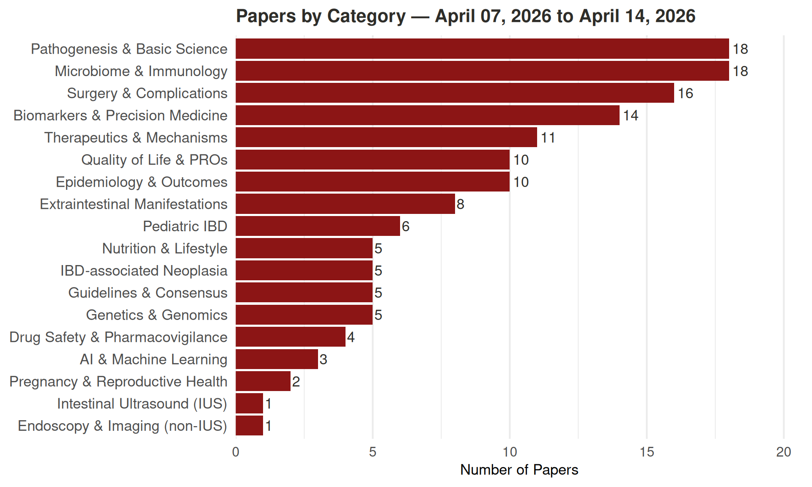

IBD Literature Report
Coverage: April 07, 2026 - April 14, 2026
142
Papers This Week
18
Categories
Papers by Category
Click a category to expand. Click a paper title to read its abstract.
Microbiome & Immunology (18 papers)
Clinical response and risk factors of fecal microbiota transplantation in children: a systematic review and meta-analysis.Meta-analysis European journal of pediatrics | 2026-04-14
The objective of this study is to investigate the clinical response and incidence of adverse events (AEs) following fecal microbiota transplantation (FMT) in children, across various diseases, populations, and treatment protocols. A systematic search was conducted across eight major Chinese and English databases, identifying 47 studies up to August 28, 2025, for inclusion. Study quality was assessed using the Quality Assessment with Diverse Studies (QuADS) tool. Single-arm rates were pooled via meta-analysis employing the Freeman-Tukey double arcsine transformation, followed by extensive subgroup comparisons to identify influencing factors. FMT demonstrated efficacy in pediatric recurrent Clostridium difficile infection (rCDI), inflammatory bowel disease (IBD), and autism spectrum disorder (ASD), although a higher incidence of AEs was observed in children with IBD. Subgroup analyses revealed that the use of donor feces from relatives or friends was associated with a higher clinical response rate in rCDI. The presence of comorbidities such as IBD diminished the response rate in rCDI patients. Younger age in rCDI and IBD patients showed a trend towards higher clinical response rates, though this did not reach statistical significance. No statistically or clinically significant differences were found in other subgroup comparisons. Meta-regression suggested IBD to be a risk factor for FMT-related AEs. This study innovatively delineates the efficacy-safety profile of pediatric FMT and outlines a pathway for optimizing individualized treatment regimens, providing crucial evidence-based guidance for clinical practice. This study has been registered on the PROSPERO database (CRD42024614196). • Fecal Microbiota Transplantation (FMT) demonstrates preliminary therapeutic potential in several pediatric diseases. • Existing evidence remains fragmented, with limited systematic data on factors modifying efficacy and safety in children. • The study revealed FMT’s high efficacy across rCDI, IBD, and ASD, and identified IBD as a risk factor for elevated FMT-related adverse events in pediatric patients. • Notably, related/friend donors improved rCDI response rates, while comorbidities like IBD reduced rCDI treatment efficacy.
Liu J, Sun X, Yuan P, Qin Y, Wu W, Fan Y, Zhang Y, Zou L, Ren C, Li S
Peptidomics: A New Dimension in Microbiome Research. Protein and peptide letters | 2026-04-10
The human gut microbiome is now recognised as a major determinant of health, with roles extending beyond digestion to influence neurodegeneration, metabolism, immunity, and pharmacological responses. Clinical studies link microbial imbalances to Alzheimer’s disease, Parkinson’s disease, depression, and cardiovascular disorders, yet the underlying mechanisms remain only partly understood. Methodological advances have progressively deepened our insight. DNA-based sequencing (metagenomics) catalogues microbial genes but reveals only potential functions. RNA-based sequencing (metatranscriptomics) highlights active gene expression, but instability of transcripts and poor correlation with protein activity limit its predictive value. Metabolomics measures small-molecule end products, providing direct evidence of microbial biochemistry and identifying disease-linked metabolites such as urolithin A, trimethylamine N-oxide, and equol. These approaches together have transformed microbiome science, but they remain incomplete. A critical and underutilised dimension is peptidomics: the systematic analysis of endogenous peptides in the gut and circulation. Enabled by peptide-enriching, protease-inhibiting workflows and high-resolution liquid chromatography-tandem mass spectrometry (LC-MS/MS), peptidomics directly captures unstable signaling peptides and proteolytic fragments that are often invisible to conventional proteomics. Coupled with emerging gut-specific peptide databases, such as MetaPep, and Artificial Intelligence (AI) assisted de novo sequencing and spectral prediction for non-human peptides, this provides a concrete technical route to reading out the functional peptide layer of the microbiome. Peptidomics can capture functional signals of host-microbiome interaction, reveal context-specific biomarkers, and provide mechanistic insight into disease. Recent studies demonstrate that peptide-level resolution uncovers microbial contributions to gut inflammation, modulates the gut-brain axis, and enables peptide-based disease stratification in conditions such as inflammatory bowel disease. However, despite these promising examples, peptidomics remains largely absent from mainstream microbiome research, which needs to be changed. Integrating peptidomics with existing genomic, transcriptomic, and metabolomic approaches will generate a more complete and functional picture of the microbiome. This shift will accelerate biomarker discovery, refine diagnostics, and expand the search for peptide-based therapeutics, positioning peptidomics as an essential next step in microbiome science.
Hilpert K
DOI: 10.2174/0109298665436241260327111926 | View on PubMed →
B cell-driven immune remodeling in inflammatory bowel disease: links to pathogenesis and therapeutic failure.Review Inflammation research : official journal of the European Histamine Research Society … [et al.] | 2026-04-10
Inflammatory bowel disease (IBD) is a chronic immune-mediated disorder characterized by dysregulated intestinal immune responses. Accumulating evidence indicates that B-lineage cells play important roles in shaping mucosal immunity. This review aims to summarize the physiological and pathological roles of intestinal B-lineage cells in IBD, with a particular focus on their functional remodeling during biologic therapy and emerging strategies to overcome biologic resistance. Relevant literature on B-lineage cells, IBD, mucosal immunity, and biologic therapies was searched and reviewed. Under physiological conditions, plasmablasts and plasma cells maintain intestinal homeostasis through IgA secretion, whereas B lymphocytes contribute via cytokine production, antigen presentation, and cellular interactions that support epithelial repair and barrier integrity. In IBD, B-lineage cells undergo pathogenic remodeling, with expanded effector subsets exhibiting enhanced inflammatory cytokine production, altered antibody profiles, and increased interactions with T cells, myeloid cells, and stromal cells. These changes disrupt epithelial integrity and sustain maladaptive immune activation, contributing to chronic mucosal inflammation. Biologic therapies targeting TNF, α4β7 integrin, and IL-12/23 exert direct and indirect effects on B-lineage cells, modulating their trafficking, survival, and functional states, and partially restoring immune balance. Nevertheless, persistent cellular plasticity and dysregulated survival signaling may enable pathogenic B-lineage subsets to retain inflammatory potential, contributing to treatment non-response or secondary loss of efficacy. B-lineage cells play critical roles in both intestinal homeostasis and IBD pathogenesis. Understanding their functional remodeling during biologic therapy may provide insights into treatment resistance and inform emerging strategies to overcome biologic resistance in IBD.
Li G, Cao H, Hong J
Mechanostimulatory Cues Determine Intestinal Fibroblast Fate and Profibrotic Remodeling in a Physiodynamic Human Gut-on-a-Chip.★ Advanced science (Weinheim, Baden-Wurttemberg, Germany) | 2026-04-10
Biomechanical cues such as fluid shear stress and mechanical strain regulate intestinal physiology, yet their roles in shaping fibroblast fate during early fibrotic remodeling remain poorly defined. Here, we use a microengineered human gut-on-a-chip model that enables independent control of shear stress and mechanical strain under conditions of intact or impaired epithelial barrier function to interrogate fibroblast dynamics. Inflammation-associated fibroblasts derived from an ulcerative colitis patient exhibit intrinsic tolerance to biomechanical stress, maintaining myofibroblast-like phenotypes marked by hypertrophy and elevated α-smooth muscle actin aligned with actin stress fibers. In contrast, normal fibroblasts from healthy donors are highly susceptible to fluid shear stress, undergoing matrix metalloproteinase-dependent disruption of focal adhesion signaling, extracellular matrix remodeling, and apoptotic cell death, whereas mechanical strain alone exerts minimal effects. Importantly, an intact epithelial barrier is necessary and sufficient to protect fibroblasts from shear-induced injury, suggesting that “good fences make good neighbors.” Under barrier dysfunction, prolonged shear exposure promotes the emergence of stiff 3D aggregates composed of mechanoadaptive, myofibroblast-like cells embedded within a complex fibrillar network. These findings identify that fluid shear stress contributes as a key driver of early profibrotic remodeling and highlight epithelial barrier integrity as a critical biomechanical safeguard in inflammatory bowel disease.
Min S, Than N, Shin YC, Ertugral EG, Kothapalli CR, Awoniyi O, Kim HJ
Disentangling the gut microbiome and inflammation in inflammatory bowel diseases: longitudinal observations from the IBSEN III study.★ Inflammatory bowel diseases | 2026-04-09
Despite the well-established involvement of the gut microbiome in inflammatory bowel disease (IBD), less is known about how the gut microbiome changes over time and how it varies with clinical disease activity and fecal calprotectin (f-calprotectin). To address this gap, we utilized samples from the population-based inception cohort of the Inflammatory Bowel Disease in South-Eastern Norway III (IBSEN III) study. Data and stool samples from study participants with IBD and symptomatic controls were collected at diagnosis and after 3, 6, and 12 months. Microbiome profiling of stool samples was performed targeting the V3-V4 region of the 16S rRNA gene, and a consensus-based approach of mixed models was employed for the longitudinal microbiome analysis. We included 1251 samples from 744 patients with ulcerative colitis, 618 samples from 356 patients with Crohn’ s disease and 266 samples from 164 symptomatic non-IBD controls. In the IBD population, we observed that levels of f-calprotectin decreased over time, as did the patient-reported disease activity (P < .001). Distinct changes in the gut microbiome of IBD patients were observed throughout the first year, such as increased alpha diversity (P < .001) and significant taxonomic changes.Notably, there was no covariation between the changes in alpha diversity and f-calprotectin or symptom score. The gut microbiome during the first year after IBD diagnosis showed changes that paralleled inflammation and clinical disease activity, albeit without covariation, suggesting that there may be a disease-driving impact of gut microbiome independent of inflammation and inflammation-driven symptoms. We longitudinally analyzed gut microbiome, inflammation, and symptoms in 1264 newly diagnosed, treatment-naive patients with IBD and symptomatic controls. Microbiome composition changed significantly during the first disease year, partly independent of inflammation and symptoms, suggesting distinct microbiome-driven disease processes.
Maseng MG, Hansen SH, Grännö O, Bang C, Lund C, Huppertz-Hauss G, Perminow G, Valeur J, Bengtson MB, Opheim R
Epithelial barrier DUOX2 serves as early immune defense in intestinal pathogen control. Mucosal immunology | 2026-04-09
Epithelial barriers constitute the first line of immune defense, preventing pathogen adherence, growth and entry through physical and chemical mechanisms. Essential to chemical defense are reactive oxygen species, usually provided by the phagocyte NADPH oxidase. DUOX2, a related oxidase, functions as sensor of the gut environment, and its dysregulation has been associated with inflammatory bowel disease. Here, we combine cell-based approaches with newly developed transgenic mice to explore how altering epithelial DUOX2 activity shapes host responses to intestinal bacteria including IBD-associated pathogens and to chemical colitis inducers. Although the pathogenic mechanisms of these bacteria differ, each triggered DUOX2 recruitment and transient H2O2 bursts in the vicinity of the pathogen during early, but not late, stages of infection. In vivo, epithelial DUOX2 acted as universal immune defense system without inducing or perpetuating intestinal inflammation. Our findings show that epithelial DUOX2 chemically undermines pathogen-induced niches, decreasing bacterial virulence and strengthening the barrier.
O’Mara M, Zhang S, Fergus C, Kelly VP, Knaus UG
Phosphorylated Cyclocarya paliurus polysaccharide alleviates DSS-induced ulcerative colitis by improving intestinal barrier function, inhibiting inflammation and regulating gut microbiota.★ International journal of biological macromolecules | 2026-04-08
Ulcerative colitis (UC) is a chronic and idiopathic inflammatory bowel disease with limited therapeutic options, high relapse rates, and potential adverse effects. Although natural polysaccharides have shown promise in alleviating colitis-associated inflammation, the impact of structural modification on their bioactivity and underlying mechanisms remains insufficiently explored. In this study, the pharmacological activities and mechanisms of phosphorylated Cyclocarya paliurus polysaccharides (P-CPPs) were systematically investigated in a dextran sulfate sodium (DSS)-induced murine colitis model. The results demonstrated that P-CPPs significantly improved colitis-associated pathological features and preserved intestinal barrier function, upregulated expression of the mucus barrier protein MUC-2, occludin, and claudin-1. Enhancement of barrier integrity was accompanied by a marked reduction in oxidative stress in both intestinal tissue and the liver. Moreover, P-CPPs effectively suppressed inflammation-related signaling pathways, including the NF-κB pathway and NLRP3 inflammasome activation, leading to decreased production of pro-inflammatory mediators such as TNF-α, IL-6, and lipopolysaccharide. In addition, P-CPPs modulated gut microbiota composition and metabolic activity, as reflected by increased microbial diversity and elevated levels of short-chain fatty acids. Collectively, these findings indicate that phosphorylation enhances the immunomodulatory and gut-regulatory effects of Cyclocarya paliurus polysaccharides. This study provides new insight into the structure-function relationship of modified polysaccharides and highlights the potential of P-CPPs as functional biomacromolecules for regulating colitis-associated intestinal immune responses.
He F, Zhu H, Xie J
Oral liposomal co-delivery of ultrasmall ceria and 5-aminosalicylic acid alleviates DSS colitis via ROS scavenging and microbiome remodeling. Journal of materials chemistry. B | 2026-04-08
Inflammatory bowel disease (IBD) is a refractory gastrointestinal disorder characterized by sustained intestinal inflammation, mucosal barrier dysfunction, and gut dysbiosis. Excess reactive oxygen species (ROS) is a key driver of these pathological processes. Although CeO2-based nanozymes can scavenge ROS, their clinical application is limited by poor aqueous stability. Here, we developed an oral nanozyme by co-encapsulating ultrasmall CeO2 nanoparticles and the clinical drug 5-aminosalicylic acid (5-ASA) within liposomes. The resulting formulation (CeLA) exhibited excellent colloidal stability and robust ROS-scavenging activity and provided marked cytoprotection against oxidative stress in vitro. In a dextran sulfate sodium (DSS)-induced colitis model, CeLA alleviated clinical symptoms, restored intestinal barrier integrity, and suppressed pro-inflammatory cytokine expression. Notably, CeLA also reshaped the dysbiotic gut microbiome by reducing pro-inflammatory bacterial taxa. This multifunctional nanozyme integrates antioxidant, anti-inflammatory, and microbiome-modulating effects, offering a promising therapeutic strategy for IBD.
Du J, Sun Y, Yu D, Lu S, Yu S, Wang M, Zhou G, Xu S, Zhang L, Zhu Y
The interplay of plant polysaccharide structure, gut microbiota metabolism, and host health: Mechanisms and perspectives.Review Life sciences | 2026-04-07
Plant polysaccharides, as natural biomolecules, possess the capability to modulate the structure and function of gut microbiota, subsequently influencing host health. Nevertheless, the molecular mechanisms underlying their interactions remain insufficiently understood. This article presents a systematic review of the impact of the chemical structure of plant polysaccharides, including monosaccharide composition and types of glycosidic bonds, on the metabolic preferences of gut microbiota. It emphasizes how structural variations in polysaccharides can promote the proliferation of specific gut microbiota, such as Bacteroidetes and Firmicutes. Additionally, the study analyzes critical enzymatic systems, including glycoside hydrolases (GHs) and polysaccharide lyases (PLs), alongside metabolic pathways associated with the production of short-chain fatty acids (SCFAs) that facilitate the degradation of plant polysaccharides by gut microbiota. Furthermore, it explores the influence of these metabolites on conditions such as obesity, diabetes, inflammatory bowel disease (IBD), and non-alcoholic fatty liver disease. The findings provide a robust theoretical framework for enhancing the utilization efficiency of bioactive polysaccharide components through targeted extraction and characterization techniques, thereby fostering potential advancements in innovative nutritional formulations and pharmacological applications.
Zhang J, Ma Y, Chang R, Wang R, Zhang J
Glycosidase-Derived Arabinoxylan Hydrolyzates Attenuate Intestinal Inflammation via Restructuring the Gut Microbiota-Metabolite Axis. Journal of agricultural and food chemistry | 2026-04-07
The highly polymeric structure and complex branching of arabinoxylan (AX) limit its immunomodulatory potential. This study investigated whether enzymatic hydrolysis using xylanase (XYN) and α-l-arabinofuranosidase (ARF) could enhance anti-inflammatory efficacy in DSS-induced colitis. Synergistic ARF-XYN treatment, yielding low-polymerization and debranched oligosaccharides, exhibited superior efficacy in ameliorating colitis symptoms, suppressing pro-inflammatory cytokines (IL-6, TNF-α, IL-1β), and restoring intestinal barrier integrity compared to native AX. Multiomics analyses revealed that ARF-XYN reshaped the gut ecosystem by enriching beneficial bacteria (Akkermansia, Faecalibaculum, Dubosiella) while suppressing pathogenic taxa (Bacteroides, Escherichia-Shigella, and Helicobacter). This microbial restructuring drove a metabolic shift characterized by increased bile acids and short-chain fatty acids, while suppressing inflammatory mediators (prostaglandin B2, histamine, quinolinic acid) and pro-inflammatory lipid metabolites (arachidonic acid, linoleic acid, and their derivatives). These findings demonstrate that precise enzymatic tailoring transforms AX into a potent functional prebiotic ingredient, offering a structure-guided prebiotic strategy for inflammatory bowel disease management through targeted microbiota-metabolite modulation.
Huang Z, Tu Y, Yang X, Yin L, Jia X
Comparative Effectiveness and Safety of Fecal Microbiota Transplantation in Ulcerative Colitis: An Updated Systematic Review and Meta-Analysis. Advances in therapy | 2026-04-07
Fecal microbiota transplantation (FMT) is a potential therapy for ulcerative colitis (UC). Evidence has expanded, but the impact of delivery route on efficacy and safety remains uncertain. We systematically searched PubMed, Embase, Cochrane Library, Web of Science and China National Knowledge Infrastructure (CNKI) from inception to October 2025 for randomized controlled trials (RCTs) comparing donor-derived FMT with placebo/sham or autologous FMT in patients with UC. Primary outcomes were clinical and endoscopic remission at induction (8-12 weeks). Adverse events (AEs) were secondary. Random effect models generated risk ratios (RRs) with 95% CIs. Pre-specified subgroup analyses compared delivery routes (colonoscopy, rectal enema, combined colonoscopy + enema, nasoduodenal infusion, oral capsules). Sixteen RCTs were included. Overall, FMT improved clinical remission (RR = 1.81, 95% CI: 1.41-2.31; I2 = 0%) and endoscopic remission (RR = 1.74, 95% CI: 1.00-3.01; I2 = 45.5%). By route, significant effects were seen for colonoscopy (RR = 1.58, 95% CI 1.05-2.37), rectal enema (RR = 1.62, 95% CI 1.04-2.54) and combined colonoscopy + enema (RR = 2.39, 95% CI 1.47-3.89) for clinical remission; nasoduodenal and oral capsule results were imprecise. For endoscopic remission, the combined route showed the most consistent benefit (RR = 2.19, 95% CI 1.04-4.62). AEs did not differ from control (RR = 1.03, 95% CI 0.90-1.18; I2 = 11.2%). FMT improves induction-phase clinical and endoscopic remission in patients with UC without increasing AEs. Efficacy appears route-dependent, with colonoscopy + enema demonstrating the largest effect. Head-to-head trials optimizing route and dosing with longer follow-up are warranted. Ulcerative colitis is a chronic condition that causes inflammation in the colon and rectum, leading to symptoms like abdominal pain, diarrhea and bleeding. While current medications help many patients, some do not respond well or experience side effects. Fecal microbiota transplantation (FMT) is a treatment that involves transferring beneficial bacteria from a healthy donor to restore balance in the gut. This study combined 16 randomized trials to evaluate the effectiveness and safety of FMT for ulcerative colitis. Overall, patients who received FMT were more likely to achieve remission compared to those receiving a placebo or their own stool. The best results were observed when FMT was delivered via colonoscopy followed by enemas. Other methods, such as capsules or upper gut delivery, showed uncertain effects because of the small number of trials available. Importantly, the side effect rates were similar between the FMT and control groups, indicating that FMT is generally safe in the short term. These findings suggest that FMT can help some patients with ulcerative colitis achieve remission, especially with colonoscopy and enemas, but further long-term studies are needed to confirm the durability of the benefits and identify the most effective delivery methods.
Huang B, An H, Qiu Y, Ye T, Huang Y, Zheng M, Shi D, Su Y, Wang R
Microbial mechanisms and therapeutic interventions in the periodontitis-inflammatory bowel disease axis: a comprehensive review.Review Journal of oral microbiology | 2026-04-06
Periodontitis and inflammatory bowel disease (IBD) are chronic inflammatory conditions of the oral and gastrointestinal tracts that exhibit bidirectional microbial and immunological crosstalk. Aimed at elucidating the bidirectional crosstalk between periodontitis and IBD at both microbiological and immunological levels and evaluate related therapeutic interventions, this review comprehensively summarizes recent evidence on their interaction via the oral-gut-bone axis, focusing on microbial ecology, host responses, and innovative therapies. Distinct yet overlapping dysbiotic signatures are observed in both diseases, with periodontal pathogens such as Porphyromonas gingivalis and Fusobacterium nucleatum capable of translocating to the gut and perturbing intestinal homeostasis, while gut inflammation reciprocally reshapes the oral microbiome. Mechanistic links include a spectrum of convergent pathways: (i) microbial metabolites-short-chain fatty acids, choline metabolites, indole derivatives, polyamines, and bile acids-that modulate barrier integrity and immune responses; (ii) shared immune cells and inflammatory mediators driving mucosal damage at both sites; (iii) bacterial extracellular vesicles (BEVs) and lysine lactylation (Kla)-mediated signaling; and (iv) oxidative stress, iron metabolism dysregulation, and ferroptosis contributing to tissue destruction. Therapeutic strategies targeting this axis encompass bidirectional interventions: periodontal and IBD treatments that mutually influence oral and gut health, natural anti-inflammatory and antimicrobial compounds, probiotics and prebiotics, oral and fecal microbiota transplantation, and emerging bacteriophage therapy. Critically, the clinical translation of collaborative dentistry-gastroenterology management is highlighted as a promising avenue for integrated care. By integrating findings across microbial ecology, host response, and therapeutic innovation, this review provides a comprehensive framework for understanding and targeting the periodontitis-IBD axis.
Lv W, Hu H, Huang Y, Yang J, Li Y, He J, Wang K, Liu Y, Wang Q
One therapy, many targets: redefining ulcerative colitis treatment through fecal microbiota transplantation.Review Therapeutic advances in gastroenterology | 2026-04-05
Ulcerative colitis (UC) is a chronic, relapsing inflammatory bowel disease driven by a multifactorial interplay between gut microbiota dysbiosis, immune dysregulation, and epithelial barrier dysfunction. Accurate diagnosis and a deeper understanding of UC pathogenesis are essential for developing durable and mechanism-based therapies. Despite major advances, conventional treatments such as immunosuppressants and biologics often fail to achieve sustained remission and carry significant adverse effects, underscoring the need for novel, multi-target interventions. This review synthesizes current insights into UC pathogenesis, diagnostic approaches, and therapeutic strategies, with a particular focus on fecal microbiota transplantation (FMT) as a single therapy acting on multiple disease axes. By restoring microbial equilibrium, FMT can modulate host immunity and reinforce epithelial integrity, collectively promoting mucosal healing. We summarize mechanistic evidence, findings from preclinical and clinical studies, and key variables influencing FMT efficacy, including donor selection, preparation, and delivery routes. While evidence supports the therapeutic promise of FMT, challenges remain regarding standardization, long-term engraftment, and sustained safety. Nonetheless, FMT represents a transformative therapeutic platform that redefines UC treatment by bridging microbial restoration, immune modulation, and barrier repair. Future research should aim to refine FMT protocols and develop next-generation microbiota-based therapeutics, such as defined microbial consortia and live biotherapeutic products, to enable safer, more consistent, and personalized modulation of the gut ecosystem in UC. Transferring healthy gut bacteria: how one treatment can target multiple causes of ulcerative colitis Ulcerative colitis is a long-term disease that causes inflammation and ulcers in the large intestine. It can lead to symptoms such as stomach pain, diarrhea, and tiredness, which often return even after treatment. The exact cause is not fully understood, but scientists know that it involves three main problems: an imbalance in the gut bacteria (dysbiosis), a weakened gut barrier that normally protects the intestine, and an overactive immune system. Traditional treatments, like anti-inflammatory drugs and immune suppressants, help control symptoms but do not always prevent the disease from coming back and can have side effects. This has encouraged researchers to look for new, more natural ways to treat the condition. Fecal microbiota transplantation (FMT) is a new approach where beneficial gut bacteria from a healthy donor are transferred into the patient’s intestine. This helps restore the natural balance of bacteria, strengthens the intestinal barrier, and calms the immune system. In other words, one treatment can act on several levels of the disease at once - microbes, the gut wall, and the immune response. Our review article explains how FMT works, what current research shows about its safety and success, and what challenges remain. It also looks ahead to the future of microbiota-based therapies, including using specific bacterial mixes instead of whole stool, to make the treatment safer, more effective, and personalized for each patient.
Rynikova M, Bojcukova V, Demeckova V
Targeted and quantitatively modeled biologic delivery via dual-functional probiotic yeast in inflammatory bowel disease.★ Journal of controlled release : official journal of the Controlled Release Society | 2026-04-04
Probiotic-based therapies are an emerging class of therapeutic interventions that offer a promising strategy for managing chronic and inflammatory conditions. Here, we engineered a dual-functional probiotic yeast strain, Saccharomyces boulardii, designed to target inflammatory lesions within the gastrointestinal tract and locally deliver protein-based therapeutics. We employed advanced experimental and modeling techniques to characterize the engineered probiotic with preclinical therapeutic efficacy and pharmacokinetic validation in an inflammatory bowel diseases (IBD) mouse model. Through these studies, we demonstrate that our engineered yeast enables efficient and localized delivery of biologics with prolonged gastrointestinal retention, driving restorative phenotypic shifts towards measurable improvements in disease outcome. Overall, this work establishes a robust framework for the development of engineered microbial therapeutics, representing an integrative strategy for treating chronic, inflammatory diseases through targeted, localized delivery of bioactive molecules.
Hazelton AG, Heavey MK, Vlcek JR, Chaudhari AP, Little TS, Villanueva-Sanchez B, Parker A, Potluru SS, Wang Y, Cone AS
Current advances in restoring intestinal barrier homeostasis by natural medicines.Review★ Phytomedicine : international journal of phytotherapy and phytopharmacology | 2026-04-01
The intestinal mucosa serves as a critical interface separating the internal environment of the human body from the external milieu, with its barrier function determining the appropriate entry of luminal contents. Dysfunction of this barrier is closely associated with the development of intestinal disorders, such as inflammatory bowel disease and irritable bowel syndrome, as well as a spectrum of extraintestinal diseases. Both Eastern and Western traditional medicine regard the intestine as central to overall health, and since most natural medicines are administered orally, they are likely to interact with the intestinal mucosa and could potentially influence intestinal barrier homeostasis. This review summarizes the mechanisms by which natural medicine (including compounds and extracts) restores the homeostasis of the intestinal barrier, and further elucidates their therapeutic implications for ameliorating both local intestinal pathologies and systemic extraintestinal diseases. This review is based on a comprehensive synthesis of recent literature regarding the restoration of intestinal barrier homeostasis. The focus is on the mechanisms through which natural medicines, including herbal extracts and traditional Chinese medicine (TCM) formulations, influence intestinal epithelial cells, immune regulation, and gut microbiota balance, as well as the role of the “Gut-X axis” in modulating extraintestinal diseases. Relevant studies published in English between January 1, 2020, and September 30, 2025, were identified through a systematic search of databases such as PubMed, Web of Science, Scopus, and Google Scholar. Only original preclinical research, including in vitro, ex vivo, and animal model studies, was considered. Keywords related to natural medicines, intestinal barrier integrity, TCM, herbal extracts, formulations, and relevant mechanisms (e.g., inflammation, microbiota regulation, epithelial integrity) were used for the search. Studies were assessed for relevance, and key data on therapeutic effects and mechanisms were extracted for further analysis. The analysis demonstrates the multi-targeted efficacy of natural medicines in restoring intestinal barrier homeostasis, specifically in: enhancing epithelial integrity; regulating intracellular programs such as apoptosis and autophagy; balancing immune responses; remodeling the gut microbiota-metabolite profile; and exerting therapeutic impact across established “Gut-X axes” (specifically the Gut-Lung, Gut-Liver, Gut-Brain, Gut-Endocrine, and Gut-Heart axes). The multi-targeted nature of natural medicines mirrors the complexity of intestinal barrier regulation, yet also presents a challenge for mechanistic delineation. Overcoming the inherent limitations of current research necessitates a paradigm shift towards a systems medicine approach. This transition is essential to systematically decode the sophisticated pharmacology of natural medicines and elucidate their synergistic actions on the intestinal barrier.
Wang Y, Tan S, Huang J, Wu Q, Shen X, Bao W
Changyanning Ameliorates Dextran Sodium Sulfate-Induced Colitis by Modulating Gut Microbiota Inflammation and Intestinal Barrier in Mice. Molecular nutrition & food research | 2026-04
The rising prevalence of colitis and the limitations of existing therapies necessitate novel therapeutic agents. Unlike studies focusing on single compounds, this research elucidates the integrated therapeutic mechanism of the traditional Chinese medicine formula Changyanning (CYN), specifically targeting the synergistic regulatory effects on inflammatory responses, intestinal barrier function, and gut microbiota during dextran sodium sulfate (DSS)-induced colitis. In a male C57BL/6 mouse model, CYN treatment significantly ameliorated clinical symptoms and histopathological damage. CYN potently suppressed TLR4/NF-κB signaling pathway, reduced proinflammatory cytokine levels (TNF-α, IL-6, and IL-1β), and upregulated IL-10. Notably, CYN also restored intestinal barrier integrity by upregulating tight junction proteins (ZO-1, Claudin-1, and Occludin) and mitigated oxidative damage. 16S rDNA sequencing further revealed that CYN reshaped the gut microbiota network, notably increasing beneficial bacteria (e.g., Akkermansia) and depleting inflammation-associated bacteria (e.g., Turicibacter). Collectively, CYN alleviates colitis via a multi-targeted mechanism involving the suppression of inflammatory signaling, reinforcement of the intestinal barrier integrity, regulation of oxidative balance, and restoration of gut microbiota. These findings validate CYN as a promising functional botanical candidate drug for the management of inflammatory bowel disease (IBD).
Ye J, Jiang Y, Yang K, Hu J, Lu J, Tian B
MAAMOUL: Metabolic network-based discovery of microbiome-metabolome shifts in disease. bioRxiv : the preprint server for biology | 2026-03-30
A central goal in human gut microbiome research is to identify disease-associated functional shifts, an objective increasingly pursued through metagenomic and metabolomic assays. However, common differential abundance analyses of genes or metabolites often yield long and difficult-to-interpret feature lists. Aggregating features into predefined pathways can improve interpretability but relies on fixed pathway boundaries that may not reflect context-specific functional changes. Moreover, even when paired metagenomic-metabolomic data are available, they are often analyzed separately or linked only through simple statistical associations. We introduce MAAMOUL, a knowledge-based computational framework that integrates metagenomic and metabolomic data to identify disease-associated, data-driven microbial metabolic modules. Leveraging prior knowledge of bacterial metabolism, MAAMOUL maps disease-association scores onto a global microbiome-wide metabolic network and identifies custom modules enriched for altered genes and metabolites. Applying MAAMOUL to inflammatory bowel disease (IBD) and irritable bowel syndrome (IBS) datasets revealed significant disease-associated modules not detected by conventional pathway-level analysis. In IBD, modules reflected disrupted sulfur and aromatic amino acid metabolism and enhanced microbial nucleotide salvage, whereas in IBS they linked purine and nicotinate/nicotinamide metabolism. These results demonstrate that network-guided multi-omic integration can uncover coherent functional shifts in the gut microbiome overlooked by single-omic or purely statistical approaches. MAAMOUL is available as an R package at https://github.com/borenstein-lab/MAAMOUL .
Muller E, Baum S, Borenstein E
Taraxacum alleviates ulcerative colitis, accompanied by the modulation of gut microbiota and restoration of intestinal barrier integrity. Frontiers in cellular and infection microbiology | 2026-03-27
Previous studies have shown that Taraxacum(TM) possesses strong antioxidant, anti-inflammatory, and antibacterial activities, but the mechanism regarding how TM attenuates IBD requires further exploration. This study evaluated the therapeutic effects of TM (0.15, 0.75, and 1.5 g/kg) on ulcerative colitis induced by Dextran Sulfate Sodium (DSS) in mice. After 14 days of treatment following colitis induction, the herbal extract alleviated body weight loss and pathological abnormalities in the mice. In comparison to the DSS group, the 1.5 g/kg The TM therapy group had markedly elevated levels of colonic T-SOD, T-AOC, and GSH-Px (P < 0.05), alongside a substantial decrease in MDA content (P < 0.05) and inflammatory cytokines (IL-2, IL-6, IFN-g, TNF-a) (P < 0.05). Furthermore, TM markedly elevated the concentrations of volatile fatty acids (acetate, propionate, isobutyrate, and butyrate) in the cecal contents (P < 0.05). The 0.75 and 1.5 g/kg TM groups also elevated the expression of Claudin-1, Occludin, and ZO-1 (P < 0.05), whereas the DSS group showed reduced expression of these mucosal barrier proteins. Concerning gut microbiota, at the Phylum level, the relative abundance of Firmicutes was markedly elevated in the 1.5 g/kg TM groups (P < 0.05), Bacteroidetes exhibited a considerable reduction (P < 0.05); TM alleviated colitis concurrent with the restoration of beneficial Muribaculaceae and reduction of harmful Desulfovibrio. Notably, Desulfovibrio was inhibited more effectively than in 5-ASA, a change associated with intestinal homeostasis. TM alleviated colitis is correlated with enhancing antioxidant capacity, reducing inflammation, restoringbarrier integrity, and modulating the gut microbiota.
Fu C, Chen Z, Xu C, Hua H, Ye J
Pathogenesis & Basic Science (18 papers)
Protocol for rapid allelic discrimination qPCR genotyping of the Winnie mouse model. STAR protocols | 2026-04-11
Winnie mice are a widely used in vivo model of inflammatory bowel disease and carry a missense mutation in the Muc2 gene. Here, we present a protocol for genotyping Winnie mice using TaqMan allelic discrimination quantitative PCR. We describe tissue collection, rapid crude DNA extraction, probe-based amplification with dual-labeled fluorophores, and fluorescence-based genotype calling in a single reaction. This protocol enables qualitative SNP genotyping without post-amplification processing and can be readily adapted to other defined point mutations.
Mansoori B, Liang C
Bioinformatic validation of LCN2 as a common hub gene for ferroptosis, pyroptosis and necroptosis in ulcerative colitis. BMC gastroenterology | 2026-04-11
Abstract not available.
Zhu N, Wang M, Wang M, Ren J
Bromocriptine Attenuated Ulcerative Colitis and Colonic Inflammation by Inhibiting IL-1β, Likely through NF-κB Down-regulation: Integrated Network Pharmacology and in vivo Experimental Validation. Current pharmaceutical design | 2026-04-10
Gastrointestinal dopamine (DA) plays a crucial role in maintaining gut homeostasis. In patients with ulcerative colitis (UC), a decrease in DA levels due to changes in the gut microbiome can activate immune cells in the colon’s mucosal layer, leading to the secretion of various inflammatory mediators and ultimately causing damage to the colonic mucosa. In the present study, we initially analysed integrated network pharmacology and investigated the protective effect of bromocriptine (BRO), a dopamine D2 receptor (D2R) agonist, on acetic acid (AA)-induced UC in rats. Wistar rats were randomly divided into six groups (N=6/group). The intrarectal administration of AA induced UC. Treatment groups (III-IV) received three doses (2, 5, and 10 mg/kg) of BRO once daily for seven days. Group VI animals were administered mesalamine. On the eighth day, the animals were sacrificed to evaluate the lesion scores, ulcer indices, histopathological findings, nitric oxide (NO) levels, and myeloperoxidase (MPO). Finally, tissue levels of interleukin (IL-1β) and nuclear factor kappa B (NF-κB) were measured using ELISA. BRO treatment effectively improved the disease severity index (DAI), colonic lesion score, and ulcer index in rats with AA-induced UC. Histopathological studies revealed that treatment with BRO limited mucosal damage and neutrophil extravasation in colonic tissue. Moreover, biochemical assessments of MPO and NO showed a significant decrease in the levels of both inflammatory mediators following treatment with BRO. Additionally, the results indicated a reduction in the expression of IL-1β and NF-κB in colonic tissue, further supporting the amelioration of colonic inflammation caused by BRO. The present research demonstrated that BRO exerts a protective effect by influencing the expression of IL-1β and NF-κB in rats with AA-induced UC, thus restricting the activity of immune cells in the colonic mucosa. Findings of this research suggest that BRO may be a promising therapeutic agent for the management of UC.
Saha S, Mondal S, Chatterjee O, Devroy P, Sur D, Bala A
DOI: 10.2174/0113816128418229260223013818 | View on PubMed →
The role of neutrophils in the pathophysiology of inflammatory bowel diseases.Review Periodontology 2000 | 2026-04-09
Inflammatory bowel disease (IBD) encompasses a spectrum of chronic disorders of the gastrointestinal tract, with a potential bidirectional relationship with periodontitis. Neutrophils are key regulators of immune-inflammatory responses and play a major role in both diseases. Isolating and characterizing gut lumen neutrophils may help to map the evolution of cell phenotypes from peripheral blood to saliva and help explain certain mechanistic relationships within the oral-gut axis. This review aims to critically evaluate the biological sources of human neutrophils and the emerging analytical approaches to their study in IBD. Studies employing various methodological strategies to isolate and analyze neutrophils derived from both systemic (peripheral blood) and mucosal compartments in IBD are synthesized. Data obtained through different analytical modalities are discussed. Neutrophils play multifaceted roles in IBD beyond their traditional function in pathogen clearance and acute inflammation. They contribute to both tissue injury and repair through the release of proteolytic enzymes, reactive oxygen species, cytokines, and neutrophil extracellular traps. Recent advances in analytical technologies have uncovered remarkable phenotypic and functional diversity, shaped by the local microenvironment within the intestinal mucosa. Neutrophils’ ability to both exacerbate mucosal damage and facilitate resolution of inflammation underscores the need for improved methodological approaches that enable precise characterization of their functional states in both systemic and tissue contexts. Improved phenotypic and functional profiling of neutrophils may facilitate the identification of biomarkers predictive of disease activity, treatment response, and relapse risk, and contribute to the understanding of the role of neutrophils in the interplay between IBD and periodontitis.
Steffens JP, Yay-Kus E, de Molon RS, Stoica V, Rimmer P, Hirschfeld J, Iqbal AJ, Iqbal T, Chapple I
Dendrobium huoshanense polysaccharides alleviate DSS-induced ulcerative colitis in mice: comparison between different parts of plant and role of GLP-1/GLP-1R axis. Journal of ethnopharmacology | 2026-04-08
Dendrobium huoshanense has been long used to treat gastrointestinal disorders including ulcerative colitis (UC) in traditional Chinese medicine. Polysaccharides as its main active components can alleviate UC by reducing inflammation, and promote the secretion of glucagon-like peptide-1 (GLP-1), which possesses anti-inflammatory effects via GLP-1 receptor (GLP-1R). However, it remains unclear whether polysaccharides from different parts of this herb are equally effective in alleviating UC and whether polysaccharides function via GLP-1/GLP-1R axis. To identify the part in which the polysaccharide is most effective in alleviating UC and to explore its mechanism of action through GLP-1/GLP-1R axis. The physicochemical properties of polysaccharides were analyzed. A dextran sulfate sodium (DSS)-induced UC mouse model was used to assess colitis-associated damage via morphological scoring, histopathological evaluation and inflammatory examination with multi-cytokine array and western blotting. Gut microbiota compositions, short-chain fatty acid contents and GLP-1 levels were measured, and their roles were checked using antibiotic mixture and GLP-1R antagonist Exendin (9-39). Stem, leaf and flower polysaccharides, with different molecular weight, monosaccharide composition and spatial conformation, differentially alleviated UC symptoms, and stem polysaccharide (DHPS) showed the strongest efficacy, as evidenced by improved epithelial integrity, mucus barrier and inflammatory disorder. DHPS-alleviated UC was independent of DHPS-altered gut microbiota and positively correlated with DHPS-elevated GLP-1 levels, which could be abolished by Exendin (9-39), suggesting that GLP-1-activated GLP-1R signaling mediated the effects of DHPS against UC. DHPS is the most effective polysaccharide for alleviating DSS-induced UC through GLP-1/GLP-1R axis, proposing DHPS is a valid candidate for UC treatment using D. huoshanense.
Gao X, Shang ZZ, Li QM, Zhang FY, Zha XQ, Luo JP
Tanshinone IIA alleviates ferroptosis and oxidative injury in chronic experimental colitis through Nrf2 activation. Biochemical and biophysical research communications | 2026-04-07
This study aims to explore the mechanism by which Tanshinone IIA (Tan IIA) inhibits ferroptosis and oxidative injury in TNBS-induced Inflammatory Bowel Disease (IBD) in mice. Experimental colitis was induced by the rectal administration of 2,4,6-Trinitrobenzenesulfonic acid (TNBS). Primary intestinal cells, luciferase reporter assay and nuclear factor erythroid 2-related factor 2(Nrf2)-null mice were used to clarify if Tan IIA ameliorates ferroptosis and oxidative injury in TNBS-induced colitis dependent on Nrf2. Tan IIA (20 mg/kg) ameliorated colonic weight/length ratio, pathological scores and fibrosis in TNBS-induced mice. Moreover, Tan IIA reduced pro-inflammatory factors and increased the expression of tight junction proteins, likely contributing to the improvement of colonic barrier integrity. Tan IIA significantly induced the expression of Nrf2 target genes in primary intestinal epithelial cells and activated Nrf2 luciferase reporter activities in HCT116 cells. In TNBS-induced wild-type mice but not in Nrf2-null mice, Tan IIA significantly improved ferroptosis and oxidative injury as revealed by decreased ferritin light chain (FTL) level and upregulated Nrf2 downstream genes heme oxygenase-1 (HO-1) and superoxide dismutase 1 (SOD1) expression. In conclusion, Tan IIA significantly alleviates colonic ferroptosis and oxidative injury induced by TNBS in mice through modulation of the Nrf2 signaling.
Song B, Zhang K, Sun J, Gong X, Zhao J, Liu W, Wang Q
C6ORF120 promotes DSS-induced colitis by inhibiting autophagy through the PI3K/AKT/mTOR signaling. Biochemical and biophysical research communications | 2026-04-06
C6ORF120 is an N-glycosylated secretory protein with unknown functions, particularly in the context of inflammatory bowel disease (IBD). This study aimed to clarify the role of C6ORF120 in IBD and delineate the underlying molecular mechanisms. A colitis model was established in C6orf120 knockout (C6orf120-/-) mice using dextran sulfate sodium (DSS). At the cellular level, inflammatory injury was simulated in Caco-2 cells through lipopolysaccharide (LPS) stimulation. A comprehensive array of techniques, including Western blot, immunohistochemistry, ELISA, transcriptome sequencing, autophagy flux assays, and transmission electron microscopy (TEM), was employed to systematically assess the impact of C6ORF120 on intestinal inflammation, autophagy, and associated signaling pathways. The knockout of C6orf120 markedly mitigated the severity of DSS-induced colitis in the murine models, as indicated by a reduction in body weight loss, amelioration of colon shortening, decreased infiltration of inflammatory cells, and diminished serum concentrations of inflammatory cytokines such as TNF-α, IL-1β, and IL-6. Simultaneously, the deficiency of C6ORF120 augmented the autophagic activity as evidenced by an increased LC3-II/I ratio and reduced p62 protein levels. Mechanistic investigations have demonstrated that C6ORF120 inhibits autophagy by activating the PI3K/AKT/mTOR signaling pathway, thereby intensifying intestinal inflammation. C6ORF120 facilitates the progression of DSS-induced colitis by suppressing protective autophagy through the activation of the PI3K/AKT/mTOR pathway. This study has elucidated the pivotal role of C6ORF120 in the pathogenesis of colitis and suggests a potential novel target for therapeutic intervention of inflammatory bowel disease.
Zhang J, Qiao R, Li X
Post-translational modifications of gasdermin D: implications for pyroptosis and autoimmune diseases.Review International immunopharmacology | 2026-04-06
Gasdermin D (GSDMD) is a key executioner of pyroptosis, a lytic and pro-inflammatory form of programmed cell death that supports host defense but can also drive autoimmune and inflammatory pathology. While proteolytic cleavage is necessary to generate the pore-forming GSDMD N-terminal (GSDMD-NT) fragment, accumulating evidence indicates that post-translational modifications (PTMs)-including phosphorylation, ubiquitination, palmitoylation and acetylation-create an additional “execution-control” layer that tunes membrane targeting, oligomerization, stability and signal termination. Nevertheless, PTM-resolved regulation of GSDMD remains incompletely mapped. Accordingly, systematic validation in human-relevant systems and cell-type-resolved PTM profiling will be essential for translation. In this review, we synthesize current knowledge of GSDMD PTMs and integrate them into a hierarchical, spatiotemporal framework spanning initiation, membrane licensing, checkpoint inhibition and clearance. We further connect PTM mechanisms to representative disease contexts, including sepsis/endotoxemia, systemic lupus erythematosus and inflammatory bowel disease, to illustrate how shifts between “licensing” and “clearance” can shape tissue injury while potentially affecting host defense. Finally, we summarize emerging small-molecule modulators that target this PTM layer (e.g., palmitoylation and ubiquitination axes), discuss translational opportunities and limitations, and outline experimental priorities for PTM-based therapeutic development.
Su K, Shen C, Wu W, Zhou F, Ye H
Peiminine attenuates inflammatory bowel disease by suppressing TLR4 mediated NFƙB pathway: an integrated network pharmacology and experimental validation. Scientific reports | 2026-04-06
Abstract not available.
Shah B, Sharma A, Patel M, Shah U, Parekh N, Solanki N
Advances in Crohn’s Disease: A Comprehensive Review of Pathophysiology, Diagnosis, and Emerging Therapeutics.Review JGH open : an open access journal of gastroenterology and hepatology | 2026-04-05
Crohn’s disease (CD) is a chronic inflammatory condition of the bowel with a rising global incidence. Its complex etiology involves genetic susceptibility, environmental factors, and alterations in the gut microbiota, leading to dysregulated immune responses. Prompt diagnosis and personalized treatment are essential to prevent disease flares and complications. This review provides a comprehensive overview of CD, including its epidemiology, pathophysiology, diagnosis, management, treatment goals, and prospects. Treatment goals in CD have evolved beyond symptomatic control to achieving mucosal healing to prevent disease related complications. Advances in biologic therapies including the use of anti-TNF agents, vedolizumab, and ustekinumab in CD have improved outcomes, but challenges such as immunogenicity and accessibility remain. A ‘treat-to-target’ approach based on biomarkers such as C-reactive protein and fecal calprotectin allows for objective disease monitoring and adjustment of treatment as needed to achieve these targets. Promising new drug classes including Janus kinase inhibitors and anti-interleukin-23 antibodies are emerging as potential therapies. Personalized medicine is evolving as a vital approach to tailor treatment based on individual genomic, clinical, and environmental factors. Future research to refine CD management should focus on predictive biomarkers, treatment algorithms, and head-to-head trials. Overall to improve outcomes and quality of life for those living with CD, management requires a multifaceted approach that considers disease severity, individualized patient characteristics, and the evolving therapeutic landscape.
An YK, Gilmore R, Radford-Smith G, Begun J
The Scutellaria baicalensis-Coptis chinensis herb pair ameliorates ulcerative colitis via integrated modulation of the aryl hydrocarbon receptor/NLRP3 inflammasome axis with tryptophan metabolites.★ Phytomedicine : international journal of phytotherapy and phytopharmacology | 2026-04-05
The Scutellaria baicalensis Georgi and Coptis chinensis Franch (SC) herb pair constitutes a vital component in many classic formulas exhibited well-documented synergistic therapeutic efficacy against bacterial infections and various inflammatory conditions. However, the precise mechanism of this herb pair in treating ulcerative colitis (UC) is unknown. To investigate the therapeutic potential and elucidate the mechanistic basis of SC herb pair treating UC. A dextran sulfate sodium (DSS)-induced UC mouse model was established to evaluate the therapeutic effect of SC herb pair. Colonic inflammation, tight junction proteins, NOD-like receptor protein 3 (NLRP3) inflammasome, and the Aryl hydrocarbon receptor (AHR) - Cytochrome P450 1A1 (CYP1A1) axis were assessed. AHR activation by principal bioactive compounds in SC was verified, while endogenous AHR ligands affected by SC herb pair treatment were monitored by HPLC-MS. The role of AHR in suppressing NLRP3 inflammasome activation and mediating SC herb pair’s therapeutic effects was validated using the AHR antagonist CH223191 and AHR-knockout (AHR-/-) mice. Compared with the UC model, SC herb pair administration effectively alleviated the weight loss, colon shortening and mucosal injury. It also markedly suppressed mRNA levels of pro-inflammatory mediators (IL-1β, IL-6 and TNF-α), as well as the protein expression of iNOS and COX-2, and inhibited the NLRP3 inflammasome activation, a key driver of UC pathogenesis. SC herb pair enhanced tight junction protein expression in colitis mice and upregulated AHR and its target gene CYP1A1 in colitis mice. Luciferase assays confirmed direct activation of AHR by key bioactive ingredients in SC screened by molecular docking. Additionally, SC herb pair treatment restored tryptophan metabolite (kynurenine and indole-3-acetic acid) homeostasis and these metabolites also could activate AHR signaling. Crucially, both pharmacological inhibition with CH223191 and genetic ablation of AHR abrogated the beneficial effects of SC herb pair in UC mice. The SC herb pair ameliorates UC thorough AHR activation, which is achieved both directly via its bioactive constituents and indirectly through the restoration of AHR-activating tryptophan metabolites. Subsequently, AHR activation suppresses the NLRP3 inflammasome-driven colonic inflammation and restores intestinal barrier, thereby providing a mechanistic basis for its therapeutic effects against UC.
Fang D, Sheng X, Li X, Tan B, Zhang J, Ding K, Kang A
Shaoyao Gancao Decoction alleviates ulcerative colitis-associated secondary liver injury by inhibiting the phosphorylation of pyruvate dehydrogenase in macrophages. Journal of ethnopharmacology | 2026-04-04
The classic formula Shaoyao Gancao Decoction (SGD) originates from “Treatise on Exogenous Febrile Disease”. Traditionally, it is used to treat ulcerative colitis (UC) and the secondary liver injury. However, its mechanism is still unclear. To evaluate the efficacy of SGD on the secondary liver injury in UC and explore its potential mechanisms. A mouse model of UC with liver injury was established using dextran sulfate sodium. Therapeutic effects were assessed via histopathology and serum biochemistry. Mechanisms were explored through RNA sequencing, quantitative metabolomics, molecular docking, and confirmatory experiments. SGD alleviated histopathological damage in the colon and liver, and reduced serum ALT/AST levels. RNA sequencing indicated that glycometabolism signaling was shifted in the liver tissues of the model mice, while SGD treatment mitigated this change. Additionally, the M1 polarization of macrophages is inhibited by SGD. Quantitative metabolomics revealed that SGD upregulated the flux of the tricarboxylic acid cycle in lipopolysaccharide-stimulated macrophages. The components within SGD could bind to PDH and PDK respectively, thereby blocking the PDK-PDH interaction, thus prevent the phosphorylation of PDH. The intervention of the PDH inhibitor weakened the inhibitory effect of SGD on macrophage polarization. Molecular docking experiments indicated that benzoylpaeoniflorin and glycyrrhizic acid bind to PDH and PDK, respectively. These findings elucidate that SGD improves the secondary liver injury in UC by blocking PDK-PDH binding, thereby inhibiting M1 polarization of macrophages.
Tang F, Tang Y, Li L, Zhou F, Sun C, Ouyang B, Huang D, Li M, He W, Pei G
Schisantherin A alleviates DSS-induced colitis by upregulating ferredoxin 1 to inhibit inflammation and restore intestinal barrier function.★ Phytomedicine : international journal of phytotherapy and phytopharmacology | 2026-04-03
Ulcerative colitis (UC) is a chronic non-specific inflammatory disease of the intestine with unknown etiology, and its effective treatments are still lacking. Repairing the intestinal mucosal barrier and reducing persistent inflammation is the key strategies for the treatment of UC. Schisantherin A (Sin A), a lignan compound extracted from Schisandra chinensis, exhibits anti-inflammatory, antioxidant, and neuroprotective effects. However, the role and mechanism of Sin A in the treatment of UC remains unclear. This study aims to investigate the effect of Sin A on UC and elucidate its underlying molecular mechanism. The effect of Sin A on UC was evaluated using a 3 % dextran sulfate sodium (DSS)-induced mouse model. Transcriptome sequencing analysis was performed to preliminarily explore the mechanism of Sin A in colitis. Based on the transcriptome results, the expression of proteins and mRNAs related to the FDX1-PI3K/AKT axis was determined by qPCR, immunofluorescence (IF), and western blotting. Additionally, plasmid transfection, molecular docking, drug affinity responsive target stability (DARTS), and cellular thermal shift assay (CETSA) were employed to verify the interaction between FDX1 and Sin A. Sin A can alleviate the clinical symptoms of UC mice, inhibit intestinal inflammation and repair intestinal barrier damage. Both transcriptomic sequencing results and ex vivo experiments confirmed that the therapeutic effect of Sin A on UC is associated with modulation of the FDX1-PI3K/AKT axis. Further studies demonstrated that FDX1 is a critical target for Sin A to inhibit the PI3K/AKT signaling pathway and exert its anti-UC effect. This study demonstrates for the first time that Sin A is a potential natural active ingredient for the treatment of UC, as it alleviates UC by suppressing inflammation and preventing barrier disruption. Furthermore, the critical role of the FDX1-PI3K/AKT axis in UC was confirmed, providing a theoretical basis for the application of Sin A.
Xiao H, Li N, Rao J, Zhang Y, Yu M, Yang H
miR-369-3p Modulates LRRK2-Mediated Inflammation and Autophagy in RAW264.7 Macrophages. International journal of molecular sciences | 2026-04-02
Leucine-rich-repeat kinase 2 (LRRK2) is a multidomain protein highly expressed in immune cells and implicated in the regulation of immune functions including immune signaling, cytokine release and autophagy. LRRK2 is one of the therapeutic targets in Parkinson’s Disease (PD). Aberrant activation of LRRK2 can also contribute to intestinal inflammation, mainly in inflammatory bowel disease (IBD). Hence the modulation of LRRK2 may influence gut inflammation providing an improvement in disease outcomes. Over the years, microRNAs (miRNAs) have acquired much attention thanks to their potential as therapeutic targets in several pathological conditions, including inflammatory disorders. In this study, we aimed to examine the ability of miR-369-3p in the modulation of autophagy targeting LRRK2 expression. Bioinformatics analysis revealed that Lrrk2 is a target gene of miR-369-3p, and LRRK2 expression was increased in ulcerative colitis patients compared with that in a healthy control. In in vitro analysis, we validated that mimic transfection with miR-369-3p in Raw264.7 significantly reduced the expression of LRRK2 both in basal and inflammatory conditions. Moreover, the inhibition of LRRK2 limited the nuclear translocation of Nuclear factor kappa B (NF-κB) induced by lipopolysaccharide (LPS) stimulation. In turn, we found that, in inflammatory conditions, the intracellular increase in miR-369-3p precluded the inhibition of autophagy by LRRK2 by restoring autophagy marker light chain 3 (LC3)II/I ratio, BECLIN-1 and decreasing p62 expression. Furthermore, we detected that the upregulation of miR-369-3p decreased the release of pro-inflammatory mediators Tumor necrosis factor (TNF), C-C motif ligand 2/Monocyte chemoattractant protein-1 (CCL2/MCP-1), C-C motif ligand 3/Macrophage inflammatory protein-1 alpha (CCL3/MIP-1α) and C-C motif ligand 5/Regulated on activation, normal T-cell expressed and secreted (CCL5/RANTES) and increased the anti-inflammatory cytokine interleukin 10 (IL-10) in response to LPS. This study supports the anti-inflammatory potential of miR-369-3p in immune cells and suggests the potential of miR-369-3p as a therapeutic agent in the treatment of acute intestinal inflammatory conditions such as ulcerative colitis.
Scalavino V, Piccinno E, Grassi I, Armentano R, Giannelli G, Serino G
Crohn’s disease is an obstructive lymphangitis.Review★ Journal of Crohn’s & colitis | 2026-04
Crohn’s disease has been recognized by pathologists as disease of lymphatic vasculature since 1939. However, textbooks and scholarly gastroenterological associations fail to acknowledge this. Here we reference some of the published works that have made this point over the years and reference a montage of obstructed lymphatics from Crohn’s disease patients. Immunohistochemistry has allowed us to recognize that lymphatics are occluded by granulomas, the latter focally attached to endothelium. Granulomas in downstream lymphatic vasculature cause lymphocyte plugs upstream, followed by lymphangiectasia, edema, stiffening of the part and boggy mucosa. The focal necrosis at the point of granuloma attachment resembles that caused by Chlamydia suis in experimental pigs and murine norovirus in Stat1-deficient mice.
Van Kruiningen HJ, Colombel JF, Tonelli P
Structural Characterization and Anti-Colitis Mechanisms of Polygonatum sibiricum Polysaccharides via Modulation of Neutrophil Extracellular Traps (NETs)-Macrophage Crosstalk. Nutrients | 2026-03-25
Polygonatum sibiricum (PS), a perennial herbaceous plant belonging to the Liliaceae family, is widely distributed in China and other East Asian countries. PS has been used as food and medicine for thousands of years, and its rhizomes are rich in Polygonatum sibiricum polysaccharides (PSP), which exhibit various bioactivities, yet their structural features and therapeutic mechanisms against ulcerative colitis (UC) remain unclear. A homogeneous polysaccharide, PSP-1b (57.45 kDa), was isolated from the rhizomes of PS via ion-exchange and gel filtration chromatography and structurally characterized using chromatographic and spectroscopic methods. In vivo, its effects were evaluated in a dextran sulfate sodium (DSS)-induced mouse model of UC, while in vitro mechanisms were explored using macrophages stimulated with lipopolysaccharide (LPS) and neutrophil extracellular traps (NETs). PSP-1b was identified as a neutral polysaccharide with minimal branching. Its primary structural backbone was largely composed of →4)-β-D-Galp-(1→ residues. A portion of these backbone residues was substituted at the O-6 position by side chains primarily composed of β-D-Galp-(1→ units. In vivo, PSP-1b significantly alleviated DSS-induced colitis by reducing inflammatory cytokine secretion, suppressing colonic macrophage infiltration, and reversing neutrophil extracellular traps (NETs) deposition. In vitro, PSP-1b directly interacted with TLR4, inhibited the MAPK/NF-κB signaling pathway, and attenuated LPS- and NET-induced macrophage polarization and inflammation. PSP-1b as a promising candidate for functional foods or therapeutic agents targeting inflammatory bowel disease.
Xu J, Zheng J, Ke W, Qiu Y, Zhang L, Wu C, Zhang X, Xia D, Li F
Eucommia polysaccharides alleviate experimental colitis by reshaping colonic microbiota composition, metabolites, and modulating the IL-17 signaling pathway. Frontiers in microbiology | 2026-03-25
Intake of plant polysaccharides are associated with a reduced risk of ulcerative colitis (UC). Eucommia polysaccharides (EUPs) are promising nutritional supplements with notable antibacterial, anticancer, and anti-inflammatory properties. They exhibit a moderate molecular weight and are resistant to gastric acid degradation. Yet, the action mechanisms of microorganisms and metabolites in EUPs for UC treatment remain incompletely elucidated. The current study was formulated to assess the therapeutic efficacy of EUPs against fecal microbiota transplantation (FMT)-induced colitis, focusing on comparing the effects of low-dose and high-dose EUPs. After East Frisian sheep received dextran sulfate sodium (DSS) intervention, their fecal microbiota was used to prepare fecal bacterial suspensions for mouse FMT. Administration of high-dose EUPs alleviated key colitis symptoms, improved colonic epithelial barrier, preserved microbial diversity, and significantly reduced harmful bacterial (e.g., g_Klebsiella and g_unidentified_Enterobacteriaceae). Furthermore, this treatment significantly enriched the bile secretion pathways, particularly those involving deoxycholic acid (DCA) and hyodeoxycholic acid (HDCA). Additionally, DCA and HDCA were significantly negatively correlated with g_unidentified_Enterobacteriaceae and g_Klebsiella, and these two bile acids were also negatively correlated with key genes associated with the IL-17 signaling pathway. Overall, this study elucidates that EUPs ameliorate FMT-induced colitis in a mouse model via restoring gut microbes and metabolites and modulating the IL-17 pathway, thereby providing novel insights into therapeutic strategies for UC.
Yao W, Yan S, Du R, Zhao Y, Zhang H, Wang B, Cheng X, Ma Z, Bao S, Li X
Revealing key genes and molecular mechanisms associated with dietary restriction in ulcerative colitis. Frontiers in molecular biosciences | 2026-03-25
Ulcerative colitis (UC) is characterized by chronic colonic mucosal inflammation, with its pathogenesis involving multidimensional interactions and limitations in clinical treatment. Dietary restriction (DR) is a commonly used approach for UC patients to alleviate symptoms, and exploring the role of DR-related genes in UC could provide new directions for the development of precision therapies. Bioinformatics analysis was performed on UC-related datasets (GSE75214, GSE73661) obtained from the GEO database. Candidate genes were acquired by intersecting differentially expressed genes (DEGs) with dietary restriction-related genes (DRRGs). Subsequently, key genes were identified via machine learning algorithms and ROC curve analysis. A deep neural network (DNN) model and a diagnostic nomogram were constructed. In addition, gene set enrichment analysis (GSEA), gene set variation analysis (GSVA), immune infiltration analysis, and single-cell RNA sequencing (scRNA-seq) analysis were conducted. Finally, the expression of key genes was validated through experiments. CPT1A, ANGPTL4, and CLDN1 were identified as the key genes. The deep neural network (DNN) model achieved area under the curve (AUC) values of 0.914 and 0.933 in the two datasets, respectively; the diagnostic nomogram exhibited high predictive performance (AUC > 0.7), and decision curve analysis (DCA) revealed its potential clinical net benefit. Enrichment analyses demonstrated that the key genes were significantly enriched in dietary restriction (DR)-related pathways, including cytokine-receptor interaction, the IL2-STAT5 signaling pathway, and fatty acid metabolism. Thirty-two activated pathways and five inhibited pathways were detected in UC patients (e.g., the oxidative phosphorylation pathway was suppressed). Immune infiltration analysis identified 27 differentially infiltrating immune cell types. CLDN1 was localized to epithelial cells, ANGPTL4 to fibroblasts, and CPT1A to endothelial cells. Macrophages were identified as a signaling hub in UC, showing intensified crosstalk with stromal and vascular cells via pathways such as ACKR1. Experimental validation confirmed that ANGPTL4 and CLDN1 were highly expressed in UC, whereas CPT1A was lowly expressed, a pattern consistent with the expression trends observed in public database analyses. These results indicated that CPT1A, ANGPTL4, and CLDN1 are involved in the pathological regulation of UC by DR through modulating the metabolism-immune-barrier axis, providing novel biomarkers and potential intervention targets for the clinical diagnosis and targeted therapy of UC.
Li Y, Xu M, Li W, Zhang H, He Q, Zhang S
Surgery & Complications (16 papers)
A web-based prediction model using routinely available clinical variables to estimate surgical risk in Crohn’s disease during remission or mild activity. Scientific reports | 2026-04-13
Abstract not available.
Xie K, Yao H, Jiang Z, Liu H, Sun Q, Yang L, Yuan L
Malignancy in Long-Standing Perianal Fistulizing Crohn’s Disease: Too Little, Too Late. Digestive diseases and sciences | 2026-04-13
Perianal fistulizing Crohn’s disease (PFCD) is a chronic, aggressive phenotype associated with an elevated risk of malignancy arising within long-standing fistula tracts. Although rare, PFCD-associated cancers carry a poor prognosis and are often diagnosed late due to overlapping symptoms with active inflammatory disease and the absence of established screening guidelines. We present a case of a 71-year-old man with nearly 50 years of untreated PFCD, who developed mucinous adenocarcinoma arising from a chronic perianal fistula. Despite multiple hospitalizations for recurrent abscesses, sepsis, and fistulizing disease, he initially declined definitive surgical and medical therapy, and later was unable to be initiated on advanced Crohn’s treatments due to ongoing infections. Progressive enlargement of a complex perianal abscess and new pelvic collections raised concern for malignant transformation, and exam under anesthesia (EUA) with drainage ultimately revealed mucinous adenocarcinoma. His clinical course rapidly deteriorated, preventing oncologic therapy initiation, after which he was transitioned to hospice. This case highlights key diagnostic challenges in PFCD-associated cancer, including the difficulty distinguishing malignancy from active inflammation with imaging and the need for biopsy via EUA for confirmation. Persistent or new perianal symptoms in patients with long-standing PFCD-particularly beyond 10 years-should prompt urgent evaluation. Although formal guidelines are lacking, early involvement of a multidisciplinary team is essential to optimize diagnosis and management. Greater awareness of this rare complication is needed to support earlier recognition and to inform future strategies for screening and treatment.
Goyal A, Syal G, Fleshner P, Gu P
Early immunomodulator therapy reduces the risk of intestinal resection in Crohns disease: a systematic review and meta-analysis.★ Inflammatory bowel diseases | 2026-04-13
The optimal timing for initiating immunomodulators (IMs) in Crohns disease (CD) remains unclear. We assessed whether early IM therapy reduces the risk of intestinal resection. MEDLINE, EMBASE, and the Cochrane Library were systematically searched for studies comparing outcomes by timing of IM (thiopurines or methotrexate) initiation in CD. The primary outcome was intestinal resection. Pooled hazard ratios (HRs) with 95% CIs were calculated using a random-effects model. Seven cohort studies including 4297 patients were analyzed. Early IM initiation was associated with a 47% lower risk of intestinal resection compared with late or no IM therapy (pooled HR, 0.53; 95% CI, 0.44-0.65; I2 = 23%). This protective effect was consistent across subgroups, including studies in which all patients received IMs and early initiation was associated with a lower risk than late initiation (HR 0.59; 95% CI, 0.42-0.83). When early treatment was defined as initiation within 1-2 years of diagnosis, early IM use was associated with a lower risk of intestinal resection than late or no IM therapy, with no heterogeneity (HR 0.55; 95% CI, 0.43-0.70; I2 = 0%). A broader definition of early treatment as within 3 years of diagnosis also showed benefit compared with late or no IM therapy (HR, 0.52; 95% CI, 0.37-0.74) but with moderate heterogeneity (I2 = 57%). Early IM therapy is associated with a substantially lower risk of intestinal resection in CD compared with later or no IM therapy. The most consistent benefit occurs when treatment is initiated within the first 1-2 years after diagnosis, supporting the concept of a therapeutic “window of opportunity” during which timely IM initiation may favorably alter the disease course. Early use of immunomodulators in Crohns disease—especially within 1-2 years after diagnosis—significantly reduces the risk of intestinal surgery. This meta-analysis of 7 cohort studies supports a therapeutic “window of opportunity” for timely treatment to improve long-term outcomes.
Yoon J, Jun YK, Lee HS, Yoo JH, Park JJ
Frailty in inflammatory bowel disease: a missing link in personalized care for the aging IBD population.★ Inflammatory bowel diseases | 2026-04-11
Frailty is a potentially reversible condition that reflects decreased physiological reserve and is increasingly recognized in older patients with inflammatory bowel disease (IBD). Although frailty is frequently associated with advanced age, multi-morbidity, and disease severity, this condition represents a distinct clinical syndrome with independent prognostic significance that warrants dedicated assessment. We performed a narrative review of studies exploring frailty in patients with IBD, focusing on definitions, prevalence, assessment tools, clinical implications, and interventions. Two main conceptual models of frailty have been applied to IBD: the phenotypic model, an individual-level assessment defining frailty as a syndrome; and the cumulative deficit model, which is suited for retrospective identification. While eleven frailty tools have been used in IBD studies, none were specifically designed or validated for the IBD patient population. Owing to heterogeneous definitions and populations, the reported prevalence of frailty in IBD patients ranges from 6% to 62%. Frailty is associated with increased risks of hospitalization, prolonged hospitalization, postoperative complications, infections, and mortality. Key drivers of frailty in IBD include fatigue, sarcopenia, and malnutrition, common features of IBD that may share mechanisms. While these factors contribute to frailty, the syndrome itself independently predicts adverse clinical outcomes. Current limitations include heterogeneous definition, underrepresentation of older patients, lack of longitudinal data, and absence of IBD-specific tools. Frailty is a critical, under-recognized determinant of poor outcomes in IBD. Systematic screening and integration into care pathways could improve patient stratification and management. Future research should aim to validate specific assessment tools and test interventions to ameliorate frailty in older IBD patients. Frailty is a common but often overlooked condition in older patients with inflammatory bowel diseases (IBD). In this review we show that frailty in IBD patients strongly predicts complications and death, independently of disease activity, and highlights the need for screening and tailored interventions in IBD care.
Le Cosquer G, Gilletta C, Kochar B, Ananthakrishnan AN, Buisson A
Effect of polydeoxyribonucleotide as a potential therapeutic agent to enhance the healing of Crohn’s perianal fistula.★ Inflammatory bowel diseases | 2026-04-11
The treatment of Crohn’s perianal fistula remains challenging owing to its recurrent nature and resistance to complete healing. This study aimed to assess the postoperative outcomes, including fistula closure rates, following Crohn’s perianal fistula surgery, with and without polydeoxyribonucleotide administration. A retrospective review was conducted on patients who underwent fistula closure operations for Crohn’s perianal fistula at a single tertiary center in Seoul, Korea, between January 2018 and June 2024. Patients were divided into two groups based on the use of local polydeoxyribonucleotide (PDRN) injections during fistula closure operations, and clinical variables and postoperative outcomes were compared between the groups. Among the 47 patients, 21 (44.7%) were assigned to the PDRN group and 26 (55.3%) were assigned to non-PDRN group. Baseline characteristics between the two groups showed no significant difference. During the mean follow-up of 30.4 months, patients in the PDRN group demonstrated a significantly higher complete fistula closure rate (70.0% vs 26.9% at 6 months, and 83.3% vs 46.2% at 12 months; P = .005), and a shorter time from surgery to complete closure (3.3 ± 2.6 months vs 5.9 ± 3.8 months; P = .044), compared with the non-PDRN group. Multivariate analysis revealed PDRN as an independent factor significantly associated with Crohn’s perianal fistula closure (HR 2.336; 95% CI, 1.092-4.997, P = .029). PDRN is a potential therapeutic agent that presents a viable option for Crohn’s perianal fistula surgery, improving complete fistula closure rate through a safe, cost-effective, and relatively simple procedure. This study suggests the feasibility of using polydeoxyribonucloetide as a potential therapeutic agent that may facilitate more frequent and accelerated fistula closure following Crohn’s perianal fistula surgery, highlighting its safety, practicality, and cost-effectiveness.
Kim HK, Yoon YS, Lee JL, Park EJ, Kim MH, Kim YI, Kim CW, Park IJ, Lim SB, Yu CS
Decreasing primary resection rates for Crohn’s disease but unchanged re-resection rates: A nationwide Danish population-based cohort study from 1997 to 2021.★ Clinical gastroenterology and hepatology : the official clinical practice journal of the American Gastroenterological Association | 2026-04-09
The overarching goal in the medical management of Crohn’s disease (CD) is to minimize disease burden for patients and prevent disease progression, where surgery often is necessary. The aim of this study was to examine rates of intestinal resections in CD over the past decades in a nationwide cohort. We identified all patients diagnosed with incident CD in Denmark from 1997 to 2021 from the Danish National Patient Registry. Cumulative incidences of intestinal resections and measures of disease severity were compared between calendar periods. Among 17,498 CD patients, 5-year resection rates decreased from 28% (95% CI: 26%-31%) in 1997-2000 to 16% (95% CI: 15%-17%) in 2013-2017. The proportion of elective surgeries increased from 60.2% to 67.7%, patients were operated earlier in their disease course (preoperative disease duration decreased from 1.9 years to 0.2 years), and more patients underwent laparoscopic procedures (increasing from 7.3% in to 64.1%). There was no evidence of increased disease severity or complexity at first intestinal resection over time. From 1997 to 2017, 5-year rates of re-resections remained constant at 16%. Use of postoperative biologics within 12 months after first resection gradually increased to 31%, while the use of endoscopy within 12 months increased to 37% in the most recent period. Rates of primary resections in CD have decreased over the past decades without any evidence that this has been achieved at the expense of increased complexity at surgery. Re-resection rates have not changed the past decades, suggesting a potential for improvement.
Mark-Christensen A, Kristiansen EB, Laurberg S, Erichsen R
Less Common Vulvar Dermatologic Diseases. Clinical obstetrics and gynecology | 2026-04-09
Less common vulvar dermatologic disorders discussed here can mimic infection, inflammatory dermatoses, and malignancy. This review outlines 4 entities clinicians should recognize. A pyogenic granuloma is a benign, rapidly growing vascular neoplasm that bleeds easily; excision is typically curative. Hidradenitis suppurativa causes recurrent nodules, sinus tracts, and scarring. Diagnosis is clinical with multimodal management using antibiotics, biologics, and surgery. Aphthous ulcers are a diagnosis of exclusion, with treatment centering on analgesia and anti-inflammatory therapy. Vulvar Crohn disease is rare, often diagnosed late, and managed with biopsy plus coordinated dermatology-gastroenterology care. Recognizing these dermatoses is imperative for timely diagnosis and management.
Kassels A, Chapman MC, Sam A, Kraus C
Lack of disparities in postoperative care after ileocecal resection in patients with Crohn’s disease at tertiary inflammatory bowel diseases centers. Therapeutic advances in gastroenterology | 2026-04-08
Prior studies suggest that longer drive time (DT) to specialists and higher area deprivation index (ADI) are linked to worse outcomes in inflammatory bowel disease (IBD), but their impact on postileocolic resection (ICR) care in patients with Crohn’s disease (CD) is not well defined. We aimed to evaluate disparities in post-ICR care based on DT and ADI. Spatial analysis was performed with ArcGIS Pro to geocode patient and medical facility addresses with StreetMap Premium locators. High DT was defined as >60 min from the center. Data were analyzed using basic statistics and multivariate logistic regression. A retrospective cohort study was performed of CD patients’ post-ICR care at two tertiary-care IBD centers (January 2018-March 2023). Our study included 293 patients; 44% had high DT. High DT had a higher median number of preoperative advanced therapy (2 vs 1, p = 0.007). Despite this, there was no difference between cohorts in median days to postop ileocolonoscopy (IOE; 257 vs 332, p = 0.59) and surgical recurrence rate (21% vs 27%, p = 0.278). Tobacco use and perianal disease were associated with increased odds of postoperative IOE (adjusted odds ratio (aOR) 2.09) and advanced therapy initiation (aOR 2.00). We identified no differences in postoperative colonoscopy timing or surgical recurrence in patients with CD at two tertiary IBD centers based on DT or ADI. Given the lack of disparities in care delivery among patients treated in tertiary IBD centers, further comparative studies to care outside of specialized networks are needed to evaluate whether centralization to IBD centers is superior. Lack of disparities in postoperative care after ileocecal resection in patients with Crohn’s disease at tertiary inflammatory bowel diseases centers This study assessed post-ICR care disparities in Crohn’s disease based on drive time and area deprivation. Among 293 patients, no differences in post-op care or recurrence were found, suggesting equitable care at tertiary IBD centers, regardless of geographic or socioeconomic factors.
Coombs S, Powell M, Johnson K, Hu J, Webb M, McDaniel P, Deepak P, Barnes EL
Crohn’s Disease Complicated by Undiagnosed Hemophilia A: A Case of Recurrent Massive Lower Gastrointestinal Bleeding.Case report ACG case reports journal | 2026-04-08
Severe gastrointestinal bleeding is a rare but potentially fatal complication of Crohn’s disease (CD). In the literature, there are some previously described cases, but there are no clear guidelines on how to manage these patients. We present the case of a patient with ileal CD and previously unknown hemophilia A. The patient experienced 2 episodes of massive intestinal bleeding, the last one requiring surgery. The disease proved difficult to treat with extension to upper gastrointestinal tract, despite being on biological therapy. In addition, diagnosis of coagulation disorders as hemophilia in patients with CD is rare but potentially catastrophic, requiring prepared multidisciplinary teams.
Soares C, Rodrigues M, Martins D, Sousa P, Cancela E, Ferreira MJ, Casimiro C, Silva A, Ministro P
VALIDATE-PERIANAL: an international real-world multi-centre exploratory validation of the TOpClass definition of a radiologically healed fistula in perianal fistulising Crohn’s disease. Insights into imaging | 2026-04-07
Radiological healing on MRI is the ultimate therapeutic goal in Class 2a perianal fistulising Crohn’s disease (pfCD). The TOpClass consortium recently defined radiological healing (TOpClass-RH) by the absence of T2 hyperintensity, a completely fibrotic fistula tract, and the absence of contrast enhancement when used. This study aimed to validate TOpClass-RH in real-world clinical practice. VALIDATE-PERIANAL was a retrospective, multi-centre international study. Patients with pfCD with a baseline MRI scan showing active disease and follow-up MRI evidence of radiological fistula healing between 2021 and 2023 were identified. Paired scans were independently reviewed by three gastrointestinal radiologists using TOpClass-RH criteria, with consensus adjudication. A minimum of 12 months of clinical follow-up was required. The primary outcome was sustained clinical remission; secondary outcomes included inter-rater reliability (Cohen’s kappa) and rates of proctectomy and stoma formation. Of 977 patients screened, 40 with pfCD met the inclusion criteria;14/40 (35%) fulfilled TOpClass-RH criteria. Sustained clinical remission was achieved in 93% of TOpClass-RH patients. Clinical recurrence occurred in 1/14 (7%) of TOpClass-RH patients versus 8/26 (30.8%) in the non-RH group (RR 4.3 [0.60-31.0], p = 0.12), with a median follow-up of 28 months. Inter-rater reliability was excellent (κ 0.89-0.95). There was a trend toward lower rates of proctectomy and stoma formation in the TOpClass-RH group. TOpClass-RH was associated with sustained clinical remission, although the study was underpowered to detect statistically significant differences. The definition demonstrated excellent inter-rater reliability, supporting TOpClass-RH as a clinically meaningful radiological endpoint for trials and diagnostic stratification in pfCD. Larger prospective studies are required. This study validates the TOpClass criteria for defining a radiologically healed fistula in perianal Crohn’s disease, providing radiologists with practical pearls, pitfalls, and illustrative figures that advance clinical radiology practice and research application in MRI interpretation and trial standardisation. The TOpClass definition provides an internationally agreed and standardised MRI-based criteria for identifying a radiologically healed fistula in perianal Crohn’s disease. 93% of patients who met the TOpClass criteria for a radiologically healed fistula achieved sustained clinical remission, with excellent inter-rater reliability. The TOpClass criteria offer a potential benchmark for clinical trials, where a radiologically healed fistula represents the aspirational gold standard, associated with long-term remission in perianal fistulising Crohn’s disease.
Anand E, van Croonenburg TJ, Samaan S, Tozer P, Hart A, Deepak P, Ballard DH, Stoker J, Lung P
Primary Intestinal Lymphangiectasia Presenting as Recurrent Chylous Ascites: A Rare Case.Case report Journal of investigative medicine high impact case reports | 2026-04-06
Primary intestinal lymphangiectasia (PIL) is a rare protein-losing enteropathy, typically diagnosed in childhood. Adult-onset PIL is exceptionally rare and poses a significant diagnostic challenge, often diagnosed as other gastrointestinal diseases. A 28-year-old female, presented with recurrent chylous ascites, and hypoalbuminemia (2.3 g/dL); no hepatic dysfunction or immunoglobulin deficiency was evident; comprehensive evaluation excluded hepatic, malignant (lymphoma), and infectious etiologies (tuberculosis, filariasis). Past history is significant for a presumptive diagnosis of Crohn’s disease, which was initially made based on clinical picture and laboratory finding of elevated fecal calprotectin, however, endoscopy and histology studies were inconclusive. On further investigations, imaging showed colonic wall thickening with mesenteric lymphadenopathy, and ascitic fluid analysis showed chylous ascites without evidence for malignant or infectious etiology. Upper endoscopy revealed multiple white duodenal plaques, and terminal ileal biopsies confirmed notable lymphatic dilation. Treatment was initiated with dietary modification (low-fat, high-protein, medium-chain triglyceride supplementation) and budesonide; the patient showed partial response. Later on, Octreotide therapy was initiated, and led to gradual resolution of ascites. Adult onset PIL is challenging to diagnose, particularly when initially misdiagnosed as an inflammatory bowel disease. For correct diagnosis, thorough evaluation, by histopathology and exclusion of secondary causes, is essential. Dietary therapy is the mainstay of management; additional benefits can be obtained by pharmacologic options like octreotide in refractory cases. This case is among the first reported cases of adult-onset PIL from Palestine, contributing to the limited literature and highlighting the need for heightened clinical awareness of such rare presentations.
Hroub M, Babaa B, Dwayat A, Habes Y, Ramzi M, Maree OH, Natsheh M, Attawna S, Eltamimi B, Jobran F
Prognostic Utility of Albumin and the C-Reactive Protein-to-Albumin Ratio for Predicting Intravenous Steroid Response in Acute Severe Ulcerative Colitis. Journal of clinical medicine | 2026-04-04
Background/Objectives: Acute severe ulcerative colitis (ASUC) is a high-risk condition associated with intense inflammation and a substantial risk of early colectomy. Intravenous steroids (IVS) remain the first-line therapy; however, steroid nonresponse is common. While the C-reactive protein-to-albumin ratio (CAR) has been proposed as a prognostic marker, data on its dynamic changes and late-phase performance remain limited. This study aimed to evaluate the serial performance of albumin and CAR at days 3 and 7 and to assess their association with early and delayed steroid response in a real-world cohort of biologic-naive ASUC patients. Methods: Biologic-naive patients hospitalized with ASUC between 2010 and 2023 were retrospectively analyzed. Disease severity and treatment response were defined using Truelove-Witts and Oxford criteria. Clinical and biochemical parameters, including albumin, CAR, and neutrophil-to-lymphocyte ratio (NLR), were assessed at baseline and on days 3 and 7. Associations with steroid response were evaluated using ROC analysis and multivariable logistic regression. Results: Ninety-eight patients were included. The IVS response rate was 11.2% on day 3 and 56.1% by day 7. Among nonresponders, 25% required infliximab rescue therapy, and colectomy occurred in 12.2%. Although day 3 CAR showed a trend toward discrimination, this did not reach statistical significance (p = 0.098) and should be considered exploratory. By day 7, responders had significantly higher albumin levels and lower CAR values (p < 0.05). Albumin (AUC = 0.702) and CAR (AUC = 0.713) demonstrated comparable performance. In multivariable analyses, day 7 albumin and CAR were significantly associated with steroid response, whereas NLR was not associated. Conclusions: Albumin and CAR are clinically relevant biomarkers associated with steroid response in ASUC. Early changes, particularly in CAR, may provide preliminary signals of nonresponse but require cautious interpretation. In contrast, day 7 measurements appear to reflect ongoing inflammatory dynamics and treatment evolution rather than true baseline predictors. Serial assessment of these biomarkers may support treatment monitoring and help optimize the timing of rescue therapy.
Süleyman S, Emin P, Hüseyin A, Çağatay A, Şehmus Ö, Kamil Ö
Evaluation of Long-Term Outcomes of Crohn’s Disease Complicated by Intra-Abdominal Abscess: A Retrospective International Cohort Study. Journal of clinical medicine | 2026-04-03
Background: Crohn’s disease complicated by intra-abdominal abscesses often requires surgery. Percutaneous drainage may prevent surgery, but optimal post-drainage management is unclear. We aimed to analyze the long-term outcomes of Crohn’s disease with intra-abdominal abscesses after intervention. Methods: Patients with penetrating Crohn’s disease and a single intra-abdominal abscess were enrolled in this multicenter, international, retrospective study after the detection of the abscess (baseline), with a minimum follow-up of 12 months. Those requiring urgent bowel resection were excluded. Patients were grouped by elective surgical need after successful (catheter insertion with effective drainage) percutaneous drainage (controls: no pre-resection drainage). The primary outcome was abscess recurrence. We also assessed stoma rate, post-procedural complications, hospitalizations, advanced treatment need, postoperative luminal recurrence, and need for re-drainage. Results: We studied 157 patients with Crohn’s disease (9 countries; males: 58%, median age: 32.4 [interquartile range: 25-39 years]); 89/157 underwent percutaneous drainage (median follow-up: 95.9 weeks [interquartile range: 58-104]). Abscess recurrence did not differ by drainage (p = 0.221). Abscess size was associated with advanced-treatment initiation (Odds ratio: 0.978; 95% confidence interval: 0.960-0.997, p = 0.023) and postoperative luminal recurrence (Odds ratio: 1.044, 95% confidence interval: 1.012-1.078, p = 0.007). Time to resection was longer after drainage, and ROC analysis raised predictive value for re-drainage (16.6 weeks post-drainage; AUC = 0.82, 95% confidence interval: 0.73-0.92). Patients without drainage had more post-procedural complications. Conclusions: Abscess size should guide management. Delayed resection may increase re-drainage odds, whereas surgery alone may have higher complication rates. Percutaneous drainage can safely postpone resection.
Bacsur P, Nemeczek S, Filip R, Fousekis F, Mpakogiannis K, Kagramanova A, Argyriou K, Pastras P, Triantos C, Miheller P
Self-Assembly of Anti-Inflammatory Peptide Amphiphiles for Mucosal Health. Chembiochem : a European journal of chemical biology | 2026-04
Broad spectrum anti-inflammatory peptide amphiphiles (AIF-PAs) have been developed as an innovative strategy for the treatment of chronic mucosal inflammation and the prevention of HIV transmission. Novel lipopeptides based on two linear sequences of anti-inflammatory peptides were obtained by solid-phase peptide chemistry. In a pilot study, ex vivo exposure of colorectal tissue explants from Crohn’s disease patients to AIF-PAs induced a downregulation of the proinflammatory profile. Furthermore, the HIV inhibitory potency of AIF-PAs was evaluated ex vivo in colorectal tissue explants, obtaining sub-micromolar IC50 values. Characterization of AIF-PAs self-aggregation in aqueous solution revealed that the net charge distribution within the peptides influenced their conformation in water and their self-assembly into larger structures. AIF-PAs with neutral net charge displayed a β-sheet conformation, whereas AIF-PAs with positive net charge were characterized by a random coil conformation. The morphology of the nanostructures fully correlated with the peptide secondary structure and self-aggregation levels. Interactions with model membranes and epithelial cells demonstrated that the cationic charge and amphiphilic nature of self-assembled AIF-PAs facilitated their binding and localization to lipid bilayers and cell membranes. Finally, AIF-PAs were unable to cross epithelial cell monolayers in permeability assays, indicating a low mucosal permeation potential. Their lack of permeation reduces systemic absorption, thus concentrating and retaining the bioactive peptides at the mucosal surface, where local activity is desired. In summary, peptide-based therapies leverage the beneficial anti-inflammatory properties of peptides, combined with amphiphilic structures that allow precise targeting and improved delivery to mucosal tissues.
Gómara MJ, Pérez-Pomeda I, Pons R, Ziprin P, Herrera C, Haro I
Impact of Delayed Diagnosis in IBD on Clinical Outcomes and Healthcare Delivery. Diagnostics (Basel, Switzerland) | 2026-03-30
Background: Delays in diagnosis are unfortunately quite common in most health systems. It is apparent that timely diagnosis is more likely to have a favourable outcome. However, there may be many reasons why timely diagnosis is not always achieved. The aim of our study was to report on the impact of delays on IBD-related adverse outcomes (AOs). Methods: New patients referred for suspected IBD to a single tertiary care centre between January 2013 to December 2017 were identified using EMR. For purposes of the study, a cut-off time was set by investigators for each delay-type based on best average hospital waiting times. The reasons for delays in patient journey until start of treatment and data on pre-defined AOs (steroid & other rescue therapies, hospitalisations, surgery) were recorded for each patient until end of June 2021. The data were analysed using multiple Pearson correlations and Cox proportional Hazard model to determine whether there is a difference in survival without AOs between patients with and without a delay. Results: Total of 105 patients were identified using stringent criteria (M = 58; median age = 32 y) with a long median follow-up of 55 months. 65, 27 and 13 patients had final diagnosis of Ulcerative colitis, Crohn’s disease and Unclassified colitis respectively, and analysed collectively. In our cohort, the longest delay-types noted were-patients seeking medical attention (median = 4 months; range 1 to 84 months), arranging gastroenterology clinic review after referral from primary care (median = 5 weeks; range 1 to 30 weeks), and waiting for index endoscopy (median = 3 weeks; 1 to 36 weeks). Patient stratification based on delay-type using specific cut-off times for each showed a statistically significant difference in survival without AOs for all (when comparing delay v/s no delay). Conclusions: In our cohort we report that delays, and subsequent untreated chronic inflammation, leads to poor outcomes in patients with newly diagnosed IBD regardless of whether delays are patient-related or health-system-related. Also, cumulative delays in the hospital appear to increase the use of biologics in consecutive years. Understanding these factors help rectify and offer long-term solutions.
Shivaji UN, Majumder S, Rao A, Bazarova A, Parigi TL, Ghosh S, Iacucci M
Dietary Management After Ulcerative Colitis Surgery: A Thematic Analysis of TikTok Content. Nutrients | 2026-03-30
Background/Objectives: For patients with Ulcerative Colitis (UC) requiring surgical treatment, post-operative dietary management can pose significant challenges. TikTok is emerging as a popular social media platform for dissemination of health and nutrition information. The aim of this study is to analyse patient-generated content on TikTok regarding dietary management post-UC surgery, in order to identify recurring themes and highlight patient priorities. Methods: Relevant TikTok videos were identified through a systematic search. Search terms were developed by combining ‘diet UC’ or ‘nutrition UC’ with common UC surgical procedures. From each search term, the first 10 videos were screened. If a search produced fewer than 10 results, all identified videos were retrieved. Inclusion criteria were videos in English, and a strong indication that the content creator was diagnosed with UC and had undergone relevant surgery, and was providing nutrition recommendations. Thematic analysis of video transcripts was conducted using Braun and Clarke’s framework to identify common themes. Results: A total of 89 videos, created between 2021 and 2024, were found on the initial search, of which 12 duplicates were removed, and 77 videos were screened. Sixteen English language videos met the inclusion criteria and were analysed. Thematic analysis identified three overarching themes: (1) adaptive dietary progression in the post-surgical period, where patients described a phased approach to reintroducing foods post-surgery; (2) personalisation of diet, highlighting individualised strategies for symptom and hydration management; and (3) Emotional and social impact of dietary restrictions and modifications, including fear of food and social isolation. Conclusions: This thematic analysis offers an insight into how patients navigate the complex management of diet following UC surgery. It is important for clinicians to discuss the dietary information and online content patients are exposed to in relation to their condition. Additionally, clinical practice should evolve to embrace patient-centred, multidisciplinary approaches that validate lived experience, ensure consistent dietary guidance, and address the psychological burden of dietary restriction.
Kaye OR, Rhys-Jones DR, Argyriou O, Blackwell S, Halmos EP, Ardalan Z, Warusavitarne J, Sahnan K, Segal JP, Hart AL
Biomarkers & Precision Medicine (14 papers)
Relationships between periodontitis and inflammatory bowel disease: Screening and functional analysis of endoplasmic reticulum stress-related biomarkers. Biochemical and biophysical research communications | 2026-04-11
This study aimed to explore the relationship between periodontitis (PD) and inflammatory bowel disease (IBD), focusing on changes in the expression of endoplasmic reticulum stress (ERS)-related genes and the screening of potential biomarkers. PD and IBD significantly affect global health, and current treatments have limitations. This study systematically screened core ERS-related genes through data mining of the Gene Expression Omnibus database, combined with differential expression gene analysis, functional enrichment analysis, and machine learning algorithms, and constructed a diagnostic model. We identified 208 differentially expressed genes shared between PD and IBD; of these, 19 were ERS-related upregulated genes, particularly XBP1 and FOS, which demonstrated good sensitivity and specificity for diagnosing PD and IBD. Functional enrichment analysis showed that these genes mainly participated in intracellular signal transduction, immune responses, and other biological pathways, suggesting that ERS plays a significant role in PD and IBD pathology. Immune infiltration analysis revealed significant differences in immune cell composition between PD and IBD, further supporting the key role of ERS in the regulation of immune responses. The identified core genes lay the foundation for improved understanding of the PD-IBD relationship and their pathological mechanisms, offering a broad prospect for future biomarker development and clinical applications.
Huang Y, Chen Z, Liang H
Bacterial and fungal biomarkers in irritable bowel syndrome (IBS) and inflammatory bowel disease (IBD): trans-kingdom interactions, Blastocystis carriage, and enterotype-succinotype stratification. Gut pathogens | 2026-04-11
Abstract not available.
El-Badry AA, Al-Quorain AA, Hosin N, van der Giezen M, Seyoum Y
Correction: Optimising carotegrast methyl use in ulcerative colitis: patient profiling, predictive biomarkers, and timing of efficacy evaluation (ASPECT study). Journal of gastroenterology | 2026-04-10
Abstract not available.
Matsuoka K, Hirai F, Watanabe K, Hokari R, Kobayashi T, Saruta M, Nakase H, Suzuki T, Yamazaki G, Hibi T
Predicted meta-omics: A potential solution to multi-omics data scarcity in microbiome studies. PloS one | 2026-04-10
Imbalances in the gut microbiome have been linked to conditions such as inflammatory bowel disease, diabetes, and cancer. While metagenomics and amplicon sequencing are commonly used to study the microbiome, they do not capture all layers of microbial functions. Other meta-omics data can provide more insights, but these are more costly and laborious to procure. The growing availability of paired meta-omics data offers an opportunity to develop machine learning models that can infer connections between metagenomics data and other forms of meta-omics data, enabling the prediction of these other forms of meta-omics data from metagenomics. We evaluated several machine learning models for predicting meta-omics features from various meta-omics inputs. Simpler architectures such as elastic net regression and random forests generated reliable predictions of transcript and metabolite abundances, with correlations of up to 0.77 and 0.74, respectively, but predicting protein profiles was more challenging. We also identified a core set of well-predicted features for each meta-omics output type, and showed that multi-output regression neural networks performed similarly when trained using fewer output features. Lastly, our experiments demonstrated that predicted features can be used for the downstream task of inflammatory bowel disease classification, with performance comparable to that of experimental data.
Cosma BM, Pillay S, Calderón-Franco D, Abeel T
Volatomics-based biomarkers for non-invasive diagnosis and monitoring of inflammatory bowel disease. Journal of gastroenterology | 2026-04-09
Inflammatory bowel disease (IBD), including Crohn’s disease and ulcerative colitis, is a chronic disorder that markedly impairs quality of life. Current diagnostic and monitoring tools rely on invasive procedures such as endoscopy, which are costly and burdensome. Volatile organic compounds (VOCs) in breath and feces, reflecting host-microbiota metabolism, have emerged as promising non-invasive biomarkers, but their clinical utility remains underexplored.This study aimed to identify breath- and feces-derived VOCs as novel biomarkers for IBD and to establish artificial intelligence (AI)-based predictive models for non-invasive diagnosis and disease activity monitoring. The relationship between VOC alterations and gut microbiota dysbiosis was also investigated. A total of 279 participants (131 IBD patients, 148 healthy controls) were enrolled. VOCs from breath and fecal samples were analyzed using gas chromatography-ion mobility spectrometry (GC-IMS). AI-based machine learning models were developed for diagnosis and monitoring. Furthermore, the differences in breath VOCs identified in human cohorts were validated in a DSS-induced colitis mouse model (2% DSS for 7 days). In a subset of 62 individuals, 16S rDNA sequencing characterized gut microbiota composition and its correlation with VOCs. Distinct VOC profiles were identified in IBD. Ethyl sulfide and furfural were elevated in breath samples, while hexanoic acid, pentanoic acid, thiophene, and ethyl acetate were reduced. In fecal samples, dimethyl trisulfide increased, whereas several short-chain fatty acids(SCFAs) and alcohols decreased. The diagnostic model achieved an AUC of 0.92 (sensitivity 96%, specificity 71%), and the monitoring model an AUC of 0.88, both outperforming C-reactive protein and fecal calprotectin. Validation in a DSS-induced colitis model confirmed eight discriminatory VOCs, characterized by depleted SCFA-related VOCs and elevated sulfide VOCs, underscoring their robust correlation with the development and severity of intestinal inflammation. IBD patients showed reduced microbial diversity and depletion of short-chain fatty acid-producing bacteria, closely correlated with altered VOC profiles. This study demonstrates that integrating volatomics with AI-based modeling enables accurate, non-invasive diagnosis and monitoring of IBD. The cross-species consistency observed in our human cohorts and DSS-induced colitis mice confirms the reliability of specific VOCs as conserved inflammatory biomarkers. These findings, coupled with VOC-microbiota associations, offer profound mechanistic insights and a promising platform for biomarker-guided precision care. ChiCTR, ChiCTR2300073475. Registered 12 July 2023-Prospectively registered, https://www.chictr.org.cn/bin/project/edit?pid=201603 .
Li X, Pan S, Li Q, Yu B, Ma J, Chen Y
Beyond class effects: moving towards drug-level precision in inflammatory bowel disease therapy.★ Nature reviews. Gastroenterology & hepatology | 2026-04-08
Abstract not available.
Honap S, Jairath V, Magro F, Danese S, Peyrin-Biroulet L
Investigation of the Effects of Postbiotics Obtained from Pediococcus acidilactici on Specific Biomarker Expressions in Intestinal Tissue. Foods (Basel, Switzerland) | 2026-04-07
The intestinal mucosal barrier is a layered structure comprising fundamental components that play important roles in regulating paracellular permeability. Disruption of intestinal barrier homeostasis predisposes to infections, mucosal damage, and metabolic and allergic diseases. To provide protection against potential damage to the intestinal mucosa, agents such as prebiotics and probiotics are recommended due to their ability to secrete components and metabolites (e.g., bacteriocins, organic acids, enzymes) that can exert beneficial biological effects. The aim of this study is to comprehensively investigate the effects of a postbiotic derived from Pediococcus acidilactici on healthy rat intestinal tissue. A total of 78 Wistar Albino rats were used in this study. Following compositional analysis of the postbiotic, the animals were administered the postbiotic orally via gavage for different durations (7, 14, 21, 28 days) and at different doses (250 mg/Kg, 500 mg/Kg, 1000 mg/Kg). Characterization of the produced postbiotic revealed a diverse spectrum of biologically active compounds, including organic acids, phenolics, and volatile compounds. Histopathological examination of intestinal sections (duodenum, jejunum, ileum, cecum, colon, and rectum) showed no pathological lesions in any of the experimental groups. Conversely, immunohistochemical analysis revealed that the postbiotic increased the expression of CLDN3, OCLN, ZO1, AQP4, and AQP8, proteins involved in intestinal permeability and fluid transport, in a dose-dependent manner. These results highlight the potential of Pediococcus acidilactici as a supportive agent in a range of intestinal pathologies, including major intestinal diseases such as Crohn’s disease, ulcerative colitis, and inflammatory bowel disease (IBD).
Demircioğlu I, Dörtbudak MB, Karaavci FA, Aydemir ME, Demircioğlu M, Genç A, Demircioğlu A, Güngör G, Di Cerbo A
Multi-omics gut microbiome signatures for treat-to-target management in inflammatory bowel disease.Review Microbiological research | 2026-04-01
Inflammatory bowel disease (IBD) care now relies on an expanding portfolio of biologics and small molecules, yet symptom-driven phenotyping often misses molecular endotypes, contributing to primary non-response and loss of response. This review examines how gut microbiota-centered multi-omics can be translated into decision support within treat-to-target (T2T) management and therapeutic drug monitoring (TDM). We synthesize evidence from stool and mucosal metagenomics/metatranscriptomics, virome and bacteriophage signals, metabolomics, blood proteomics, and host transcriptomic/epigenomic and genetic layers, emphasizing analytical validity, external validation, calibration, and action-linked thresholds. Longitudinal data indicate that IBD-associated dysbiosis is predominantly functional and time-varying, enabling applications in diagnosis, prognosis, therapy-response prediction, and monitoring of inflammatory burden and remission depth. However, many reported predictors show limited transportability due to pre-analytical variation, batch effects, endpoint heterogeneity, and confounding by diet, antibiotics, and prior therapies. We propose a pragmatic, tiered workflow: deploy minimal, interpretable signatures at baseline and early induction, and interpret outputs alongside fecal calprotectin/CRP, endoscopy or imaging when indicated, and drug exposure/anti-drug antibodies to distinguish underexposure and immunogenicity from true mechanistic non-response, guiding dose optimization versus mechanism switching. Digital/remote monitoring can operationalize iterative reassessment while reserving deeper omics for decision-critical checkpoints. Overall, the microbiome is best framed as an actionable layer within a multi-signal IBD management system rather than a standalone biomarker; translation will depend on standardization, workflow integration, prospective validation, and demonstrated clinical and economic value.
Cai X, Yao Y, Zheng Y, Zhao X
A widespread gut bacterial lineage distinguished by redox metabolism and phage defense. bioRxiv : the preprint server for biology | 2026-04-01
Genomic variation within gut microbial species can have consequences for host health and disease. However, for low abundance species, these variations can be difficult to capture by both culture-dependent and -independent approaches. Here, we focus on the prevalent but low abundance gut Actinomycetota Eggerthella lenta . We developed a selective media for sensitive and specific isolation of E. lenta from human stool. Genomes from 87 new E. lenta isolates were combined with prior high-quality assemblies, shedding light on within-species functional diversity. Phylogenetic analysis revealed a broadly distributed subclade, which we refer to as E. lenta Group B. This lineage was differentiated by its metabolic potential and bacteriophage defense, though mobile elements were shared broadly across the species. Notably, Group B was positively associated with intestinal inflammation in subjects with inflammatory bowel disease. Overall, these results emphasize the importance of bacterial population structure in host-microbiome interactions and provide a framework to study low-abundance gut taxa. Selective media enables E. lenta isolation and reveals high prevalence in humans Discovery of a distinctive lineage within E. lenta undergoing genome reduction E. lenta Group B has altered metabolism, phage defense, and disease associations A widespread conjugative plasmid could enable improved genetics.
Noecker C, Guo L, Daté C, Rai N, Daramy F, Ramirez Hernandez LA, Kyaw TS, Trepka KR, Gupta CL, Ha CWY
Clinical Value of Neutrophil Gelatinase-Associated Lipocalin as a Non-Invasive Biomarker for Intestinal Ulcer in Behçet’s Syndrome: A Pilot Study. International journal of molecular sciences | 2026-03-31
Intestinal Behçet’s syndrome (BS) is a severe phenotype associated with high morbidity and mortality. Early identification of intestinal involvement in BS remains clinically challenging due to the lack of reliable biomarkers. Neutrophil gelatinase-associated lipocalin (NGAL) is abundantly secreted during intestinal inflammation and has been recognized as a promising inflammatory biomarker. This study was designed to investigate the clinical value of NGAL for predicting intestinal involvement in BS patients. BS patients who underwent colonoscopy for suspected intestinal lesions were enrolled and classified into intestinal BS and non-intestinal BS groups. Immunohistochemistry was performed to compare colonic mucosal NGAL expression among intestinal BS, non-intestinal BS, inflammatory bowel disease (IBD) patients, and healthy controls. Serum and fecal NGAL levels were also measured in intestinal BS, non-intestinal BS, and healthy controls. Intestinal mucosal NGAL expression was significantly elevated in both intestinal BS and IBD patients, with no significant difference between the two groups. Serum and fecal NGAL levels were both higher in intestinal BS patients than in healthy controls. Notably, only fecal NGAL was significantly increased in intestinal BS compared to non-intestinal BS (p < 0.001). Multivariate logistic regression analysis identified fecal NGAL as an independent predictive factor for intestinal involvement in BS (OR = 1.093, 95% CI: 1.017-1.174, p = 0.015), with superior predictive performance over conventional inflammatory markers. In conclusion, fecal NGAL serves as a non-invasive and promising biomarker for risk stratification of intestinal involvement in BS patients. Further large-scale prospective studies are required to verify these preliminary results.
Ye JF, Zhang YX, Hu D, Cai JF, Liu YX, Zhang LY, Zou J, Guan JL
Serum SCFA and Nesfatin-1 Patterns in Inflammatory Bowel Disease: A Pilot Exploratory Study. Journal of clinical medicine | 2026-03-27
Background: Short-chain fatty acids (SCFAs) support mucosal integrity and reduce inflammation, while nesfatin-1 is a neuropeptide with antiapoptotic, anti-inflammatory, antioxidant, and anorexigenic actions. Their roles in inflammatory bowel disease (IBD) and links to quality of life (QoL) are unclear. Methods: We conducted a cross-sectional study including adults with Crohn’s disease (CD), ulcerative colitis (UC), and healthy controls (HC). Serum total short-chain fatty acids and nesfatin-1 were measured using enzyme-linked immunosorbent assays (ELISA). Quality of life was assessed using the Inflammatory Bowel Disease Questionnaire (IBDQ). Group comparisons and correlation analyses were performed using non-parametric statistical methods. Results: Serum total SCFA concentrations did not differ significantly between patients with CD, UC, and HC (p = 0.29). Nesfatin-1 levels showed between-group variability, with lower values in CD compared with healthy controls, while patients with UC showed intermediate and variable levels (p = 0.064). An inverse correlation between SCFAs and nesfatin-1 was observed in UC and in the combined IBD cohort, but not in CD. Quality of life was comparably impaired in CD and UC. No statistically significant associations were observed between serum SCFAs or nesfatin-1 and IBDQ scores. Conclusions: In this pilot exploratory study, circulating SCFAs and nesfatin-1 showed distinct patterns across IBD subtypes, with evidence of subtype-specific associations between these biomarkers. However, no relationship with quality of life was demonstrated. Larger longitudinal studies are required to confirm these findings and clarify their clinical relevance.
Grama P, Ilyés T, Ciurea NA, Fărcaș RA, Bățagă S
Integrative multi-omics dissection identifies ACO2, KLF5, and IMP4 as central regulators of the mitochondrial-immune axis in ulcerative colitis. Frontiers in immunology | 2026-03-27
Ulcerative colitis (UC) is a chronic relapsing inflammatory bowel disease characterized by persistent mucosal inflammation and epithelial barrier disruption. Emerging evidence suggests that metabolic reprogramming plays a pivotal role in regulating immune responses and epithelial homeostasis in UC. However, the key metabolic-immune regulatory genes and their cellular mechanisms remain poorly defined. We integrated publicly available genome-wide association study (GWAS) summary statistics for UC (n = 394,626), along with expression quantitative trait loci (eQTL) resources and multiple independent bulk transcriptomic datasets (total n = 215 cases and 134 controls). Summary-based Mendelian randomization (SMR), genome-wide Mendelian randomization (MR), and transcriptomic analyses were performed to systematically identify causal genes associated with UC. Cross-validation was conducted using immune infiltration analyses and single-cell RNA sequencing (scRNA-seq) datasets from human UC colonic tissues (n = 18 cases and 12 controls), as well as a dextran sulfate sodium (DSS)-induced murine colitis model. Gene set enrichment and network analyses were applied to explore potential metabolic and immune pathways. Through integrative multi-omics analysis, we identified ACO2, KLF5, IMP4, and AGPS as key hub genes linking mitochondrial metabolism with immune regulation in UC. Among them, ACO2, KLF5, and IMP4 were consistently downregulated in UC tissues and negatively correlated with macrophage and dendritic cell infiltration. Although AGPS did not show consistent transcriptional changes across UC datasets, it may still contribute to lipid remodeling based on its metabolic function. Single-cell analyses revealed that ACO2 and KLF5 were primarily expressed in macrophage populations and markedly reduced in inflamed colonic regions, while IMP4 exhibited context- and cell-type-specific dynamics. In the DSS mouse model, Aco2 and Klf5 expression decreased progressively with disease severity, accompanied by metabolic pathway enrichment in oxidative phosphorylation and glycolysis. Our findings reveal a set of metabolic-immune regulatory genes that orchestrate mitochondrial function, epithelial integrity, and immune activation in UC. The integration of genetic, transcriptomic, and single-cell data highlights ACO2, KLF5, and IMP4 as promising biomarkers and potential therapeutic targets, offering novel insights into the immunometabolism mechanisms driving UC pathogenesis.
Tian Y, Qin X, Li S, Wang J, Lan C
Amino acid metabolism modulates macrophage polarization: implications for autoimmune-related diseases.Review Frontiers in immunology | 2026-03-26
Amino acid metabolic reprogramming is an important component of immunometabolism. In addition to providing biosynthetic substrates and energetic support for macrophages, distinct amino acid metabolic pathways can also reshape the inflammatory and reparative functional states of macrophages by regulating redox homeostasis, epigenetic modifications, signal transduction, and the accumulation of metabolic intermediates. Despite rapid progress in this field, there remains a lack of systematic integration regarding how key metabolic axes, including arginine metabolism, tryptophan catabolism, and glutamine metabolism, coordinately or antagonistically drive macrophage functional reprogramming, as well as the conservation, heterogeneity, and translational significance of these changes across different autoimmune-related diseases. This review summarizes the roles of arginine, tryptophan, glutamine, branched-chain amino acid, serine/glycine/threonine, aspartate/asparagine, and sulfur-containing amino acid metabolism in the dynamic spectrum of macrophage polarization, and further outlines recent advances in systemic lupus erythematosus, rheumatoid arthritis, inflammatory bowel disease, multiple sclerosis, type 1 diabetes mellitus, psoriasis, autoimmune hepatitis, and vasculitis. This review emphasizes that amino acid metabolism is not an isolated regulatory module, but rather part of an interconnected network that, together with glycolysis, the pentose phosphate pathway, tricarboxylic acid cycle anaplerosis, one-carbon metabolism, and lipid metabolism, determines macrophage fate. Given the existing differences in evidence strength and metabolic phenotypes among in vitro systems, animal models, and human studies, caution is still required when extrapolating these conclusions to clinical settings. Overall, therapeutic interventions targeting amino acid metabolism may provide novel biomarkers and treatment strategies for autoimmune-related diseases, but their clinical translation still depends on higher-resolution human validation and mechanism-oriented precision studies.
Yin Y, Yan C, Pei X, Rao J, Wu L, Xue Y, Sun H, Sheng Y
Elucidating the molecular mechanisms of Daifu decoction in ulcerative colitis treatment through a multi-omics framework and experimental verification. Frontiers in immunology | 2026-03-24
Ulcerative colitis (UC) is a significant and challenging condition in the digestive system, necessitating the development of effective therapeutic interventions. The Daifu decoction (DFD) is derived from the Lizhong decoction, a classic traditional Chinese Medicine (TCM) formula used to treat digestive diseases. Previous studies have found that DFD has a clear therapeutic effect on UC. This study aimed to investigate the underlying mechanisms of DFD in UC treatment. A mouse model of dextran sulfate sodium (DSS)-induced UC was established, and mice were treated with DFD using the concentrations 1.6 g/(kg·d), 3.2 g/(kg·d), and 6.4 g/(kg·d) for 7 days. H&E and AB-PAS staining, ELISA, qPCR, and immunofluorescence were selected to assess the role of DFD in alleviating colitis and improving intestinal barrier damage. In addition, untargeted metabolomics and transcriptomics helped investigate the potential mechanism of DFD against UC, 16S rRNA sequencing evaluated the characteristics of the gut microbiota. The key target and downstream molecules were verified by molecular docking, molecular dynamics simulation, qPCR, western blotting, and immunohistochemistry. DFD prevented goblet cell loss, downregulated proinflammatory factors in serum, and improved tight junction mRNA and protein expression in colon tissue. Furthermore, DFD decreased the proportion of pathogenic microbes, while increasing the microbiota diversity and the proportion of beneficial bacterial. The integrated multi-omics analysis revealed that PRKCG was the key target of DFD to improve UC. Molecular docking and molecular dynamics simulations further confirmed that the active components of DFD could bind to PRKCG stably. The results of qPCR, western blotting, and immunohistochemistry revealed that DFD could regulate PKCγ/ERK/NF-κB pathway. DFD can exert therapeutic effects on UC by regulating the PKCγ/ERK/NF-κB signaling pathway and the gut microbiota to restore the intestinal barrier and decrease the secretion of proinflammatory cytokines.
Zhao Y, Cui D, Gong Y, Xiao Y
Therapeutics & Mechanisms (11 papers)
Sphingosine 1-Phosphate (S1P) Receptor Modulators as an Induction and Maintenance Therapy for Moderate to Severe Ulcerative Colitis: A Systematic Review and Meta-analysis of Randomized Controlled Trials.Review Digestive diseases and sciences | 2026-04-13
Sphingosine-1-phosphate receptor (S1PR) modulators have emerged as a novel therapeutic class for ulcerative colitis (UC), yet their overall efficacy and safety across clinical trials have not been comprehensively evaluated. This meta-analysis assesses the impact of S1PR modulators on clinical, endoscopic, and histological outcomes in UC. A systematic search of PubMed, CENTRAL, Google Scholar, and ClinicalTrials.gov was conducted through November 20, 2025. Randomized controlled trials evaluating S1PR modulators in adults with UC were included. Risk of bias was assessed using the RoB 2 tool, and pooled estimates were calculated using a random-effects model. Eight trials involving 2663 participants were included. Analysis comparing S1PR modulators with placebo included etrasimod, ozanimod, tamuzimod, and KRP203. S1PR modulators significantly improved clinical response during induction (RR 2.47; p < 0.00001) and maintenance (RR 3.30; p = 0.0002). Clinical remission was also significantly increased in both the induction (RR 1.84; p < 0.00001) and maintenance phases (RR 2.20; p = 0.0001). Endoscopic improvement was significantly enhanced during induction (RR 2.32; p < 0.00001) and remained significant in maintenance (RR 1.95; p = 0.03). Histological remission improved significantly in both induction (RR 2.59; p < 0.00001) and maintenance (RR 2.60; p < 0.00001). Mucosal healing was significantly increased in the induction (RR 2.54; p < 0.00001) and maintenance phases (RR 2.21; p < 0.00001). Adverse events were slightly increased with S1PR modulators (RR 1.13; p = 0.002), while serious adverse events (p = 0.73) and discontinuations (p = 0.67) did not differ significantly from placebo. S1PR modulators demonstrate robust efficacy during the induction phase across all key clinical and tissue-based outcomes, with more modest or variable effects during maintenance. Their safety profile remains acceptable, supporting their role as a promising therapeutic option for UC.
Gardezi SAA, Iqbal MJ, Ulhaq S, Albustanji Q, Saleh A, Sajjad ZB, Shahzad M
Evaluation of Injection Site Pain and Adherence in Patients Transitioning from a High to Low Volume Adalimumab Formulation (AVT02, Simlandi®) Across Multiple Indications (EASE PAIN). Rheumatology and therapy | 2026-04-10
Injection site pain (ISP) is a frequent concern with subcutaneous adalimumab therapy and may negatively affect treatment adherence and patient satisfaction. AVT02 is a high-concentration, low-volume (40 mg/0.4 mL), citrate-free biosimilar of reference product (RP) adalimumab (40 mg/0.8 mL; citrate-containing). The EASE PAIN study evaluated the real-world impact of switching from adalimumab RP or another biosimilar to AVT02 on ISP and patient-reported outcomes over 180 days. The EASE PAIN study (NCT05913817) was a national, observational, prospective phase IV study with a 6-month follow-up. The study enrolled Canadian patients with gastrointestinal conditions (Crohn’s disease [CD], ulcerative colitis [UC]), rheumatological conditions (rheumatoid arthritis [RA], ankylosing spondylitis [AS], psoriatic arthritis [PsA]) or dermatological conditions (hidradenitis suppurativa [HS], psoriasis [PsO]). Participants were eligible if their treating physician had already decided to switch them from a high-volume RP or alternative adalimumab biosimilar to low-volume AVT02. The study assessed ISP measured via the Visual Analog Scale (VAS), adherence via the compliance rate, patient satisfaction and perception of change in pain via the Likert scale, injection site reactions (ISR) via a checklist (bleeding, burning, erythema, itching, soreness, swelling), quality of life based on EQ-5D-5L, and disease activity via the patient and physician global assessment scores for participants up to day 180 after switching. Healthcare utilization was measured as per the frequency, type, and volume of medical services accessed. The intention-to-treat (ITT) population comprised 324 participants. Following the first administration of AVT02, mean ISP VAS scores improved by - 19.9 ± 26.1 mm compared with baseline. Adherence rate was 93.4% overall. More than 74.4% of patients reported being mostly or completely satisfied with treatment, and 76.9% of the participants perceived AVT02 as less painful as measured by the 5-Likert scale. Moreover, a lower number of patients experienced ISRs after their first dose of AVT02 (36 patients; 12.4%) compared with their last dose of high-volume adalimumab (124 patients; 42.3%). Quality-of-life scores remained stable throughout follow-up. No clinically meaningful changes were observed in disease activity or healthcare utilization. In this real-world Canadian study, switching from adalimumab RP or alternative biosimilar to AVT02 was associated with reductions in ISP and reactions while maintaining high adherence, patient satisfaction, quality of life, and disease control across multiple indications. This trial is registered with ClinicalTrials.gov: NCT05913817.
Shahrokh DK, Vender RB, Lynde CW, Rao J, Afif W, Steinhart AH, Narula N, Sutton E, Thorne C, Bessette L
Adverse Events Related to Azathioprine Use in Patients With Inflammatory Bowel Disease: A Real-World Cohort Study. Gastroenterology research and practice | 2026-04-10
Azathioprine is one of the commonly used maintenance therapies in patients with inflammatory bowel disease (IBD), specifically in low- and middle-income countries. However, the use of thiopurines is questioned due to safety concerns. We aimed to assess the adverse event (AE) profile of azathioprine in IBD patients. This was a single-centre retrospective study. All the consecutive patients treated with azathioprine were considered for this study. Data were collected from prospectively maintained IBD files. The primary objective was to assess the adverse events arising due to azathioprine use. The AEs were defined as per standard definitions. The relation between the AE and dose and duration of azathioprine use was assessed. Among 48 patients [UC: 20 (41.7%) and CD: 28 (58.3%)] included, 30 (62.5%) were male. The mean age and the disease duration were 41.2 ± 15.7 years and 15 (5-40.5) months, respectively. The initiation and maximum dose of azathioprine were 0.91 ± 0.15 and 2.04 ± 0.58 mg/kg. The median thiopurine treatment duration was 6.5 (2.25-15), 11.5 (3.5-23.5) and 5.75 (2-12.5) months, respectively, in the whole cohort, UC and CD. A total of 25 (52.1%) patients developed adverse events [8 (40.0%) in UC and 17 (60.7%) in CD]. The commonest AEs were leukopenia in 15 (31.2%), GI intolerance in 5 (10.4%), arthralgia in 4 (8.3%), hepatitis in 3 (6.2%) and hair fall in 2 (4.1%) patients. No infection or acute pancreatitis episode or malignancy was reported. A total of 16 (33.3%) patients stopped azathioprine. AEs were the most common cause of azathioprine withdrawal in 12 (25.0%). No serious adverse event was reported. Adverse events are common and lead to therapy discontinuation in one fourth of the IBD patients on azathioprine. The commonest adverse events are leukopenia, GI intolerance, arthralgia, hepatitis, and hair fall.
Ranjan MK, Neupane P, Maharjan B, Lamsal M, Poudel B
Harnessing Nanocarriers to Modulate Gut Inflammation: A New Era in IBD Management. Recent advances in inflammation & allergy drug discovery | 2026-04-09
Inflammatory bowel disease (IBD) is a chronic inflammatory condition affecting the gastrointestinal tract, primarily including Crohn’s disease and ulcerative colitis. Current treatments rely heavily on synthetic medications and monoclonal antibodies. While these are effective for some patients, they often cause serious side effects, incur high costs, and can lead to complications with long-term use. Consequently, there is growing interest in exploring alternative and complementary therapies. Natural biomolecules derived from plants and animals have demonstrated promising anti-inflammatory and immunomodulatory effects in both in vitro and in vivo studies, offering a potentially safer and more sustainable approach to managing IBD. Nanotechnology is driving significant progress in the diagnosis and treatment of IBD. With biosensors and advanced imaging agents, the disease can be detected and monitored more accurately, enabling earlier and more precise diagnoses. Additionally, nanoparticles are being extensively studied as drug delivery systems because they can improve targeted therapy, protect drugs from degradation, and reduce systemic toxicity. However, challenges remain, including premature drug release, limited targeting efficiency, and undesired immune reactions. Although several clinical trials are ongoing, only a few nanoparticle-based treatments have achieved successful outcomes. This review aims to highlight recent advances in nanoparticle-mediated diagnosis and therapy for IBD, emphasizing the opportunities, challenges, and future directions in this field.
Khurana M, Sharma S, Mahajan S, Lamba K, Chauhan S, Mehta S, Dhankhar S, Yasmin S
DOI: 10.2174/0127722708408084251209145952 | View on PubMed →
Why the Assay Matters in Model-Informed Precision Dosing: An Example of Ustekinumab in Crohn’s Disease. Clinical pharmacokinetics | 2026-04-08
Systematic bias between therapeutic drug monitoring assays may lead to inappropriate treatment decisions in clinical practice. While such bias is well recognized, its impact on model-informed precision dosing remains unexplored. In this study, we evaluate how assay bias affects the predictive performance of population pharmacokinetic models, using ustekinumab in patients with Crohn’s disease as an example. We repurposed data from 83 patients with Crohn’s disease. Ustekinumab concentrations were measured using both an homogeneous mobility shift assay and enzyme-linked immunosorbent assay. Two corresponding population pharmacokinetic models were developed. Bayesian forecasting was performed under matched and mismatched combinations of assay data and population pharmacokinetic models. Predictive accuracy and precision were assessed using relative bias and relative root mean square error, with predefined thresholds for clinical acceptability. Agreement between assays and clearance estimates was evaluated using Bland-Altman plots, Deming regression, and concordance correlation coefficients. Model prior flattening strategies were explored to mitigate mismatches between model priors and therapeutic drug monitoring data. Ustekinumab concentrations measured by the homogenous mobility shift assay were overall 8.1 mg/L higher than those measured by an enzyme-linked immunosorbent assay (95% confidence interval -23.6, 39.7). Clearance estimates from the homogenous mobility shift assay-based population pharmacokinetic model were systematically lower (0.107 L/day; relative standard error, 7.6%) compared with those from the enzyme-linked immunosorbent assay-based population pharmacokinetic model (0.235 L/day; relative standard error, 5.4%). When assay data and population pharmacokinetic models were matched, Bayesian forecasting yielded clinically acceptable predictions across all scenarios (relative bias <20%, 95% confidence interval including zero). Mismatched combinations led to reduced accuracy. Precision was highest using the homogenous mobility shift assay data, irrespective of the population pharmacokinetic model. Flattening strategies improved predictive performances in some mismatched scenarios but did not fully recover bias. Assay bias has a clinically relevant impact on the predictive performance of model-informed precision dosing. Our findings underscore the importance of aligning the therapeutic drug monitoring assay format with the assay format used to build the population pharmacokinetic model to ensure accurate and clinically acceptable dosing predictions.
Zhang W, Wang Z, Dervieux T, Geukens N, Verstockt B, Ferrante M, Vermeire S, Dreesen E
Tofacitinib safety in inflammatory bowel disease: a disproportionality analysis of the FDA adverse event reporting system. Naunyn-Schmiedeberg’s archives of pharmacology | 2026-04-08
Over recent years, the Janus kinase inhibitor tofacitinib has been increasingly employed in managing inflammatory bowel disease (IBD) especially for moderate-to-severe ulcerative colitis, demonstrating substantial clinical benefits. However, its long-term safety profile across diverse patient populations remains incompletely characterized. This study systematically evaluates tofacitinib-related adverse events (AEs) through comprehensive analysis of data from the FDA Adverse Event Reporting System (FAERS). We applied disproportionality analyses, incorporating the reporting odds ratio (ROR), proportional reporting ratio (PRR), Bayesian confidence propagation neural network (BCPNN), and multi-item gamma Poisson shrinker (MGPS) algorithms to detect and quantify the signals of tofacitinib-related AEs. From the 18,693,763 reports collected in the FAERS database, 399,488 cases were identified as tofacitinib-related AEs, including 7923 instances specifically linked to IBD patient management. A total of 186 significant disproportionate preferred terms (PTs) meeting all four algorithmic criteria were retained. The most frequently documented conditions included sleep disorder due to general medical condition, tender joint count, and swollen joint count. Beyond the adverse effects documented in the official product labeling, this investigation has documented several less frequently reported yet clinically significant complications, including death neonatal, retinitis, and growth disorders. Temporal distribution analysis showed the highest incidence rates occurring after one year of continuous therapy (n = 231, 28.17%) and during the initial treatment month (n = 206, 25.12%). These findings corroborate existing clinical observations while indicating potential AE signals associated with tofacitinib, underscoring the imperative for prospective clinical investigations to validate these results and clarify their clinical implications. Furthermore, this analysis delivers substantiating evidence for the ongoing safety evaluation of tofacitinib in clinical practice.
Zeng S, Zhang S, Sun J, Chen J
First Reported Case of Upadacitinib-Associated Cytomegalovirus Viremia and Suspected Pneumonitis in Ulcerative Colitis.Case report ACG case reports journal | 2026-04-06
Cytomegalovirus (CMV) reactivation is a clinically important risk in patients with inflammatory bowel disease, particularly those receiving systemic immunosuppression or Janus kinase (JAK) inhibitor therapy, which can impair immunity. JAK inhibitors, including upadacitinib, may predispose patients to opportunistic viral infections. We report a patient with moderate ulcerative colitis who developed CMV viremia with suspected CMV pneumonitis 4 weeks after starting upadacitinib. Antiviral therapy led to clinical and virologic resolution. This case broadens the spectrum of CMV-related complications associated with JAK inhibition and underscores the importance of maintaining vigilance for systemic viral reactivation in inflammatory bowel disease patients receiving immunosuppressive therapy.
Javier-Rojas WJ, Newman-Caro AB, Ghellai M, Mupparaju V, Chandrupatla S, Mathur S, Lin Y
Cellulose nanocrystal stabilised Pickering emulgels for sustained colonic delivery of budesonide. Colloids and surfaces. B, Biointerfaces | 2026-04-06
Inflammatory Bowel Disease (IBD) is a chronic gastrointestinal condition that could benefit from targeted drug delivery strategies to minimise systemic side effects. Conventional therapies often lack site specificity, limiting their effectiveness. Here, emulgels stabilised by cellulose nanocrystals (CNC) and reinforced with α-cyclodextrin/polyethylene glycol (α-CD/PEG) supramolecular gels were explored as a novel platform for the local delivery of budesonide to the gastrointestinal tract. CNC-stabilised Pickering emulsions (40-70% v/v oil, 0.5-2 mg·mL⁻¹ CNC) were characterised for droplet size, zeta potential, stability, and rheology. Emulgels were obtained by incorporating α-CD (6-10% w/v) and PEG (5-10% w/v, 10 and 20 kg/mol) in the aqueous phase. These systems were assessed for long-term stability, rheological properties, drug release, mucoadhesion, cytocompatibility, and drug permeability in Caco-2 cell monolayers. Emulsions showed enhanced stability with increasing CNC concentration and oil fraction. Incorporating a gel phase of α-CD/PEG markedly increased the storage modulus, G’ up to 1.53 × 10⁵ Pa without phase separation over 30 days. The emulgels shear-thinned and quickly recovered after release of the strain, equally after injection through a synringe, and displayed mucoadhesiveness to porcine intestinal tissue. Budesonide was efficiently loaded (86-98%) and released in a sustained manner over 72 h. Permeation studies confirmed epithelial drug transport, which was reduced compared to solution, consistent with controlled release. The emulgels did not compromise epithelial barrier integrity and were non-toxic to Caco-2 cells. Overall, CNC-stabilised α-CD/PEG emulgels demonstrate high stability, biocompatibility, and tunable release, making them promising candidates for localised IBD therapy.
Akapan P, da Silva M, Abdillah Akbar BVEB, Alhnan MA, Vllasaliu D, Dreiss CA
Correction to: DOP055 Efficacy and Safety Up to 3 Years of Risankizumab Maintenance Treatment in Patients With Moderately to Severely Active Ulcerative Colitis: Interim Results from Phase 3 COMMAND Open-Label Extension Study.★ Journal of Crohn’s & colitis | 2026-04
Clinical characteristics and risk factors analysis of Clostridioides difficile infection in ulcerative colitis patients during biologic therapy. Frontiers in cellular and infection microbiology | 2026-03-27
To investigate the risk factors for Clostridioides difficile infection (CDI) in patients with ulcerative colitis (UC) during biologic therapy. Patients diagnosed with UC who received Infliximab (IFX) or Vedolizumab (VDZ) were enrolled. Their clinical characteristics and risk factors for CDI were analyzed. A total of 110 UC patients treated with IFX (61 cases) or VDZ (49 cases) were included. The overall positive rate of Clostridioides difficile (C. difficile) was 28.2%. Positive Epstein-Barr virus (EBV)-DNA, a modified Mayo score ≥11 points, and a history of glucocorticoids use within 2 months before admission were independent risk factors for CDI in UC patients receiving IFX/VDZ therapy. The incidence of CDI was the highest within 0-3 months after IFX/VDZ treatment. Positive EBV-DNA, a modified Mayo score ≥11 points, and a history of glucocorticoids use within 2 months before admission were independent risk factors for CDI in UC patients during IFX/VDZ therapy.
Xu T, Xie Y
Pharmacovigilance analysis of infliximab in inflammatory bowel disease: novel safety signals and sex-specific adverse event profiles from the FAERS database (2004-2024). Frontiers in immunology | 2026-03-24
Inflammatory bowel disease (IBD) is a chronic immune-mediated gastrointestinal disease, and its global incidence is on the rise, which seriously affects the quality of life of patients. Infliximab is the key therapeutic drug for IBD, and a comprehensive safety assessment is needed. In this pharmacovigilance study, we investigated the adverse events (AE) of infliximab in IBD patients by analyzing the reports submitted to the FDA’s Adverse Event Reporting System (FAERS) database. We analyzed the reports of AEs related to infliximab in FAERS database (2004-2024). Disproportionality analysis (ROR, PRR, BCPNN) was used to identify the safety signals in the general population and gender subgroups. Based on the model of ROR, the influence of gender difference and combined medication was evaluated. The onset time (TTO) and Weibull shape parameter (WSP) were used to analyze and evaluate the occurrence time and risk trend of AEs. Among 80,138 AE reports, 57 Preferred Term (PT) and 14 System Organ Classification (SOC) signals were detected (ROR025 > 1, PRR > 2, χ² > 4, N ≥ 3, IC025 > 0). Some emerging AE signals, such as Horner’s syndrome and Henoch-Schoenlein Henoch-Schonlein purpura nephritis (not mentioned in the drug label), suggest that there are new safety hazards. Females (50.7%) exhibited 67 signals, predominantly immune-related (e.g., lupus-like syndrome, N = 1028, ROR = 7.09), while males (41.8%) showed 42 signals, mainly cardiovascular (e.g., blood pressure fluctuation, ROR = 29.33) and infectious. Combined medication (67.3%) will increase cardiovascular risk, while monotherapy is associated with immune/tumor-related AEs (such as breast cancer, ROR = 1.2). Kidney and urinary system diseases (ROR = 21.84) are an under-reported problem. Time trade-off analysis (TTO, N = 15,682) showed that the median treatment duration was 620 days, and the early treatment failed (Weibull β=0.73). In addition, there was a significant gender difference in the incidence of AEs related to infliximab in IBD patients. This study emphasizes that there is a significant burden of AEs in IBD patients treated with infliximab, and finds new safety signals that need further verification. The characteristics of gender-specific AEs suggest that gender-specific monitoring is needed. Women have a higher risk of immune/tumor events, while men have a higher risk of cardiovascular/infectious AEs. Combined medication will aggravate cardiovascular risk, while monotherapy will increase immune/carcinogenic risk. The occurrence of early AEs highlights the necessity of early close monitoring. These findings suggest that pharmacovigilance needs to be improved to optimize the safety of infliximab.
Liu W, Wang S, Wang G, Qiao Z, Rao L, Cheng L, Shen G
Epidemiology & Outcomes (10 papers)
Association between self-reported oral symptoms and irritable bowel syndrome: A prospective cohort study based on UK Biobank. Journal of periodontology | 2026-04-13
Although periodontal disease (PD) has been linked to an increased risk of several gastrointestinal diseases such as inflammatory bowel disease and celiac disease, research on the association between PD and irritable bowel syndrome (IBS) is still insufficiently explored, with conflicting results. We aimed to investigate the potential association between self-reported oral symptoms and IBS based on the UK Biobank cohort. Oral symptoms were assessed via questionnaire. Participants reporting at least one of gum pain, gum bleeding, or loose teeth were classified as being at high risk of PD. The primary outcome was incident IBS. Cox proportional hazards regression, incorporating multiple covariates, was applied to calculate hazard ratios (HRs) and 95% confidence intervals (CIs) in examining the links between oral symptoms, high PD risk, and IBS incidence. Subgroup and sensitivity analyses were conducted. This longitudinal cohort study was conducted among 420,371 participants, 8642 incident cases of IBS (2.1%) were identified. Cox regression analyses showed that several oral symptoms, including mouth ulcers, gum pain, gum bleeding, toothache, and denture use, were significantly associated with an increased risk of IBS. No significant association was observed between loose teeth and IBS in any model. Compared with the low PD risk group, individuals at high risk of PD had an elevated likelihood of IBS onset (HR = 1.19, 95% CI: 1.13-1.25). Subgroup and sensitivity analyses strengthened the validity of these findings. Oral symptoms (mouth ulcers, gum pain, gum bleeding, toothache, and denture use) and high risk of PD were both associated with an increased incidence of IBS. Incorporating oral health management into comprehensive strategies may contribute to the prevention of IBS. There is a close connection between oral health and gut health. This long-term study of more than 420,000 UK adults found that individuals experiencing mouth ulcers, gum pain, gum bleeding, toothache, or denture use had a higher risk of developing irritable bowel syndrome (IBS) later in life. Additionally, participants classified as being at high risk for periodontal disease (PD; those with at least one symptom of gum pain, gum bleeding, or loose teeth) had about a 19% higher risk of developing IBS compared with the low PD risk group. Therefore, incorporating active management of oral problems into personal health practices could offer a new perspective for IBS prevention. Caring for oral health is not just about maintaining local wellness but is a crucial part of overall bodily health.
Sun Z, Li L, Zhuang Y, Hu X, Chen J, Lu S, Dai F
Response to comments on “Epidemiology and temporal trends of adult inflammatory bowel disease in Taiwan: Multicenter study from the TSIBD registration”.Letter Journal of the Formosan Medical Association = Taiwan yi zhi | 2026-04-10
Population-based Real-World Adoption of Advanced Therapies for Ulcerative Colitis in Brazil: Trends and Regional Differences from a Nationwide Public Healthcare Database.Review Gastroenterologia y hepatologia | 2026-04-09
To evaluate temporal trends and regional differences in the use of advanced therapies for ulcerative colitis (UC) within Brazil’s public healthcare system. Retrospective population-based study using DATASUS data (2019-2023). Patients with an ICD-10 code for UC were included. Monthly dispensing rates of infliximab, vedolizumab, and tofacitinib were analyzed. By 2023, 195,807 UC patients were identified. Administrative prevalence increased from 26.37 to 62.47 per 100,000 inhabitants. Nationwide use of advanced therapies rose significantly. Vedolizumab showed the highest Annual Average Percent Change (AAPC) (+8.5%), followed by tofacitinib (+4.8%) and infliximab (+1.02%). The Southeast demonstrated the greatest growth, whereas the Northeast showed a significant decline across all therapies. UC prevalence increased markedly in Brazil, with persistent regional disparities in advanced therapy use.
Villamil MPG, Bein MV, Valverde DA, Savio MC, Moretti RAM, de Moraes TP, Quaresma AB, Kotze PG
Potential for anti‑angiogenic therapy targeting the receptor for advanced glycation end products/VEGF axis in ulcerative colitis (Review).Review Molecular medicine reports | 2026-04-09
Ulcerative colitis (UC), a major form of inflammatory bowel disease, has a global incidence of ~10.6 per 100,000 individuals. The long‑term side effects and dependency issues associated with conventional UC therapies have become increasingly evident, highlighting the need for more effective and safer treatment options. In previous years, clinical research on small‑molecule targeted drugs against UC has achieved notable progress; however, the underlying pathogenesis and therapeutic mechanisms of UC still require deeper investigation. The receptor for advanced glycation end products (RAGE) is a pattern recognition receptor that binds both pathogen‑associated molecular patterns and damage‑associated molecular patterns, thereby mediating inflammatory and cellular stress responses. Concurrently, vascular endothelial growth factor (VEGF), a key regulator of angiogenesis, is markedly upregulated in patients with UC and associates with disease severity. The RAGE/VEGF signaling axis has thus emerged as a notable target for antiangiogenic therapy in UC. Interventions aimed at disrupting the interaction between RAGE and its ligands, inhibiting RAGE pathway activation or suppressing VEGF upregulation have demonstrated promising potential to alleviate symptoms and slow disease progression. The present review summarizes previous advances in UC‑targeted therapeutics and elucidates the role of the RAGE/VEGF axis in UC pathophysiology, highlighting the potential mechanisms and clinical prospects of antiangiogenic strategies targeting this pathway.
Xu C, Li Y, Hong Y, Zhou D, He K, Wang L, Hong F
Highly Skewed Immunohistochemical αβ:γδ Ratios for T-Cell Receptors Can Be Detected in Reactive Duodenal Biopsies. Archives of pathology & laboratory medicine | 2026-04-08
T-cell receptors (TCRs) are classified as αβ- and γδ-chain groups. T-cell lymphoma (TCL) has been shown to express either αβ or γδ TCRs. Immunohistochemical stains for TCR-BetaF1 (TCR-BF1) (αβ) and TCR-delta (γδ) have been used clinically for classifying and diagnosing TCL in various organs. Outside of celiac disease, T-cell expression and distribution of TCR-BF1 and TCR-delta in the duodenum are largely unknown. To examine TCR-BF1 and TCR-delta expression in various duodenal pathologic processes. We collected 50 duodenal biopsy specimens with various inflammatory and infectious etiologies, such as celiac disease, inflammatory bowel disease, protein-losing enteropathy, chimeric antigen receptor T-cell (CAR-T)-related enteritis, and immune checkpoint inhibition. Five cases with no pathologic findings and 3 TCL cases were included for comparison. We performed immunohistochemistry for CD3, TCR-BF1, and TCR-delta on biopsy tissue. Low-power-field estimates and manual high-power-field counts were performed to assess TCR-BF1:TCR-delta ratios in T cells and the relative distribution of T cells in duodenal mucosa. In all non-TCL cases, TCR-BF1 T cells were more prevalent than TCR-delta T cells. Celiac disease showed less TCR-BF1:TCR-delta skewing than other conditions (mean, 1.97 versus 26.21-320). Expression of TCR-BF1 is more prevalent than TCR-delta in duodenal T cells in normal duodenum and across multiple nonneoplastic processes. Outside of celiac disease, the TCR-BF1:TCR-delta T-cell ratios can be highly skewed toward TCR-BF1 in such duodenal biopsy samples. As such, the assessment of TCR-BF1:TCR-delta T-cell ratios via immunohistochemistry can mistakenly infer T-cell monoclonality and thus should be interpreted with caution in the assessment of T-cell lymphoma.
de Castro GC, Bean GR, Wen KW
Risk factors for pentosan polysulfate maculopathy. Canadian journal of ophthalmology. Journal canadien d’ophtalmologie | 2026-04-07
To identify risk factors for pentosan polysulfate (PPS) maculopathy. Cross-sectional study of PPS-exposed individuals seen at Emory Eye Center from January 2018 to March 2024. Data from standardized questionnaires and fundus imaging were evaluated. Multivariate analyses were used to evaluate toxicity risk factors, and subgroup analysis was used to compare characteristics in low-exposure (<800 g) and high-exposure (>1500 g) groups. In total, 187 patients (mean age 59.5±13.8 years, 84.5% female) underwent screening. Risk of toxicity was dose-dependent, with those in the greatest exposure quartile (≥2000 g) showing the greatest risk (odds ratio [OR] 39.8, 95% confidence interval [CI] 10.6-205.1, P < .001). Other factors associated with risk included cumulative dose per body weight (OR 1.1, 95% CI 1.0-1.1, P < .001), female sex (OR 8.1, 95% CI 1.2-75.9, P = .04), older age (OR 1.03, 95% CI 1.02-1.1, P = .046), and inflammatory bowel disease or irritable bowel syndrome (OR 2.8, 95% CI 1.2-6.6, P = .02). In low-exposure cases (<800 g), those with maculopathy were older (67.1 vs 56.9 years, P = .01), had longer PPS exposure (11 vs 7.9 years, P = .03), a greater dose per body weight (9.7 vs 5.1 g/kg, P < .001), and lower body weight (63.9 vs 74.4 kg, P = .03). The prevalence of toxicity among PPS users at Emory is estimated as ranging between 3.8% and 24.5%. This comprehensive screening study corroborates that the risk of PPS maculopathy is primarily driven by cumulative PPS exposure but also suggests a possible role for other factors including age, gender, and body weight. These findings have global public safety implications and may help inform dosing guidelines and screening protocols.
Shiromani S, Martini A, Ou X, Hall BP, Leal CA, Rosengren KJ, Cui X, Jain N
Assessing the impact of delivery method on severe maternal morbidity among individuals with inflammatory bowel disease: a population-based study.★ Journal of Crohn’s & colitis | 2026-04
Individuals with inflammatory bowel disease (IBD) may have worse obstetrical outcomes than those without IBD. We assessed the odds of severe maternal morbidity (SMM) among individuals with IBD compared to those without by IBD subtype (Crohn’s disease [CD] or ulcerative colitis [UC]), and whether the method of delivery impacted the odds of SMM. We conducted a retrospective, population-based matched cohort study of females aged 15-49 years in Ontario, Canada from 2003 to 2019 delivering at 20+ weeks’ gestation. The primary outcome was SMM occurring between 20 weeks’ gestation up to 42-days postpartum. We identified deliveries among individuals with IBD using health administrative data and matched them 1:5 to deliveries among individuals without IBD from the general population of Ontario residents. Multivariable regression models estimated the adjusted odds ratio (OR) of SMM in antepartum and postpartum periods. We tested for interactions between IBD status and delivery method. 6833 deliveries in individuals with IBD (3800 CD and 3033 UC) were matched to 34 165 non-IBD deliveries. More individuals with IBD underwent C-section (36.5% vs 30.9%, standardized mean difference, SMD: 0.12). Compared with individuals without IBD, those with IBD had higher odds of antepartum SMM (OR: 3.5, 95% CI: 2.1-5.8) and postpartum SMM (OR: 1.3, 95% CI: 1.0-1.5). The odds of SMM among individuals with and without IBD was not modified by method of delivery (interaction term P = .17). Individuals with IBD were at increased risk of SMM, independent of delivery method. Pregnancy care should focus on optimization of other IBD-related risk factors.
Simpson AN, Sutradhar R, Benchimol EI, Chan WC, Porter JM, Moore S, Dossa F, Huang V, Maxwell C, Targownik L
Real-world patient characteristics, treatments, and outcomes during and after severe ulcerative colitis hospitalization.★ Journal of Crohn’s & colitis | 2026-04
Real-world data are needed to better understand the burden and outcomes of patients hospitalized with severe ulcerative colitis (UC). This retrospective cohort study analyzed US electronic health record (EHR) data with linked insurance claims to identify adults hospitalized for UC who received intravenous corticosteroids during an inpatient admission (index hospitalization) between January 1, 2014, and December 31, 2022, with ≥180 days of prior EHR activity. Results were analyzed for the overall cohort, in three subgroups: (1) no prior UC diagnosis in the EHR, (2) prior UC diagnosis without prior advanced therapy, and (3) prior UC with prior advanced therapy, and in a nested cohort of patients discharged without colectomy. Multivariable analyses assessed factors associated with colectomy before discharge. Overall, we identified 9716 patients (mean [SD] age, 46.3 [17.4] years); 83.3% had a previous diagnosis of UC and 23.8% had prior biologic use for UC. During hospitalization, 13.1% received advanced therapy; 12.2% underwent colectomy. The rate of colectomy was 12.6% in subgroup 1, 9.2% in subgroup 2, and 19.6% in subgroup 3 (P < .0001). Prior UC diagnosis with prior advanced therapy use and abnormal/missing albumin labs were associated with higher risk of colectomy. The cumulative risk of colectomy <1 year after index hospitalization was 20.4% overall and 18.5%, 16.1%, and 32.7% in subgroups 1, 2, and 3, respectively. In the nested cohort (n = 4383), one-third received advanced therapy within 90 days; 38.4% experienced a UC-related hospitalization <1 year after index hospitalization. These data from a large contemporary cohort elucidate the burden and outcomes for patients hospitalized with severe UC.
Raine T, Lewis JD, Parkes GC, Long MD, Dulai PS, Berinstein JA, Cheifetz AS, Chen Y, Huisingh C, Eccleston J
Therapeutic Impact on Quality of Life in Adult Patients With Chronic Intestinal Pseudo-obstruction: A Multicenter, Cohort Study. Journal of neurogastroenterology and motility | 2026-04
: To evaluate the quality of life (QOL) of patients with chronic intestinal pseudo-obstruction (CIPO) before and after treatment. : This study enrolled 50 adult patients diagnosed with CIPO at 4 institutions, of whom 42 underwent therapy. Patient background, body mass index, treatment, palliative care intervention, numerical rating scale for abdominal pain or bloating, the medical outcomes study 36-item short-form health survey (SF-36) and summary scores (physical component summary, mental component summary, and role/social component summary), Japanese version of the Patient Assessment of Constipation Quality of Life (JPAC-QOL) and subscales (physical discomfort, psychosocial discomfort, worries and concerns, and satisfaction), and Patient Assessment of Constipation Symptoms (PAC-SYM) and subscales (stool, rectal, and abdominal symptoms) were prospectively sampled and collected. : The patients (n = 50; 35 females and 15 males) had an average age of onset of 44.7 years and, body mass index of 17.3 kg/m², and 38 (76%) required palliative care intervention. Effective therapeutic interventions included intestinal sterilization (19/42), decompression therapy with percutaneous endoscopic gastrojejunostomy (PEG-J) (6/42), and dietary restriction (6/42). The numerical rating scale for abdominal distension and pain decreased significantly after treatment. All SF-36 summary scores showed improvements. The JPAC-QOL and PAC-SYM both showed improvement overall and in all subscales. : Patients with CIPO have a lower physical, psychological and social QOL, which is equivalent to or lower than that of adult patients with inflammatory bowel disease or psychiatric disorders. Sterilization of the intestinal tract and PEG-J decompression effectively improve the QOL of patients.
Takahashi K, Kessoku T, Ohkubo H, Ishihara Y, Tanaka K, Ogata T, Jono T, Yamamoto A, Ozaki A, Kasai Y
Disease spectrum and comorbidity patterns of malignant neoplasms: a multi-center hospital-based retrospective analysis of inpatient insurance claims data. Frontiers in oncology | 2026-03-27
Previous studies indicate a high comorbidity burden among patients with malignant neoplasms, but claims-based comorbidity patterns have not been systematically characterized at the regional multi-hospital level in China. This study is a multi-center, hospital-based retrospective analysis of inpatient insurance claims. We analyzed anonymized inpatient medical insurance claims data (2016-2021) from 163 hospitals in Zhanjiang, China, focusing on hospitalized patients with a primary diagnosis of malignant neoplasms. Malignant neoplasms and comorbidities were identified using International Classification of Diseases, 10th Revision(ICD-10) codes. Disease spectrum was stratified by sex, age, and region. Comorbidity patterns were delineated using association rule mining and network analysis. Among 107,029 patients, the ten most common malignancies accounted for 75.96% of all cases. Hospitalizations were more frequent among rural populations, males, and individuals aged ≥65 years. The median number of co-diagnosed conditions across major malignancies was 5 (interquartile range [IQR]: 3-7). Network analysis revealed three major co-diagnosis clusters: 1) liver cancer with chronic viral hepatitis and hepatic fibrosis; 2) lung cancer with chronic obstructive pulmonary disease (COPD) and pneumonia; and 3) colorectal cancer with inflammatory bowel disease-related conditions and intestinal obstruction. Patterns varied across sex, age groups, and urban-rural residence. This study demonstrates a high comorbidity burden among hospitalized cancer patients, with distinct malignancy-specific co-diagnosis patterns. These findings support the need for integrated clinical management and targeted healthcare resource allocation, particularly for older, male, and rural patient populations.
Liu M, Chen L, Du P, Wei C, Ding T, Liang L, Wu J, Zeng Z
Quality of Life & PROs (10 papers)
School and School-Related Experiences of Children and Adolescents With Inflammatory Bowel Disease: A Scoping Review.Review Child: care, health and development | 2026-05
This scoping review explores the school and school-related experiences of children and adolescents with Inflammatory Bowel Disease (IBD), drawing on 10 studies identified from an initial pool of 2676 records published between 2014 and 2022 across eight countries. The review identifies the following four key themes: school attendance/absenteeism; educational outcomes; general school experience; and school functioning and school-related quality of life outcomes. This scoping review included studies that were predominantly quantitative in design, with findings synthesised thematically across study types, alongside a narrative summary of quantitative indicators such as absenteeism, school functioning, and school-related quality of life. The findings reveal that, while educational outcomes for children with IBD were generally not significantly different from their peers (although some studies noted lower academic performance in children with IBD), children with IBD often felt that teachers and peers lacked understanding of their condition, which led to increased stress and sometimes bullying. Furthermore, children with IBD had lower quality-of-life scores related to school functioning compared with healthy peers. Despite these challenges, participation in school activities varied, with some children missing out on physical education and extracurricular activities. Overall, the review highlights the need for more research directly exploring children’s perspectives on the emotional and embodied impact of IBD on their everyday lived school experiences. Furthermore, it emphasises the importance of improving school accommodations and understanding for children with IBD among peers, teachers and wider school staff. Future studies should consider qualitative approaches, including use of creative methods, to deepen the understanding of the complex lived experiences of schoolchildren with IBD.
Rice J, Wilkinson C
Ethyl acetate extract of Lactococcus lactis KR-050L suppresses IL-6/STAT3 signaling in Hep3B cells and alleviates DSS-induced colitis in mice. Journal of biotechnology | 2026-04-11
Inflammatory bowel disease (IBD), including Crohn’s disease and ulcerative colitis, is a chronic inflammatory condition characterized by persistent intestinal inflammation. Despite advances in therapeutic strategies, effective long-term management remains challenging due to side effects and limited efficacy. Therefore, there is increasing interest in alternative approaches, including probiotics and bioactive compounds derived from microorganisms. In this study, we evaluated the effects of Lactococcus lactis KR-050L ethyl acetate extract (KR-050L-EtOAc) in a murine dextran sulfate sodium (DSS)-induced colitis model. KR-050L-EtOAc administration significantly attenuated disease severity, as demonstrated by reduced body weight loss, prevention of colon shortening, and improved histopathological features in a dose-dependent manner. In addition, KR-050L-EtOAc treatment decreased pro-inflammatory cytokine levels and preserved colonic tissue integrity. These results indicate that KR-050L-EtOAc exerts anti-inflammatory and tissue-protective effects in a DSS-induced colitis model. Given that this model reflects certain aspects of intestinal inflammation, further studies are required to determine the potential relevance of KR-050L-EtOAc in human IBD.
Bak SG, Chandimali N, Bae J, Lee DS, Lee SW, Park EJ, Lim HJ, Won YS, Rho MC, Lee SJ
Psychological help-seeking behaviours amongst those living with Inflammatory Bowel Disease; A cross-sectional, descriptive, correlational study. PloS one | 2026-04-10
To explore the help-seeking preferences and behaviours of those living with Inflammatory Bowel Disease for negative emotions. A cross-sectional, descriptive, correlational study. The sample consisted of 376 individuals living with Inflammatory Bowel Disease. Quantitative and qualitative data were collected via a questionnaire comprising both researcher-developed items and a validated patient-reported outcome measure. Descriptive and inferential statistics, including correlational and regression analysis were used for quantitative data. Qualitative latent content and count analysis was carried out on the textual data from open-ended survey items. Participants reported moderately high intentions to seek help for negative emotions related to their Inflammatory Bowel Disease (M = 4.86, SD = 1.80), yet 59.8% had not done so despite experience such emotions. Prior help-seeking was reported by 45%, and 18.6% were currently receiving support. Regression analysis showed that attitudes, subjective norms, and perceived behavioural control explained 55.5% of the variance in behavioural intention, with subjective norms and attitudes as significant predictors. Previous help-seeking experience and surgical history were linked to greater intention to seek help, in addition to diagnosis, with individuals living with Crohn’s Disease reported significantly higher help-seeking intentions than those with Ulcerative Colitis. Common barriers included lack of service awareness, wanting to solve the problem independently, and stigma. Participants strongly value accessible, affordable, and Inflammatory Bowel Disease-informed psychological support, integrated within routine Inflammatory Bowel Disease care and complemented by peer and community resources. The findings underscore the need for routine assessment of the psychological impact of living with Inflammatory Bowel Disease, timely referral to mental health services, and the integration of psychological care within standard Inflammatory Bowel Disease pathways. Implementing these changes is essential to delivering equitable, patient-centred care. The findings provide behavioural insight into factors associated with seeking help for negative emotions related to Inflammatory Bowel Disease and add to the growing body of literature emphasising the relevance of viewing psychological wellbeing as an important component of Inflammatory Bowel Disease care.
Byron C, Cornally N, Burton A, Lehane E
Patients’ Concerns and Coping Experiences Related to Sexual Well-Being in Inflammatory Bowel Disease: A Mixed Methods Study. Journal of clinical nursing | 2026-04-08
To explore concerns and coping experiences regarding sexual well-being in inflammatory bowel disease and examine the relationship between these concerns and affected individuals’ background factors. Explanatory sequential mixed methods study. Recruitment flyers (n = 1347) were distributed to individuals attending inflammatory bowel disease outpatient clinics in seven facilities. Participants completed a questionnaire assessing demographics, concerns and coping experiences related to their sexual well-being. Those who provided consent participated in semi-structured online interviews. Quantitative data were analysed descriptively, and qualitative data were analysed using content analysis. A total of 551 participants completed the questionnaire, and 21 participated in the interviews. Among them, 251 (45.6%) reported experiences of concerns related to romantic relationships and marriage, sexual life, pregnancy, childbirth and childcare. The nature of these concerns varied by background factors: unmarried individuals more often reported relationship concerns; those with surgical or perianal history more often reported sexual concerns; and women, married individuals and individuals with Crohn’s disease more often reported pregnancy-related concerns. Coping experiences were categorized as (1) active barrier management, (2) partner and professional support, (3) passive or resignation coping and (4) cognitive reframing. Sexual well-being is significantly affected among individuals with inflammatory bowel disease. Many participants reported understanding and support from significant others or relied on personal coping strategies; however, others reported an absence of coping experiences. Sharing these findings with individuals with inflammatory bowel disease and healthcare professionals may enhance awareness and promote support strategies to improve these individuals’ sexual well-being. Concerns about sexual well-being are influenced by both clinical and psychosocial factors, including treatment history, life stage and partner relationships. Healthcare professionals should provide individualised and comprehensive care that incorporates the partners and families of individuals with inflammatory bowel disease to better address sexual well-being. This study presents the first large-scale mixed methods evidence on how individuals with inflammatory bowel disease experience sexual well-being, providing direct implications for improving quality of life. By illustrating both adaptive and absent coping strategies, the findings contribute essential insight to inform patient-centred clinical practice and psychosocial care. The Good Reporting of a Mixed-Methods Study (GRAMMS) guidelines were followed. No patient or public contribution.
Wakai S, Matsushita Y, Kawakami A, Tanaka M
Exploring Nurses’ Practices in Supporting Sexual Wellbeing of People Living With Inflammatory Bowel Disease: An International Qualitative Study. Journal of advanced nursing | 2026-04-08
To explore how nurses across international settings support the sexual wellbeing of people living with inflammatory bowel disease through their clinical practice. Qualitative descriptive study. Online semi-structured interviews and one focus group were conducted with nurses from Australia, Canada, Japan, the Republic of Ireland and the United Kingdom. The interviews were conducted in Japanese (for Japanese participants) and English (for the rest). A total of 28 nurses with extensive experience caring for people living with inflammatory bowel disease were recruited between May 2023 and December 2024 through snowball sampling. Data were analysed using thematic analysis. The overarching theme identified was ‘careful exploration in real life practice’ with the following primary themes: (1) building the foundation for sexual wellbeing care, (2) addressing sexual wellbeing issues as a team, (3) identifying sexual wellbeing needs and (4) providing personalised nursing support. These themes highlighted the lack of sexual wellbeing care education in nursing, leading to unpreparedness and low confidence among nurses who nonetheless strived to support people living with inflammatory bowel disease despite limited training and communication barriers. Nurses supported the sexual wellbeing of people living with inflammatory bowel disease by building trust and working collaboratively. They offered individualised care based on each patient’s life context, fostering open communication. Despite cultural taboos surrounding sex, similar challenges and training needs were reported across target regions. This study highlights the importance of addressing sexual wellbeing as a key component of holistic care for people living with inflammatory bowel disease. To achieve this, sexual wellbeing should be treated as a routine and important aspect of everyday nursing practice. Furthermore, nurses need to be empowered to play an active role in supporting sexual wellbeing and work in environments that facilitate open and respectful discussions. This study addresses the long-neglected issue of sexual wellbeing in inflammatory bowel disease care, which has rarely been explored in nursing research. Drawing on qualitative data from multiple countries, primarily Japan, it offers a new international perspective by illustrating how nurses engage with and support sexual wellbeing. The findings have implications for clinical practice, nurse education and global research on holistic chronic illness care. The Consolidated Criteria for Reporting Qualitative Research checklist was followed. This study did not include patient or public involvement in its design, conduct or reporting.
Wakai S, Fourie S, Kawakami A, Nozawa M, Tanaka M
Cannabidiol Use in Inflammatory Bowel Disease: Insights From a Gastroenterology Outpatient Population. JGH open : an open access journal of gastroenterology and hepatology | 2026-04-07
Cannabidiol (CBD) is increasingly used for symptom relief in chronic conditions, yet its role in inflammatory bowel disease (IBD) remains underexplored. We surveyed 229 IBD patients and found that 10.5% used CBD, primarily for anxiety (54.2%), insomnia (41.7%), and pain (41.7%). Among users, 87.5% perceived benefit. Most users were female, and one-third were on biologics. These findings highlight the growing interest in alternative therapies and the need for further research on CBD’s safety, efficacy, and clinical guidance in IBD care.
Fatakhova K, Khan MJ, Perera R, Perera S, Glazebnik B, Donnelly L, Patel P, Glazer E, Haggerty G, Ali H
Revealing the Mechanism of Chang-Shuang-Li-Zhong Powder in the Treatment of Ulcerative Colitis based on Network Pharmacology Approach. Combinatorial chemistry & high throughput screening | 2026-04-06
Chang-shuang-li-zhong (CSLZ) powder is a traditional Chinese medicine (TCM) compound used for the management of inflammatory bowel disease (IBD) in China, yet its molecular mechanisms remain unclear. This study aimed to elucidate the pharmacological mechanisms of CSLZ in ulcerative colitis using an integrated network pharmacology approach. The anti-inflammatory effects of CSLZ were assessed in vitro using LPS-activated RAW264.7 macrophages and in vivo using a dextran sulfate sodium (DSS)-induced chronic colitis mouse model. CSLZ treatment significantly alleviated colitis severity, evidenced by improved colon length, reduced disease activity scores, attenuated spleen enlargement, and decreased histological damage. It downregulated pro-inflammatory cytokines (IL-1β, IL-6) at both mRNA and protein levels in the mouse colon. In LPS-activated macrophages, CSLZ reduced mRNA expression of iNOS, TNF-α, IL-1β, and IL-6, and suppressed secretion of NO, IL-1β, and IL-6. Network pharmacology combined with experimental validation showed that CSLZ inhibited the phosphorylation of Akt, p38, ERK, and JNK in both cellular and animal models. These findings demonstrate that CSLZ exerts its anti-inflammatory effects primarily by suppressing the PI3K/Akt and MAPK signaling pathways. This aligns with and mechanistically explains its established clinical utility, positioning CSLZ as a promising multi-target therapeutic strategy for colitis. A limitation of the study is the correlative nature of the mechanistic evidence, warranting further direct genetic validation. CSLZ alleviates colitis-associated inflammation by inhibiting the PI3K/Akt and MAPK pathways, underscoring its potential as a novel therapeutic agent for ulcerative colitis.
Zhang G, Gao Z, Xie T, Peng J, Liang Y
DOI: 10.2174/0113862073403084251212071505 | View on PubMed →
Petasites japonicus Leaves Alleviate Depression in Dextran Sulfate Sodium-Induced Colitis Mice Through the BDNF/TrkB Pathway and Modulation of Inflammation. International journal of molecular sciences | 2026-04-04
Inflammatory bowel disease (IBD) is a chronic gastrointestinal disorder with a high incidence of anxiety and depression. However, the underlying mechanisms of these symptoms remain to be fully elucidated. This study investigated the effects and mechanisms of a 20% ethanolic extract of Petasites japonicus leaves (EPJ) on dextran sulfate sodium (DSS)-induced colitis and depression-like behaviors. The physiological compounds identified in the EPJ were citric acid, chlorogenic acid, caffeic acid, fukinolic acid, 3,5-dicaffeoylquinic acid, quercetin 3-O-β-D-glucose-6″-acetate, 4,5-dicaffeoylquinic acid, kaempferol-3-O-(6″-acetyl)-β-glucopyranoside, and pedunculoside. EPJ significantly alleviated DSS-induced colitis, as evidenced by improvements in body weight loss (87.41% vs. 76.02% in the DSS group), colon length (5.75 vs. 4.34 cm), intestinal permeability (52.80 vs. 163.01 μg/mL), and myeloperoxidase (MPO) activity (0.24 vs. 0.67 U/mg) (p < 0.05). Histological analysis further confirmed recovery of goblet cells and attenuation of muscle layer thickening. EPJ also reversed DSS-induced gut microbiota dysbiosis and contributed to the restoration of microbial homeostasis. Behavioral assessments showed that EPJ effectively ameliorated depression-like behaviors. EPJ improved antioxidant systems in colon and brain tissues by modulating malondialdehyde (MDA) levels and reduced glutathione (GSH) and superoxide dismutase (SOD) activity. EPJ further upregulated tight junction protein expression and suppressed TLR4/NF-κB inflammatory pathway activation in both colon and brain tissues. Moreover, EPJ modulated serum stress-related hormones, normalized hypothalamic-pituitary-adrenal (HPA) axis dysregulation, regulated the BDNF/TrkB signaling pathway, and modulated tryptophan-kynurenine metabolism. Collectively, these findings suggest that EPJ exerts protective effects against DSS-induced colitis and depression-like behaviors.
Na HR, Lee HL, Choi HJ, Heo YM, Ju YH, Kim HJ, Heo HJ
Tannins as Therapeutic Agents for Ulcerative Colitis: Mechanisms and Prospects in Regulating Gut Inflammatory-Oxidative Homeostasis.Systematic review Molecules (Basel, Switzerland) | 2026-03-28
Ulcerative colitis (UC) is a multifactorial disease characterized by chronic intestinal inflammation and disrupted oxidative balance, significantly impairing patients’ quality of life. Tannins, a class of polyphenolic compounds widely distributed in plants, have demonstrated notable therapeutic potential against UC due to their inherent antioxidant and anti-inflammatory properties. This study employs a systematic literature review of databases, including PubMed and Web of Science, to investigate the molecular mechanisms by which tannins restore intestinal inflammatory and oxidative homeostasis. The findings indicate that tannins directly scavenge reactive oxygen species (ROS) via their polyphenolic structure, mitigate oxidative damage, upregulate antioxidant enzyme expression, suppress pro-inflammatory cytokine secretion, and preserve intestinal barrier integrity. Despite their significant therapeutic promise, challenges such as low bioavailability and structural complexity remain. Future research should prioritize bioavailability enhancement, clarification of structure-activity relationships, and translational studies to facilitate the clinical application of tannin-based therapies for UC.
Li Y, Sun C, Hao F, Wang Y, Zhu J, Ming Y, Tian M, Li L, Qian H
Recent advances in the positive role of Clostridium in autoimmune diseases: as a crucial regulator of restoring immune-metabolic equilibrium.Review Frontiers in immunology | 2026-03-25
Autoimmune diseases (ADs) are a group of conditions characterized by an overactive immune response that damages one or more organs or tissues of the body. Emerging evidence highlights a critical association between reduced abundance of beneficial Clostridium and the pathogenesis of ADs. Studies show that certain Clostridium, such as Clostridium butyricum (CB) and Faecalibacterium prausnitzii (FP), are almost depleted in multiple ADs. This depletion is associated with impaired immune homeostasis, disrupted intestinal barrier integrity, and heightened inflammation. In diseases such as inflammatory bowel disease (IBD), rheumatoid arthritis (RA), and type 1 diabetes (T1D), restoration of Clostridium species or their metabolites may alleviate disease severity. Mechanistically, Clostridium probiotics may modulate ADs via multiple therapeutic mechanisms, including regulating gut microbiota composition, replenishing beneficial metabolites to restore intestinal barrier integrity, correcting dysregulated immune cell differentiation and homeostasis, and balancing pro- and anti-inflammatory cytokine levels. Our review synthesizes current evidence to delineate the immunomodulatory mechanisms by which Clostridium and its metabolites influence ADs. These findings underscore the therapeutic potential of Clostridium-based interventions in reestablishing immune-metabolic equilibrium in ADs.
Zhan JY, Wang WR, Zhan T, Yang JY, Liang Y, Yu RH, Wang XH
Extraintestinal Manifestations (8 papers)
Gaps in Guideline Adherence for Primary Sclerosing Cholangitis in North America-A 5-Year Analysis.Multicenter study Liver international : official journal of the International Association for the Study of the Liver | 2026-05
Primary sclerosing cholangitis (PSC) is a progressive cholestatic liver disease with a high risk of malignancy and limited therapeutic options. Both the American Association for the Study of Liver Diseases (AASLD) and the European Association for the Study of the Liver (EASL) recommend structured baseline evaluation, fibrosis staging and longitudinal surveillance. However, real-world adherence to these practices in North America remains unclear. We conducted a retrospective cohort study of 1300 patients with PSC enrolled in the Consortium for Autoimmune Liver Diseases (CALiD) registry between 2018 and 2024 across 19 centres in North America. Guideline adherence was assessed for diagnostic measures at baseline (colonoscopy to establish IBD status and noninvasive fibrosis staging) and longitudinal surveillance (colonoscopy in PSC-IBD, abdominal imaging for hepatobiliary cancer surveillance and CA 19-9 testing). Prescribing patterns for ursodeoxycholic acid (UDCA) were also characterised. Multivariable logistic regression was used to evaluate demographic, clinical and socioeconomic predictors of adherence. At diagnosis, 78.8% of eligible patients with available data underwent colonoscopy to establish IBD status, and 45% underwent noninvasive fibrosis staging. During follow-up, only 30%-35% of patients with PSC-IBD underwent colonoscopy annually, while abdominal imaging for hepatobiliary cancer surveillance declined from 74% at Year 1 to 51% by Year 4. CA 19-9 testing was documented in 47% over 5-year period. UDCA was prescribed in 51% at baseline, with median dose of 12.5 mg/kg/day. Socioeconomic factors, including lower education and household income, were associated with reduced adherence, while cirrhosis strongly predicted completion of surveillance imaging. Adherence to guideline-based care in PSC remains suboptimal in North America Suboptimal adherence was observed for strongly recommended practices with longstanding guideline support (colonoscopy to establish IBD status; annual CRC surveillance in PSC-IBD) as well as practices where guideline consensus has evolved more recently or where societies differ (baseline fibrosis assessment; hepatobiliary cancer imaging). Efforts to standardise care and address socioeconomic barriers are urgently needed to improve outcomes. Primary sclerosing cholangitis (PSC) is a serious liver disease that increases the risk of liver failure and cancer, making regular monitoring essential. In a large North American study of 1300 patients, we found that many recommended tests—both at diagnosis and during follow‐up—are not consistently performed, and cancer surveillance decreases over time. Socioeconomic factors also influence whether patients receive recommended care. Improving adherence to guidelines may help detect complications earlier and improve outcomes.
Martins A, Reddy A, Dean R, Gordon SC, Pratt D, Li M, Forman L, Lammert C, Yiman K, Gallegos-Orozco J
Cholangiocyte Biology in Primary Sclerosing Cholangitis and Other Cholangiopathies: Pathogenesis, Clinical Insights, and Experimental Tools.Review Physiological reviews | 2026-04-13
Cholangiocytes are specialized epithelial cells that line the intrahepatic and extrahepatic biliary tree and play a critical role in bile modification, liver homeostasis, and response to injury. Cholangiocytes exhibit notable heterogeneity and plasticity, and their dysfunction is central to a spectrum of diseases targeting the bile ducts, collectively called cholangiopathies. These disorders include genetic, infectious, immune-mediated, and malignant diseases, with Primary Sclerosing Cholangitis (PSC) representing one of the most complex and enigmatic of these disorders. PSC is a progressive, fibro-inflammatory disease of the bile ducts that is closely linked to inflammatory bowel disease, carries a heightened risk of cancer, and lacks any approved therapies. This review explores the biology of cholangiocytes, including their development, functional plasticity, and roles in secretion, absorption, and cellular signaling. We provide a detailed examination of cholangiopathies, particularly PSC, a complex cholangiopathy characterized by a paradoxical state of cholangiocyte senescence and hyperproliferation. We describe how immune cell dysfunction, the gut microbiome, genetic predispositions, and environmental factors converge to mediate PSC pathogenesis. We revisit the foundational technologies that empowered early discoveries and shaped the field as we know it today. We also explore how newer techniques such as organoid cultures, single-cell transcriptomics, epigenomics, and spatialomics have transformed our modern understanding of biliary pathophysiology. Lastly, we provide an overview of existing rodent models of cholangiopathies and discuss their relevance to human disease. PSC remains therapeutically unaddressed, and thus ongoing multidisciplinary efforts are essential to developing targeted interventions. This review serves as a comprehensive resource for researchers and clinicians navigating the rapidly evolving landscape of cholangiocyte-centered liver disease research.
Jalan-Sakrikar N, Anwar AA, Ali A, Nasser-Ghodsi N, Felzen A, Huebert RC, LaRusso NF, O’Hara SP
Pyoderma Gangrenosum of the Eyelid: A Challenging Case.Case report The American journal of case reports | 2026-04-09
BACKGROUND Pyoderma gangrenosum (PG) involving the eyelid is rare and can closely mimic other differential diagnoses, posing a diagnostic challenge. This case highlights the diagnostic approach and management of pyoderma gangrenosum-related eyelid lesions. CASE REPORT A 29-year-old man with a history of ulcerative colitis developed a persistent ulcerative lesion on his left upper eyelid, which failed to respond to conventional treatment for chalazion. Examination revealed a pinkish-yellow ulcerative lesion with ill-defined borders, causing distortion of the eyelid margin contour. Due to the potential for malignancy or atypical inflammatory disease, an incisional biopsy was performed. Infectious, rheumatologic, and vasculitis workup results were negative. Histopathological findings were consistent with a diagnosis of eyelid pyoderma gangrenosum. Initial treatment with intralesional triamcinolone resulted in limited improvement. In collaboration with the patient’s gastroenterologist, the biologic immunomodulator ustekinumab was administered, leading to a substantial reduction in lesion size. To our knowledge, this represents the first reported case of eyelid pyoderma gangrenosum successfully treated with ustekinumab. At the 3-month follow-up, the eyelid lesion demonstrated considerable improvement. The patient remained stable without recurrences during 1 year of follow-up. CONCLUSIONS Pyoderma gangrenosum is a rare and aggressive condition that should be considered in the differential diagnosis of any ulcerative eyelid lesion. Given the diagnostic difficulty, management should focus on controlling the underlying systemic disease in collaboration with a gastroenterologist. Early diagnosis and appropriate management are crucial to prevent facial disfigurement and the need for complex eyelid reconstruction.
AlAbdullah ZA, Khawjah D, Elewa M, Alsaleh EF
Validation of the Dudley inflammatory bowel symptom questionnaire for assessing gastrointestinal symptom burden in axial spondyloarthritis. Rheumatology international | 2026-04-09
Subclinical and overt inflammatory bowel disease (IBD) is frequently observed in patients with axial spondyloarthritis (ax-SpA), traditionally identified through invasive ileocolonoscopic evaluation. Validated non-invasive assessing instruments are therefore needed to facilitate early detection. This study aimed to validate the Turkish version of the Dudley Inflammatory Bowel Symptom Questionnaire (DISQ) as a tool for assessing gastrointestinal symptom burden suggestive of intestinal involvement in patients with axial spondyloarthritis. In this cross-sectional validation study, 174 patients fulfilling the 2009 Assessment of SpondyloArthritis international Society (ASAS) criteria for axial SpA were enrolled. Convergent validity was assessed by examining correlations between DISQ scores and disease activity (Bath Ankylosing Spondylitis Disease Activity Index [BASDAI]), functional status (Bath Ankylosing Spondylitis Functional Index [BASFI]), and health-related quality of life (Short Form-36 [SF-36]). Discriminant validity was evaluated by comparing DISQ scores in patients with and without gastrointestinal symptoms suggestive of IBD. Test–retest reliability was assessed by re-administration of the DISQ after one month. Internal consistency was evaluated using Cronbach’s alpha. DISQ scores demonstrated moderate positive correlations with BASDAI (r = 0.432, p < 0.001) and BASFI (r = 0.248, p = 0.001), and a strong inverse correlation with SF-36 scores (p < 0.001), supporting convergent validity. Patients reporting diarrhea, abdominal pain, oral aphthae, or mucus in stool had significantly higher DISQ scores than those without these symptoms (all p ≤ 0.008), confirming discriminant validity. The Turkish version of the DISQ demonstrated acceptable internal consistency (Cronbach’s α = 0.70) and good test–retest reliability (ICC = 0.76; 95% CI: 0.51–0.82; p < 0.001). The Turkish version of DISQ demonstrates satisfactory validity and reliability as a non-invasive assessment instrument for gastrointestinal symptoms suggestive of bowel inflammation in patients with ax-SpA. Future studies incorporating endoscopic and biomarker-based outcomes are warranted to define clinically meaningful cut-off values and determine its role in routine clinical practice. The online version contains supplementary material available at 10.1007/s00296-026-06108-1.
Ozoglu M, Temiz Karadag D, Gokcen N, Ozdemir Isik O, Yilmaz H, Cefle A, Yazici A
Organising pneumonia in ulcerative colitis with primary sclerosing cholangitis: drug-related toxicity or extraintestinal manifestation?Case report BMJ case reports | 2026-04-07
Pulmonary manifestations of inflammatory bowel disease (IBD) are rare but clinically significant. We present a case of a man in his 20s with ulcerative colitis and primary sclerosing cholangitis (PSC), who developed exertional breathlessness, cough and systemic symptoms. Imaging revealed bilateral pulmonary nodules, and histopathology confirmed organising pneumonia. Treatment with systemic corticosteroids led to significant clinical and radiological improvement, although a relapse occurred with early steroid tapering. This case underscores the importance of recognising pulmonary complications in patients with IBD and highlights the diagnostic challenges in distinguishing drug-induced lung injury from IBD-related extraintestinal manifestations.
Badrulhisham F, Kala Bhushan A, Djouider Y, Digby-Bell J
Is it time to consider oral vancomycin treatment for the management of pediatric inflammatory bowel disease irrespective of the presence of primary sclerosing cholangitis? Journal of pediatric gastroenterology and nutrition | 2026-04-07
Bidirectional interplay between gut and liver in inflammatory bowel disease and hepatobiliary conditions.Review Clinical and experimental medicine | 2026-04-07
Abstract not available.
Abdulla A, Sheikhnoor AM, Ferrao K, Stiles LI, Mehta KJ
Identification of primary sclerosing cholangitis: ICD-10 code validation and comparison with a large language model approach. Research square | 2026-04-01
Background Retrospective studies investigating primary sclerosing cholangitis (PSC) have been limited by the absence of a PSC-specific diagnostic code. In 2018, a new PSC-specific ICD-10 code was introduced. Aims We aimed to validate the new ICD-10 code and compare it to other methods of identifying patients with PSC. Methods All gastroenterology/hepatology and primary clinic notes and discharge summaries were extracted from UCSF Epic Clarity database and potential PSC patients were identified using natural language processing (NLP). PSC diagnosis was determined by physician adjudication through chart review. LASSO regression was used to develop and internally validate a PSC prediction model. Separately, we tested large language model’s (LLM) ability to distinguish PSC from non-PSC patients. Results Among 867 patients identified using NLP, 226 (26%) patients were adjudicated to have a true PSC diagnosis. The LASSO model selected ICD-10 code, alkaline phosphatase > 120 IU/L, ursodiol use, inflammatory bowel disease, and history of cholangitis. ICD-10 code alone had a c-statistic of 0.87, sensitivity 87.6%, and PPV 68.8%. The LASSO model had a c-statistic of 0.92, sensitivity 87.4%, and PPV 70.7%. LLM had a c-statistic 0.77, sensitivity 91.7%, and PPV 51.0%. Conclusions The PSC-specific ICD-10 code had excellent discriminatory capacity for identifying patients with PSC. While an optimized PSC prediction algorithm had slightly improved test characteristics, ICD-10 code alone was sufficient in identifying patients with PSC, supporting the use of the ICD-10 code in future database studies of PSC. In contrast, LLM had inferior discrimination compared to either ICD-10 code or the prediction model.
Wang M, Dao M, Delk M, Fenton C, Li MY, Rubin JB, Ge J, Lai JC, Li M
Pediatric IBD (6 papers)
Surgically Treated Perianal Abscess in Children: Clinical Characteristics and Subsequent Diagnosis of Crohn’s Disease. European journal of pediatrics | 2026-04-11
To characterize clinical features and evaluate the proportion of children presenting with perianal abscess who were subsequently diagnosed with inflammatory bowel disease (IBD), and to explore factors associated with later Crohn’s disease (CD) diagnosis. A retrospective cohort study was conducted including patients aged 3-18 years who underwent surgical drainage of perianal abscess between 2005 and 2025 at a tertiary pediatric center. Patients with a prior diagnosis of IBD or with clinically established perianal fistula at presentation were excluded. Clinical, laboratory, surgical, and follow-up data were analyzed. Anemia was defined according to age-adjusted World Health Organization thresholds, and hypoalbuminemia as serum albumin < 3.5 g/dL. A total of 204 children were included (median age at presentation: 10.9 years [IQR 7.9], 80.4% male). During a median follow-up of 41 months (IQR 28), 14 patients (6.8%) were subsequently diagnosed with CD. The median interval from abscess presentation to CD diagnosis was 7 months (IQR 12). At initial presentation, patients later diagnosed with CD were older (median age 13.45 vs. 10.65 years, p = 0.018) and had a higher rate of abscess recurrence (57.1% vs. 20.0%, p = 0.001). They also more frequently exhibited clinical features suggestive of IBD (71.4% vs. 18.4%, p = 0.0003), along with lower hemoglobin and albumin levels. Conclusion:In this single-center cohort of children undergoing surgical drainage of perianal abscess, Crohn’s disease was diagnosed in a minority of patients. Clinical features such as anemia, growth-related concerns, and lower albumin levels were more common among those subsequently diagnosed with CD. These findings may help identify children who warrant closer follow-up and consideration of gastroenterological evaluation, although prospective studies are required to validate their predictive value.
Dreznik Y, Sharabi S, Shouval D, Paran M, Kravarusic D
Paediatric autoimmune liver disease in Europe, the prospective ERN R-Liver registry. JHEP reports : innovation in hepatology | 2026-04-09
Most literature on paediatric autoimmune liver disease (p-AILD) comprises single-centre, retrospective studies. This study aims to describe robust, real-world data for p-AILD during the first year following diagnosis, utilising data from the prospective European Reference Network (ERN) R-LIVER Registry. All patients younger than 18 years with autoimmune hepatitis (AIH) or autoimmune sclerosing cholangitis (ASC) enrolled in the ERN R-LIVER Registry from January 2017 to October 2023 and with >12 months of follow-up were included. Each participating centre recorded data from three time points: diagnosis, six and twelve months. A total of 116 p-AILD patients were enrolled. 71 patients had AIH1, 8 had AIH2, and 37 had ASC. At diagnosis, 27% had cirrhosis. Large duct disease was diagnosed in 45% of ASC. Inflammatory bowel disease was present in 14% at diagnosis. No differences were found in presentation and outcome between AIH1 and 2. Most patients (94%) began treatment with standard therapy (prednisolone with/without thiopurines), and 80% were kept on it during the first year. Complete biochemical remission was achieved by 44 (42%) at six months and by 45 (42%) at 1 year, while normal ALT (<45) and IgG (age dependent) levels were observed in 81 (72%) and 53 (51%), respectively, at 12 months. All patients were alive at the end of follow-up, and two required liver transplantation. Short-term survival in p-AILD is excellent. However, less than half of p-AILD patients achieved complete biochemical remission at one year, with ASC and cirrhosis as main predictors of failure. These findings emphasise the need for improved therapeutic strategies.
Malham M, Muñoz Bartolo G, Dezsöfi-Gottl A, Hartleif S, Hierro Llanillo L, Teglmeyer D, Gerussi A, Hives V, Junge N, Briem-Richter A
Vancomycin eliminates gut deoxycholic acid, restoring ER proteostasis in ILC2s and relieving colitis. JCI insight | 2026-04-08
Ulcerative colitis (UC) remission is marked by gut microbiota restructuring, but how microbial metabolites influence immune-mediated tissue repair is unclear. Here, we demonstrate that oral vancomycin alleviates colitis symptoms in murine models, mirroring its clinical efficacy in inducing remission in patients with UC. Mechanistically, vancomycin’s therapeutic effect is achieved by reducing deoxycholic acid (DCA). We reveal that DCA impairs mucosal repair driven by group 2 innate lymphoid cells (ILC2s) by inducing ER stress through direct binding to thioredoxin-related transmembrane protein 2 (TMX2). This interaction disrupts TMX2’s role in protein folding, triggering unresolved unfolded protein response via hyperactivation of PERK/eIF2α signaling, which suppresses the production of pro-healing molecules by ILC2s. Pharmacological inhibition of PERK phosphorylation restores ILC2 function and accelerates colitis resolution. Our work uncovers a pathogenic microbiota/DCA/ILC2 axis that obstructs mucosal healing and positions vancomycin as a targeted strategy to eliminate DCA, thereby promoting UC remission.
Tian Q, Liu H, Gu X, Shen J, Yuan X, Zheng M, Zhai Y, Chen Y, Han P, Ma Y
The 2026 IBD UK Standards of healthcare service design and delivery for adults and children living with Crohn’s disease and ulcerative colitis. BMJ open gastroenterology | 2026-04-07
Inflammatory bowel disease (IBD), including Crohn’s disease and ulcerative colitis, requires consistent high-quality care to reduce variation in patient experience and improve outcomes. The IBD Standards previously published in 2009, 2013 and 2019 have provided an aspirational framework for best practice. Since 2019, two rounds of national benchmarking with patient engagement, healthcare professional (HCP) consultation and new evidence have highlighted areas for quality improvement (QI). We aimed to develop the 2026 IBD UK Standards of healthcare for adults and children, ensuring they reflect current and aspirational best practice and to support future QI initiatives. A multidisciplinary working group of 18 HCPs and 4 people with lived experience assessed the 59 IBD standards from 2019, categorising them as needing no change, minor or major amendment or deletion. New standards were developed through iterative drafting and consensus review, with feedback incorporated from 47 external HCPs and a patient workshop. The 2026 standards remain aspirational, structured across seven domains: the IBD service, pre-diagnosis, newly diagnosed, flare management, surgery, inpatient care and ongoing care. The 2026 IBD UK Standards comprise 60 statements: 6 unchanged from 2019, 48 updated, 7 deleted and 6 new. Key themes include multidisciplinary, coordinated care with defined leadership; age-appropriate transition pathways; timely referral from primary care, access to diagnostic tests, treatments and surgery; patient-centred care, including better communication, personalised care plans, shared decision-making and support for self-management; holistic assessment and management of physical, nutritional and psychological need; QI and audit supported by electronic systems; research participation and innovation. The 2026 IBD UK Standards provide a contemporary aspirational framework to drive consistent, high-quality, personalised care across the UK. They aim to reduce inequality, improve experience and outcomes through support for patient-centred shared decision-making, national benchmarking, service development, patient involvement and QI.
Lamb CA, Picton C, Arnott I, Avery P, Attwood D, Banerjee S, Bayliss S, Bell G, Bhatnagar G, Brocklehurst C
Validation of the Korean Version of a Knowledge Assessment Tool for Children With Inflammatory Bowel Disease. Journal of Korean medical science | 2026-04-06
Inflammatory bowel disease (IBD) is a chronic, relapsing disease of the intestine, with approximately 5-14% of patients diagnosed during childhood. Previous studies have shown that knowledge of IBD is associated with treatment adherence, highlighting that assessment of disease knowledge is an important component of ongoing management. The Inflammatory Bowel Disease Knowledge Inventory Device 2 (IBD-KID2) is a validated English-language knowledge assessment tool for children with IBD, but there is currently no Korean version. This study aimed to develop the Korean version of IBD-KID2 (K-IBD-KID2) and assess the validity and reliability in evaluating disease-related knowledge in Korean children with IBD. The cross-cultural adaptation process was conducted in three stages. Conceptual equivalence was assessed by experts using the content validity index, with all items scored for cultural comprehension/appropriateness (proportion required ≥ 0.78). Semantic equivalence was assessed using the forward/back translation process. Measurement equivalence was assessed with a prospective study among Korean children with IBD at a tertiary care center. Participants completed the K-IBD-KID2 twice over a 2-week interval to assess reliability, validity, and generalizability, as measured against the overall scores from English-speaking children with IBD. Results indicated high conceptual equivalence, with all items scoring > 0.78. The prospective study included 50 children with IBD (mean age, 15.3 years, standard deviation, 2.2); 15 (30%) were female, and 40 (80%) with Crohn’s disease The mean initial percentage score for the K-IBD-KID2 was 61.7% (standard deviation 16.3), with no association found with any independent variables. The repeat test showed a mean score of 61.3% (standard deviation 16.4), with no significant difference between baseline and repeat (P = 0.790, confidence interval, -0.39 to 0.51) and a high correlation (r = 0.792; P < 0.001). The mean scores of Korean children with IBD were not significantly different from those of children in English-speaking cohorts and Italian cohorts (P = 0.9 and 0.8, respectively). Items with < 50% correct answers were observed for items related to IBD cause, osteoporosis, food triggers, and nutrient absorption. The Korean version of the IBD-KID2 is a valid and reliable tool for assessing disease-related knowledge among Korean children with IBD. It can facilitate tailored educational interventions to improve disease-related knowledge among children with IBD, potentially improving long-term management and outcomes.
Park S, Noh J, Kim C, Lim H, Lee EJ, Koh H, Day AS, Vernon-Roberts A
Gut Health Responses to Nutritional Interventions in Paediatric Crohn’s Disease, Including the Potential Outcomes of Mucosal Barrier Preservation: A Systematic Review.Systematic review Nutrients | 2026-04-02
Background/Objectives: Dietary treatment may play a complimentary part alongside established medical treatment pathways for children with Crohn’s disease. The aim of this review was to explore the impact of a range of dietary treatments, including the capability of preserving the mucosal barrier, during the maintenance phase of Crohn’s disease. Methods: Randomised controlled trials and cohort studies were retrieved from five databases (Cochrane library, MEDLINE, EMBASE, ScienceDirect, and Web of Science) and through hand searching (last search: June 2025). In the inclusion criteria, this review only included studies that directly assessed children with Crohn’s disease who achieved clinical remission after the induced phase but simultaneously appeared to have signs of inflammation. Results: Six studies were identified, three of which reported outcomes directly associated with the mucosal barrier, while the other studies reported intestinal inflammation and nutritional status. A range of dietary approaches were investigated, with mixed outcomes. A carbohydrate-based diet had a mixed-effect influence on the mucosal barrier, whereas an exclusion diet significantly reduced intestinal inflammation (p = 0.01). One study reported that bovine colostrum (BC) milk (a novel approach) demonstrated mucosal integrity improvement, while the timing of partial enteral nutrition (PEN) also improved nutritional status. Importantly, compliance with all these strict regimes is complex and difficult to implement, even with the support of a dietitian. Conclusions: Consideration of the most appropriate dietary approach within CD management including remission has reported mixed effects to date. Further research is needed, especially to establish the benefits and any negative consequences of dietary intervention more clearly, and especially regarding mucosal integrity.
Marind EC, McCullough F
Genetics & Genomics (5 papers)
PHEWAS, TWAS, Mendelian Randomization in Osteoporosis Research: the good, the bad, and the ugly.Review Current osteoporosis reports | 2026-04-10
While GWAS has identified many loci associated with bone mineral density (BMD), translating these findings into functional insights and treatments remains challenging. Post-GWAS methods such as Transcriptome-Wide Association Study (TWAS), Phenome-Wide Association Study (PheWAS), and Mendelian Randomization (MR) provide complementary strategies to prioritize genes and causal risk factors. This review summarizes findings from these studies. TWASs have identified many potential causal genes for BMD, but only a few, such as PPP6R3, have been confirmed through functional validation. Several MR studies have provided increasing evidence of causal relationships between inflammatory bowel disease, NAFLD, COPD, and lower BMD, along with a higher risk of osteoporosis. PheWAS and MR also identify bone marrow fat as a risk factor for decreased BMD. It is essential to bridge the critical gap between statistical discovery and biological validation. Moreover, the lack of bone-specific transcriptomic data remains a significant limitation, underscoring the need to generate such datasets. At the same time, all MR evidence should be corroborated with other sources to strengthen causal conclusions. The online version contains supplementary material available at 10.1007/s11914-026-00962-5.
Li S, Trajanoska K
IBD risk locus rs1077773 enhances aryl hydrocarbon receptor activity and modulates immune cell function in vitro. Inflammation research : official journal of the European Histamine Research Society … [et al.] | 2026-04-10
The inflammatory bowel diseases (IBD) Crohn’s disease (CD) and ulcerative colitis (UC) are disorders that cause chronic inflammation of the gastrointestinal tract. Both genetic and environmental factors contribute to the pathogenesis of IBD. There are currently >200 known genetic susceptibility loci for the development of IBD. The physiological impact of the majority of these loci remain a gap in our knowledge. One such locus is the single nucleotide polymorphism rs1077773, located ~56 kbp downstream from the aryl hydrocarbon receptor (AHR) gene. AHR is a ligand-activated transcription factor that is crucial to maintaining intestinal homeostasis. We hypothesized that rs1077773 enhances AHR activity to regulate mucosal immune response and maintain intestinal homeostasis. All study procedures and reagents were approved by the Washington University Institutional Review Board (#202011003). Patient biopsies were collected at Barnes Jewish Hospital and genotyped using the IBD Genetics Consortium custom GSA SNP chip (Broad Institute) followed by imputation using TopMed Imputation Server at University of Michigan. Patient derived organoids (PDOs; N=3 G/G, N=4 G/A, N=5 A/A) were derived and maintained in 3D culture and supplemented with 50% L-WRN conditioned medium with passage every 3-4 days as previously described. PDOs were treated with AHR agonist 6-Formylindolo[3,2-b]carbazole (FICZ) or vehicle for 48 h. Expression of AHR and its transcriptional targets Cytochrome P450 1A1 (CYP1A1) and CYP1B1 was assessed by RT-qPCR. Blood was collected from pediatric patients undergoing intestinal resection at St. Louis Children’s Hospital and was genotyped with custom TaqMan SNP assay (N=3 G/G, N=5 G/A). Peripheral blood monocyte-derived macrophages (MDMΦs) were treated with lipopolysaccharide in the presence or absence of AHR ligands FICZ or indole-3-carboxaldehyde for 24 h. Cytokine levels in culture supernatant were measured via using the ProcartaPlex human cytokine, chemokine, and growth factor 45-plex (ThermoFisher) on a Luminex FLEXMAP3D instrument. AHR expression was similar across genotypes and treatments. PDOs homozygous for rs1077773 demonstrate enhanced CYP1A1 expression in response to AHR activation. In MDMΦs, cytokine secretion was stimulated by LPS treatment and was abrogated by FICZ treatment. MDMΦs with rs1077773 alternate allele demonstrated significant reduction in secretion of 12 cytokines and chemokines. This work demonstrates that rs1077773 enhances AHR activity and modulates epithelial and immune cell function in vitro. Further mechanistic understanding of this locus and its correlates could improve our understanding of the molecular mechanisms of IBD susceptibility and may lead to novel personalized therapeutic approaches in IBD.
King AC, Seiler K, Swanson K, Ciorba MA, Alvarado DM
Shared genetic architecture between major depressive disorder and inflammatory bowel disease: Insights from large-scale genome-wide cross-trait analysis. Human immunology | 2026-04-07
Major depressive disorder (MDD) and inflammatory bowel disease (IBD) exhibit clinical associations, yet the cross-disease genetic links and shared mechanisms between them remain unclear. This study aims to explore the genetic associations between MDD and IBD and identify the shared risk loci, potential key tissues, and related genetic mechanisms. Leveraging large-scale genome-wide association study (GWAS) summary statistics, we employed linkage disequilibrium score regression (LDSC) and high-definition likelihood (HDL) methods to comprehensively evaluate the genetic correlation between MDD and IBD. We further conducted cross-trait pleiotropy analysis to identify shared pleiotropic loci and genes. Additionally, to explore potential associations between complex traits, we performed a series of functional annotation and tissue-specific analyses. Moreover, drug targets were explored via the SMR method. Finally, we employed immunological colocalization methods to investigate the immunological associations between these diseases. Our findings highlight a robust genetic correlation between MDD and IBD, including both UC and CD. A total of 1,604 potential pleiotropic loci were identified at the genome-wide significance level (P < 5 × 10-8). Additionally, annotation analysis revealed 45 leading risk SNPs, among which 5 (rs9074, rs2477077, rs12427851, rs16841904, rs56059718) passed the causal colocalization test. Shared loci including 1q31.3, 3p21.31, and 6p22.1 have been identified. Gene-level analysis pinpointed pleiotropic genes such as BSN, DAG1, DENND1B, MED24, NICN1, and PSMD3. Pathway analysis revealed that the positive regulation of RNA metabolic process, T cell activation, FOXP3 target genes, and macromolecule biosynthetic processes play critical roles in these diseases. Gene-level tissue enrichment analysis indicated that pleiotropic mechanisms are pivotal in whole blood, spleen, brain (cerebellum and cerebellar hemisphere), and EBV-transformed lymphocytes. Finally, phenotype-level immunological colocalization analysis uncovered the immunological mediatory role of CD45 in the association between MDD and UC. This study provides evidence of a significant genetic correlation between MDD and IBD, and sheds light on the multilayered immune regulatory mechanisms underlying their comorbidity. These insights may have important implications for the prevention and management of patients with comorbid MDD and IBD.
Ding Y, Luo Q, Yan X, Deng C, Shen P, Xu Y, Zhang L
Mapping adaptive immune responses toward fungal antigens in inflammatory bowel disease using T cell repertoire sequencing and phage-immunoprecipitation sequencing.★ Journal of Crohn’s & colitis | 2026-04
Immune reactivity to the gut mycobiome has been implicated in inflammatory bowel disease (IBD), particularly Crohn’s disease (CD), but the systemic adaptive immune repertoire targeting the gut mycobiome remains incompletely defined. We aimed to map systemic T cell and antibody responses to fungal antigens in IBD. We quantified expansion of fungal-specific T cell receptor β (TRB) clonotypes in the SPARC IBD cohort (CD, n = 1890; ulcerative colitis [UC], n = 914). In participants with paired data (n = 637), we analyzed the gut mycobiome by ITS2 sequencing and linked prevalent amplicon sequence variants (ASVs) to TRB clonotypes using a co-occurrence framework. For humoral immune profiling, we built a Saccharomyces cerevisiae-focused PhIP-Seq library and screened sera from CD (n = 100) and healthy controls (n = 60), including anti-S. cerevisiae antibody+ (ASCA+) and ASCA- individuals. Fungal-specific TRB clonotypes showed greater expansion in CD than UC, including increased responses toward S. cerevisiae and enrichment in more aggressive CD phenotypes. Co-occurrence analysis identified a limited number of TRB-mycobiota associations, consistent with the largely private nature of the gut mycobiome at the ASV level. Antibody reactivity to S. cerevisiae peptides was low relative to common viral and bacterial antigen classes, and no single S. cerevisiae peptide was associated with anti-S. cerevisiae antibody serostatus. CD is associated with expansion of fungal-specific T cell clonotypes, but S. cerevisiae peptide-based PhIP-Seq reveals limited shared IgG reactivity. Broader antigen libraries and complementary assays capturing glycosylated and virulence-associated fungal epitopes will be needed to comprehensively define antifungal humoral immunity in IBD.
Mahdy AKH, ElAbd H, Prinzensteiner M, Jebens H, Sivickis K, Bacher P, Vogl T, Poyet M, Franke A
A NOD2-Encoded Toggle Switch Resolves the Host-Microbe Battle Over Cyclic AMP Control. bioRxiv : the preprint server for biology | 2026-03-31
Pathogens hijack macrophages by triggering pathological cAMP surges that block phagolysosomal killing-a defect mirrored in phagocytes from refractory colitis. We identify a host-encoded, pathogen-specific surge-protector comprised of a three-protein toggle: The innate sensor NOD2 binds and masks an evolutionarily conserved motif in GIV that activates trimeric-GTPase Gαi , enforcing a biphasic surge-to-plunge cAMP-program : early, NOD2•GIV assembly permits a brief, tolerogenic cAMP rise, whereas subsequent GIV•Gαi engagement collapses cAMP to drive phagolysosomal fusion and microbial clearance. Structural, biochemical, and ultrastructural analyses reveal how molecular toggling imposes precise spatial and temporal control. Pharmacogenomic perturbations pinpoint cAMP-PKA hyperactivation as the defining lesion in GIV-deficient macrophages. Functional studies in primary macrophages and human gut organoid co-cultures show that toggling the NOD2•GIV•Gαi-axis is necessary and sufficient to convert tolerant macrophages into microbicidal machines that preserve mucosal barrier integrity. These findings uncover a druggable cAMP-control pathway with therapeutic promise in colitis. Pathogens hijack macrophages by inducing cAMP surges that help them evade clearance. Anandachar et al. identify a host “toggle switch” in which NOD2 and G proteins compete for GIV, driving a rapid and robust surge-to-plunge transition in cAMP. This temporal switch limits tolerogenic signaling, restores microbial clearance and barrier integrity, and unveils a targetable host pathway in infection and IBD. Pathogens exploit cAMP surges in macrophages to block phagolysosomal killing of microbesGIV acts as a molecular “toggle” linking NOD2 sensing to Gαi-mediated cAMP controlStructural and mutagenesis studies reveal mutually exclusive binding of NOD2 and Gαi to GIVPharmacogenomic perturbations pinpoint PKA, not EPAC, as the critical downstream effectorOrganoid co-cultures show NOD2-GIV-PKA crosstalk safeguards microbial clearance and gut barrier integrity.
Anandachar MS, Chen D, Perkins KC, Katkar GD, Roy S, Espinoza CR, Mullick M, Sinha S, Nakayama M, Salem J
Guidelines & Consensus (5 papers)
Transitioning to adult care for patients with IBD: the impact of a structured IBD transition program on service engagement.★ Inflammatory bowel diseases | 2026-04-11
The British Society of Gastroenterology recommend use of structured transition programs to improve control of chronic gastrointestinal disease in adolescents. We sought to determine the impact of attending a structured transition program on engagement of patients with inflammatory bowel disease (IBD) services and disease outcomes. We performed a retrospective multicenter study of patients with IBD prior to and post-transfer to adult services. Patients were grouped into those who attended a structured transition program and those who received standard care, transferred with a referral letter. A total of 282 patients were included: 155 patients in our structured transition program cohort and 127 patients in the standard care cohort. Patients who took part in a structured transition program had significantly better engagement with adult IBD services with significantly lower rates of nonattendance at outpatient clinics 1-year post-transfer (12.3% vs 27.2%, P = .002) and significantly lower rates of disengagement with services (4.2% vs 13.1%, P = .015). There were no significant differences seen in rates of biologic failure, need for steroid/surgery or median fecal calprotectin levels between either group. Attending a structured transition program was the only factor that positively impacted engagement with IBD services in a multivariate analysis (OR 4.08, confidence interval 1.41-11.91, P = .01). Structured transition programs in IBD can improve engagement of patients with IBD services with significantly lower rates of disengagement with IBD services seen in our study. Large prospective studies are needed in this field to further investigate this and the impact of these programs on disease outcomes. Our study highlights the importance of a structured transition program for improved engagement with IBD services for patients transferring from pediatric services to adult services. Attendance at a structured transition programs reduces nonattendance at adult IBD outpatient clinics and improves overall engagement with services.
Doherty J, Hurley C, Girod P, Peacock J, Neilan L, Muldowney H, Burke A, Stallard L, Quinn S, Broderick A
Difficile to treat: advanced management strategies in difficult to treat clostridioides difficile infections.Review Expert review of anti-infective therapy | 2026-04-11
Clostridioides difficile infection (CDI) remains a leading cause of healthcare-associated infectious diarrhea, with a major burden driven by recurrences and severe or even fulminant disease in vulnerable hosts. The therapeutic landscape has shifted toward fidaxomicin-based antibiotic regimens, and microbiota restoration strategies including standardized microbiota-based products. Recent international guidelines, outcome studies and pivotal trials focused on difficult-to-treat phenotypes: refractory or fulminant CDI, multiply recurrent CDI, and CDI in high-risk populations (immunocompromised, inflammatory bowel disease, critical illness) were reviewed. A PubMed search was supplemented by hand-searching additional references, guideline and regulatory documents. Evidence is summarized for optimized antibiotic regimens, bezlotoxumab, conventional fecal microbiota transplantation (FMT), FDA-approved microbiota-based products, and salvage strategies including intracolonic therapy and surgery. Advanced CDI management is moving from repeated antibiotic cycling toward individualized recurrence prevention and microbiota restoration strategies. Implementation requires diagnostic stewardship, earlier recognition of recurrences, clear pathways for microbiota-based therapy access, and multidisciplinary care for fulminant infection. Over the next five years, standardized microbiota therapeutics and better risk tools should shift care toward earlier, more durable recurrence prevention.
Khanna S, Bloom PP
Histological approach and differentiation of Crohn’s disease and gastrointestinal tuberculosis: Recommendations from the joint IAPM-ISG-CCFI Working Group. Indian journal of gastroenterology : official journal of the Indian Society of Gastroenterology | 2026-04-11
The most common causes for ulcero-stricturing diseases of the ileo-cecal region and colon in Southeast Asia are Crohn’s disease (CD) and gastrointestinal tuberculosis (GI TB). Diagnosing these conditions is challenging because they share several clinical, endoscopic, radiological and histological features on mucosal biopsies. Therefore, there is a need to standardize the sampling, processing and interpretation of mucosal biopsies to aid clinical decision-making. Recognizing this challenge, core subject experts nominated by the Indian Association of Pathologists and Microbiologists (IAPM), the Indian Society of Gastroenterology (ISG) and the Colitis and Crohn’s Foundation, India (CCFI), collaborated to formulate comprehensive recommendations for pathologists regarding optimal biopsy protocols, histological interpretation and reporting for differentiating CD from GI TB. A structured Delphi process was followed. The recommendations from the core domain expert groups were based on discussions, brainstorming sessions and extensive literature reviews conducted over three virtual group meetings, multiple online voting sessions and one physical meeting involving all experts. This document is expected to standardize the practice of luminal gastroenterology by providing a ready reference for budding specialists and pathologists, thereby promoting uniformity in practice. These multi-society, evidence-based and practically applicable recommendations developed by core subject experts aim to promote uniformity and confidence in pathology reports, facilitate timely patient management and prevent complications arising from erroneous treatment.
Das P, Sakhuja P, Singh A, Singh A, Akhtar S, Kedia S, Sharma V, Vaiphei K, Pulimood A, Paulose RR
Management of Crohn Disease in Adults.★ JAMA | 2026-04-08
This JAMA Clinical Guidelines Synopsis summarizes the American College of Gastroenterology’s 2025 recommendations on management of Crohn disease in adults.
Choden T, Levine E, Davis AM
“You Can Lead a Horse to Water, but You Can’t Make It Drink”. Gastroenterology Healthcare Professionals’ Perceptions of Reasons for Patient Non-Adherence to Inflammatory Bowel Disease Prescribed Medication: A Qualitative Study. Patient preference and adherence | 2026-04-03
Inflammatory bowel disease (IBD) is commonly treated with medications to induce and maintain remission. Yet many patients do not take treatments as prescribed. Understanding healthcare professionals’ (HCPs) beliefs about medication non-adherence may help clarify whether their views align with patients’ experiences and inform future adherence support strategies. Semi-structured interviews were conducted with 21 purposively selected HCPs from diverse professional backgrounds working within gastroenterology in the National Health Service (publicly funded healthcare system in the United Kingdom). Interviews were video recorded, transcribed verbatim, and analyzed using Braun and Clarke’s principles of reflective thematic data analysis. Four main themes were identified: 1) HCPs’ perceptions of patients’ adherence, including perceived reasons for adherence and non-adherence, honesty about adherence, sub-group differences, and the language used in consultations. 2) how HCPs seek to promote adherence through empathy, reassurance, provision of information, practical tools, support strategies, and treatment decisions aligned with patients’ needs. 3) challenges for supporting adherence, including everyday practice barriers, systemic constraints, and reflections on whether HCPs themselves may contribute to the problem. 4) what is needed to improve adherence, encompassing support for patients, HCPs, and healthcare systems, as well as proposed intervention approaches. HCPs recognize that adherence in IBD is shaped by multiple determinants, many of which can be influenced through clinical practice and patient interactions. Strategies such as empathy, reassurance, clear communication, reliable information, medication-taking tips, are believed to support adherence whilst providing safe practice. However, challenges arise from patient-, professional-, and system-level factors. Addressing these requires shared responsibility between clinician and patient, adequate consultation time, improved service capacity and sustained person-centered care. Flexible and timely training for HCPs may also enhance adherence support. Capturing HCPs’ perspectives offers valuable insight into medication adherence in IBD and can inform strategies to strengthen adherence support within clinical care. Many people with inflammatory bowel disease (IBD) do not take their medication as prescribed. This is called non-adherence. Understanding the reasons for this may help to improve the support patients receive, which could lead to better disease control, less wasted medication, and reduced healthcare costs. Twenty-one healthcare professionals (HCPs) from different professional backgrounds currently working in gastroenterology services were interviewed. The findings highlight four main themes; 1) HCPs’ views on patients’ adherence and related behaviors; 2) how HCPs perceive themselves supporting people with IBD in taking medication; 3) barriers that make providing adherence support difficult; and 4) ideas for improving support in the future. HCPs discussed many reasons why people take or avoid their medication. Some can be addressed through compassionate care that focusses on patient’s needs and wellbeing. Educating patients about IBD and treatments in clear, simple language was seen as essential for understanding and adherence. Patients also need to feel respected and involved in decisions about their care. HCPs themselves can be better supported through teamwork, shared responsibility of adherence with both the team and patients, and access to training that is practical and feasible within busy services. Healthcare systems should allow enough time and capacity for HCPs to provide meaningful adherence support. In addition, technological tools, used alongside effective healthcare, may help people with IBD take their medication as recommended.
King K, Norton C, Jammeh A, Chalder T, Czuber-Dochan W
IBD-associated Neoplasia (5 papers)
Ulcerative Colitis-Associated Neoplasia. Diseases of the colon and rectum | 2026-04-10
A 58-year-old man with a 20-year history of ulcerative colitis (UC) presented with partial large bowel obstruction, and colonoscopy demonstrated a partial obstructing splenic flexure mass, with the remaining colorectum showing quiescent colitis. His colitis was well controlled with ustekinumab, and his last colonoscopy was normal 2-years prior. Staging revealed no metastatic disease, and his carcinoembryonic antigen (CEA) was 2.0 ng/mL. A laparoscopic total abdominal colectomy with end ileostomy was performed. Pathology revealed pT3N0 colonic adenocarcinoma with several high-risk features (obstruction and microscopic lymphovascular invasion), and adjuvant chemotherapy was recommended. The patient was eager to undergo ileal pouch-anal anastomosis (IPAA). An examination under anesthesia (EUA) with multiple biopsies of the future rectal cuff was scheduled 1 month after completing chemotherapy.
Alon G, Holubar S
Dose-response effect of statins on colorectal cancer risk in IBD: a nationwide cohort study. BMC cancer | 2026-04-10
Abstract not available.
Huang YJ, Lee HH, Chen WM, Peng SM, Zhang QY, Shia BC, Wu SY
TNFα signaling in radiation-induced chronic bowel dysfunction suggests therapeutic potential for IBD biologics. Molecular medicine (Cambridge, Mass.) | 2026-04-09
Pelvic radiation disease (PRD) arises from normal tissue damage following pelvic radiotherapy and often manifests as bowel dysfunction. Chronic low-grade inflammation is observed in the irradiated mucosa, but its clinical significance remains unclear, as broad-spectrum anti-inflammatory agents show limited efficacy for PRD-related symptoms. However, the potential of targeted biologics used in inflammatory bowel disease (IBD) has not been evaluated, and the chronic inflammatory profile of irradiated mucosa remains undefined. This study sought to evaluate the potential therapeutic utility of IBD biologics by characterizing chronic features of radiation-induced mucosal pathophysiology, with emphasis on low-grade inflammation. We performed mRNA sequencing and quantitative mass spectrometry on colorectal mucosal biopsies from pelvic cancer survivors (n = 27), collected 3–20 years post-radiotherapy, and from non-irradiated controls (n = 4). Gene and protein expression were compared across regions with high, low, or no prior radiation exposure. mRNA datasets from Crohn’s disease (n = 127), ulcerative colitis (n = 74), and healthy controls (n = 50) were used for comparative analysis and to identify shared treatment targets. Key findings were validated using complementary techniques and correlated with patient-reported symptoms. Principal Component Analysis (PCA) confirmed dataset comparability and validated low-dose biopsies from PRD patients as suitable internal controls. In mucosa previously exposed to high-dose radiation, central metabolic programs such as heme metabolism, fatty acid metabolism, oxidative phosphorylation, and glycolysis were permanently suppressed, whereas inflammatory and repair pathways were enriched, including angiogenesis, epithelial–mesenchymal transition, DNA repair, cell proliferation, and TNF-α signaling via NF-κB, an important therapeutic target in IBD. Notably, enteroendocrine cells emerged as a source of TNF-α signaling in PRD. Increased IL-8 expression was also observed in PRD mucosa, along with elevated leukocyte-trafficking molecules targeted by anti-integrin therapies. In contrast, there was no or minimal evidence for JAK-STAT signaling, which is downstream of multiple cytokines implicated in IBD-associated inflammation. Individuals with severe bowel symptoms exhibited elevated expression of antigen presentation genes, suggesting a link between persisting immune activation and clinical manifestations. Years after pelvic radiotherapy, the colorectal mucosa displays a TNF-α–dominated inflammatory–regenerative signature and widespread metabolic suppression. Our findings support further exploration of IBD biologics, particularly TNF-α inhibitors and integrin inhibitors, as potential therapeutic candidates in PRD. [Image: see text] The online version contains supplementary material available at 10.1186/s10020-026-01441-4.
Devarakonda S, Patel P, Toft Morén A, Bergmark K, Bamfarahnak M, Buske PA, Peng Y, Thorsell A, Li Y, Fagman H
Right Ventricular Metastasis From Rectal Cancer Recurrence. JACC. Case reports | 2026-04-09
Cardiac metastases from colorectal cancer are exceedingly rare and pose significant diagnostic challenges, particularly in the absence of disseminated disease. A 55-year-old man with ulcerative colitis and previously treated rectal adenocarcinoma presented with rising carcinoembryonic antigen levels during surveillance. Colonoscopy excluded local recurrence. Multimodality imaging identified a right ventricular mass, with cardiac magnetic resonance revealing a 36 × 48 mm lesion arising from the right ventricular free wall with endoluminal growth and late enhancement. In the absence of extracardiac disease, intracardiac echocardiography-guided endomyocardial biopsy confirmed metastatic colorectal adenocarcinoma. Endomyocardial biopsy remains the gold standard for definitive etiological diagnosis of intracardiac masses and is generally safe when performed in experienced centers. Multimodality imaging and operator expertise are essential for accurate diagnosis of high-risk intracardiac masses.
Vilela M, Cazeiro D, Ferreira D, Oliveira C, Nobre Menezes M
The Evolution of the Management of Dysplasia in Ulcerative Colitis.Review Cancers | 2026-04-04
With modern medicine and a better understanding of the ulcerative colitis disease process, there have been many changes in how we manage ulcerative colitis-related dysplasia over the past 20 years. One of the biggest concerns for these patients, given the inflammatory nature of their disease, is the progression from chronic inflammation to cancer. Patients with ulcerative colitis have about a 2.4-fold increased risk of developing colorectal cancer compared to the general population, which is concerning since colorectal cancer is the 2nd leading cause of cancer-related deaths in the United States. Traditionally, surgery was the preferred treatment for ulcerative colitis patients with dysplasia, but now, with advances in surveillance such as high-definition colonoscopy and chromoendoscopy, the management approach is more nuanced. Understanding the risk for different individuals within this patient population is key to comprehensive and personalized care management. In this review article, we will explore risk factors, surveillance methods, and classification.
Vickers AL, Fichera A
Nutrition & Lifestyle (5 papers)
[Advances in clinical management of acute severe ulcerative colitis]. Zhejiang da xue xue bao. Yi xue ban = Journal of Zhejiang University. Medical sciences | 2026-04-09
Acute severe ulcerative colitis (ASUC) is a critical emergency in inflam-matory bowel disease. Some patients do not respond to first-line intravenous corticosteroid therapy and require timely salvage treatment. Previously, guidelines recommended infliximab and cyclosporine as the main salvage therapies; however, recent years have witnessed clinical advances. Accelerated and intensified dosing regimens of infliximab, compared with standard dosing, may help patients with high inflammatory burden and hypoalbuminemia achieve earlier clinical and biochemical remission. Among small-molecule Janus kinase inhibitors, tofacitinib as an adjunct to intravenous corticosteroids improves short-term response rates, while upadacitinib shows promise as a salvage therapy when intravenous corticosteroids, conventional or intensified infliximab are ineffective. For patients unresponsive to monotherapy or those with extraintestinal manifestations, dual targeted therapy, through multi-pathway synergistic blockade, achieves superior clinical, endoscopic, and biochemical outcomes compared with monotherapy, providing new evidence-based support for treatment optimization. In addition, exclusive enteral nutrition and hyperbaric oxygen therapy play important roles in the comprehensive management of ASUC by modulating gut microbiota and promoting mucosal healing, respectively. This article reviews the therapeutic outcomes and limitations of these emerging pharmacological agents or regimens in the clinical treatment of ASUC, aiming to provide a reference for optimizing clinical management strategies for ASUC. 急性重症溃疡性结肠炎（ASUC）是炎症性肠病中的危急重症之一，部分患者对一线静脉激素治疗无应答，须及时启动挽救治疗。以往指南推荐的挽救治疗药物主要包括英夫利西单抗（IFX）和环孢素，近年来有临床治疗新进展。IFX加速和强化给药方案相比标准给药方案可能有助于高炎症负荷及低白蛋白血症患者更早实现临床和生化缓解。小分子Janus激酶抑制剂中托法替尼辅助静脉激素可提高短期应答率，乌帕替尼在静脉激素、传统或强化剂量IFX疗效不佳时展现出良好的挽救治疗价值。对于单药治疗无效或合并肠外表现者，双重靶向治疗通过多通路协同阻断，在临床应答、内镜及生化指标的改善情况均优于单药治疗，为治疗优化提供了新的循证依据。此外，全肠内营养和高压氧治疗分别通过调节肠道菌群和促进黏膜愈合，在ASUC的综合管理中发挥了重要作用。本文回顾并综述了上述治疗药物或方案在ASUC临床治疗中的应用成果及局限性，旨在为优化ASUC临床治疗策略提供参考。.
Shao W, Zhou Y, Xu F
Identification of Symptom Clusters and Core Symptoms in Inflammatory Bowel Disease: A Network Analysis in Chinese Cohorts. Gastroenterology research and practice | 2026-04-06
Research on symptom clustering in patients with inflammatory bowel disease (IBD) using network analysis is limited. Core symptom clusters in Chinese patients with IBD have not been clearly defined, and comparative evidence between Crohn’s disease (CD) and ulcerative colitis (UC) remains scarce, limiting the development of targeted symptom management strategies. Data were collected from three hospitals using the Chinese version of the symptom scale for IBD to assess symptom frequency, severity, and distress. Exploratory factor analysis was performed to identify symptom clusters. Symptom networks for CD and UC were constructed using JASP 0.19.1.0 to identify core and bridge symptoms. Bootstrap methods were applied to evaluate edge-weight accuracy and the stability of centrality indices. Abdominal pain (78.3%) was the most prevalent symptom in patients with CD, whereas mucopurulent bloody stool (75.2%) was most common in patients with UC. Five symptom clusters were identified. In CD, diarrhea (Rs = 1.700) emerged as the core symptom, whereas diarrhea (Rb = 1.812) and abdominal pain (Rb = 1.812) functioned as bridge symptoms. In UC, weight loss (Rs = 1.421) was the core symptom, with nutritional deficiency serving as the primary bridge symptom (Rb = 1.931). Bootstrap analysis showed narrow confidence intervals for edge weights, and the stability coefficients for strength and closeness centrality exceeded 0.25, indicating robust and reliable networks. Five distinct symptom clusters were identified, and separate symptom networks were established for CD and UC. These findings provide evidence for disease-specific symptom prioritization and may support the development of targeted symptom management strategies.
Zhong Z, Luo Y, Xie Q, Xie X, Zhao R
Attomolar fecal cytokine profiling reveals gut immune dynamics and disease states. bioRxiv : the preprint server for biology | 2026-04-03
The gut modulates systemic health, influencing immune, neurological, and cardiovascular processes. While fecal sequencing of microbial nucleic acids provides a non-invasive view of microbial composition, sensitive measurement of host-derived signals in stool remains limited. Here we introduce DIGEST (Digital Immunoassay for Gut-Environment Single-molecule Targets), an ultrasensitive digital immunoassay that quantifies proteins in fecal extracts to attomolar levels. In mice, longitudinal profiling during a high-fat diet perturbation revealed coordinated host cytokine responses that occurred within 24 hours, with sustained elevation after diet withdrawal, enabling non-invasive tracking of within-subject immune dynamics. Application of DIGEST to quantify a panel of host inflammatory cytokines in patients with inflammatory bowel disease distinguished active ulcerative colitis from quiescent disease and non-IBD controls (AUC=0.98). In advanced melanoma patients receiving PD-1 blockade, pretreatment fecal IL-23 concentrations discriminated responders from non-responders with an AUC of 0.87. Together, these results establish DIGEST as a generalizable platform for sensitive, non-invasive quantification of host protein activity at the gut interface, with broad applications in basic science discovery, disease surveillance, and therapy response prediction.
Zhang SJ, Sharma U, Senussi Y, Dayao A, Sveen M, Brown M, Lomphithak T, Nguyen M, Lawless AR, Briskin CA
Risk of avoidant/restrictive food intake disorders in patients with inflammatory bowel disease: a matched cross-sectional case-control study.★ Journal of Crohn’s & colitis | 2026-04
Individuals with inflammatory bowel disease (IBD) often modify their diet to manage symptoms; however, these behaviors may evolve into eating disorders, including avoidant/restrictive food intake disorder (ARFID). We assessed the risk of eating disorders and ARFID in patients with IBD compared with healthy controls (HC), explored differences by age at diagnosis, and examined associations with malnutrition and disability. In this cross-sectional study, adult patients with confirmed IBD, stratified by pediatric- vs adult-onset, were matched with HC. ARFID risk was assessed using the Nine-Item ARFID Screen (NIAS-9) and eating disorders risk with the Eating Attitudes Test-26 (EAT-26). Nutritional status was evaluated with the Patient-Generated Subjective Global Assessment (PG-SGA) and disability with the IBD-Disk and modified IBD-Disk. A total of 706 participants completed questionnaires (355 IBD, 351 HC). Eating disorder risk did not differ between groups (11.3% vs 10.8%, P = .91). ARFID risk was higher in IBD (13.5% vs 5.7%, P < .001), with more fear-driven eating (P < .001) and lower picky eating (P < .001) and appetite scores (P = .033). ARFID risk did not differ by age at onset (P = .39). Independent associated factors included active disease (odds ratio [OR] 2.34, 95% confidence interval [CI] 1.10-5.01), malnutrition (OR 2.31, 95% CI 1.04-5.13), dietary changes (OR 4.32, 95% CI 1.92-9.74), and eating disorder risk (OR 7.47, 95% CI 2.95-18.90). Even in remission, ARFID risk remained elevated compared to HC (10.1% vs 5.7%, P = .03). ARFID risk in IBD is nearly twice that of HC and strongly associated with disease activity, malnutrition, and disability, supporting the importance of ARFID screening in routine IBD care.
Nardone OM, D’Amico F, Calabrese G, Parigi TL, Gargiulo AM, Bencardino S, Palumbo F, Petolicchio M, Guarino AD, Rispo A
Beyond Nutrients: NOVA-Defined Dietary Patterns in Crohn’s Disease and Healthy Adults.RCT Nutrients | 2026-03-27
Background: Diet quality and food processing patterns are increasingly recognized as important determinants of Crohn’s disease (CD) risk and disease outcomes; however, direct comparisons with healthy populations using integrated nutrient- and processing-based frameworks remain limited. Therefore, we aim to quantify ultra-processed food (UPF) consumption using the NOVA classification, compare UPF intake between CD patients and healthy controls, and assess its association with diet quality indices. Methods: Baseline dietary intake data were analyzed from two randomized controlled trial cohorts: adults with mild to moderately active CD enrolled in the Crohn’s Disease Therapeutic Dietary Intervention (CD-TDI) trial (n = 64; NCT04596566), and healthy adults participating in the MAPMed study (n = 33, NCT06765369). Dietary intake was assessed using two non-consecutive 24 h recalls collected with the Automated Self-Administered 24-Hour Dietary Assessment Tool (ASA24®). Energy-normalized macronutrient and micronutrient intakes were compared with Dietary Reference Intakes (DRIs). Overall diet quality was evaluated using the Healthy Eating Index-2020 (HEI-2015), Alternate Mediterranean Diet score (aMED), and Dietary Inflammatory Index (DII). Foods were classified according to the NOVA food processing system to estimate total and proportional energy intake from UPFs (NOVA group 4). Results: Both the CD cohort and healthy cohort exhibited suboptimal dietary patterns, with HEI scores indicating a need for improvement, low adherence to the Mediterranean diet (aMED), and neutral-to-pro-inflammatory DII scores, with no significant between-group differences (all p > 0.05). Although total energy intake differed between groups (p = 0.04), the proportion of energy derived from UPFs (NOVA group 4) accounted for half of the total intake in both cohorts (51.3-51.8%; p = 0.55). Higher UPF intake was associated with lower HEI and aMED scores and higher DII scores. Conclusions: In this study, there were no significant differences in the dietary patterns in those with CD compared to healthy controls. The high contribution of UPFs observed in both cohorts underscores widespread suboptimal dietary quality and highlights the utility of NOVA-based food processing measures as complementary to nutrient-based assessments for understanding diet-related inflammatory burden in CD.
Lewis A, Ulsamer T, Franco L, Gold S, Haskey N, Raman M
Drug Safety & Pharmacovigilance (4 papers)
Impaired Macrophage Efferocytosis: Shared Mechanisms and Therapeutic Implications in Immune-Mediated Inflammatory Diseases.Review Journal of inflammation research | 2026-04-08
Efferocytosis, the specialized phagocytic clearance of apoptotic cells, is a fundamental mechanism for maintaining tissue homeostasis and immune tolerance. Among professional phagocytes, macrophages play a central role due to their high plasticity and tissue-resident properties. By recognizing and engulfing apoptotic cells through a repertoire of receptors and bridging molecules, macrophages prevent secondary necrosis and inflammation and actively shape the local immune microenvironment via metabolic and epigenetic reprogramming. Defective efferocytosis has been increasingly implicated in the pathogenesis of immune-mediated inflammatory diseases (IMIDs), including systemic lupus erythematosus, rheumatoid arthritis, Sjögren’s syndrome, inflammatory bowel disease, psoriasis, atopic dermatitis, and autoimmune liver diseases. Impairments in efferocytosis trigger persistent inflammation, autoantigen exposure, and tissue damage, thereby fueling chronic disease progression. Recent mechanistic studies highlight the dysregulation of TAM receptors, bridging molecules, and intracellular signaling pathways as critical determinants of efferocytosis dysfunction in IMIDs. In this review, we propose defective macrophage efferocytosis as a shared pathogenic mechanism across diverse IMIDs and integrate emerging evidence linking efferocytosis to immunometabolic and epigenetic rewiring in chronic inflammation. We further discuss therapeutic strategies targeting efferocytosis pathways and highlight key translational challenges and opportunities. By positioning efferocytosis as a central pathogenic node and a readily targetable mechanism across the spectrum of IMIDs, this review offers a conceptual framework that links fundamental mechanistic insights with clinical translation, thereby laying the groundwork for precision immunomodulatory strategies that aim to restore immune homeostasis rather than merely suppress inflammation.
He Z, Chen N, Zhang Y, Du H, Jie L
Maleimide-Modified PEG-PLGA Nanoparticles Facilitate Gut Immune Tolerance via siCD40 Delivery to Dendritic Cells for the Treatment of Inflammatory Bowel Disease.★ ACS applied materials & interfaces | 2026-04-08
Inflammatory bowel disease (IBD) is characterized by chronic inflammation, driven by immune dysregulation. One of the key contributors to this persistent inflammation is the dysregulation of dendritic cells (DCs) in the gut and mesenteric lymph nodes (MLNs), particularly through CD40 signaling, which plays a central role in modulating immune responses. Targeting CD40 in DCs therefore represents a promising approach for restoring immune balance and improving IBD. In this study, we developed maleimide (Mal)-modified PEG-PLGA nanoparticles for the targeted delivery of siCD40 to DCs in the gut and MLNs. In a TNBS-induced colitis mouse model, Mal-modified siCD40 nanoparticles significantly alleviated intestinal inflammation, improved colonic histopathology, and induced a marked increase in regulatory T cells (Tregs) within the gut and MLNs, promoting immune tolerance while preserving gut microbiota composition. Furthermore, Mal-modified nanoparticles effectively improved gut inflammation and maintained immune tolerance even at low doses. Our findings suggest that Mal-modified PEG-PLGA nanoparticles offer a promising strategy for targeted IBD treatment by modulating local immune responses, restoring immune tolerance, and maintaining gut homeostasis. Moreover, this nanoparticle-based localized and precise immune modulation approach may provide valuable insights into the treatment of organ-specific immune-mediated diseases.
Zhao Y, Sun S, Han D, Tan H, Yin S, Liu Y, Chen H, Yu M, Zhang Y, Li X
Adverse Events in Patients with Inflammatory Bowel Disease Treated with Advanced Therapies: A Nationwide, Population-Based, Propensity-Matched Cohort Study. Journal of clinical medicine | 2026-03-27
Background: Safety profiles of advanced therapies (ATs) for inflammatory bowel disease (IBD) may be underestimated in clinical trials due to low event rates and heterogeneous adverse events (AEs). Methods: Using Korean nationwide claims data (2012-2022), incident IBD patients were identified and classified into AT and non-AT groups. After:1 propensity score matching, risks of tuberculosis (TB), herpes zoster (HZ), and bowel malignancy as primary AEs, and anxiety/depression as secondary AEs, were evaluated. Results: After matching, 11,205 patients were included in each group. Overall AT use was not associated with a significant increase in TB risk compared with non-AT therapy (hazard ratio [HR] 1.2; p = 0.335), whereas anti-TNF biologics showed higher TB risk (HR 2.0; incidence rate [IR] 100.2 vs. 65.4 per 105 person year [PY]; p < 0.001). AT use was associated with a modestly increased risk of HZ (HR 1.4; IR 2165.8 vs. 2151.3 per 105 PY; p < 0.001), with the highest incidence in small-molecule agents (HR 2.0; IR 4134.2 per 105 PY). The risk of bowel malignancy did not differ between AT and non-AT groups (HR 1.2; p = 0.475). Both anti-TNF and non-anti-TNF biologics were associated with reduced risk of anxiety/depression compared with non-AT therapy (both HR 0.8; p < 0.001 and p = 0.004, respectively). Conclusions: Overall AT use was not associated with an increased risk of TB, whereas anti-TNF biologics were associated with a higher risk of TB. AT use was also associated with an increased risk of HZ, particularly with small-molecule agents, and a lower risk of anxiety/depression.
Choi HI, Moon JR, Lee SH, Cha JM
The FGF-FGFR axis as an immune-metabolic rheostat in gastrointestinal inflammation and cancer.Review Frontiers in immunology | 2026-03-26
Fibroblast growth factor (FGF)-fibroblast growth factor receptor (FGFR) signaling constitutes a fundamental regulatory network governing epithelial turnover, metabolic homeostasis, and immune modulation across the gastrointestinal tract. Although discrete FGF pathways have been intensively investigated in inflammatory bowel disease, hepatobiliary disorders, and gastrointestinal malignancies, how these signaling programs are coordinated across pathological contexts remains insufficiently resolved. In this review, we integrate evidence from human cohorts, experimental systems, and clinical studies to conceptualize the FGF-FGFR axis as a context-dependent metabolic-barrier-immune rheostat. Paracrine activation of epithelial FGFR2b supports mucosal restitution and barrier re-establishment following injury, whereas endocrine FGFs-including FGF19, FGF21, and FGF23-couple bile acid signaling, systemic metabolic stress, and mineral balance to intestinal and hepatic inflammatory responses. Perturbation of these adaptive signaling circuits contributes to persistent inflammation and is frequently co-opted by oncogenic events, such as FGFR2b amplification, FGFR2 gene fusions, and aberrant FGF19-FGFR4 activation, during gastrointestinal tumorigenesis. Framing the FGF-FGFR network as an integrated rheostat offers a unifying mechanistic paradigm that links epithelial damage, metabolic dysregulation, and cancer development. It underscores the need for context-selective therapeutic interventions that reconcile tissue repair with long-term oncogenic risk.
Saad KSS, Zhou C, Lu G, Wei G, Cha H, Alwabri E, Zhang Z, Sun Z, Liao Y
AI & Machine Learning (3 papers)
Therapeutic Decisions in Inflammatory Bowel Disease: ChatGPT-4.0 Compared to Medical Expertise. JGH open : an open access journal of gastroenterology and hepatology | 2026-04-05
With the increasing prevalence of inflammatory bowel disease (IBD) and its complex management, evaluating innovative approaches became essential. Large language models (LLM), such as ChatGPT-4.0, have remarkably advanced, yet their application in IBD management remains unexplored. This study compares therapeutic recommendations generated by ChatGPT-4.0 with those made by IBD specialists, evaluating its potential and limitations in clinical practice. This prospective observational study, conducted between September 2024 and March 2025, included 47 cases of IBD patients requiring initiation or modification of biologic therapy. Standardized clinical vignettes were presented to both IBD specialists and ChatGPT-4.0. For each case, three sequential questions were addressed: the choice of the therapeutic class of the treatment, the specific molecule in this class, and if the proposition is a monotherapy or combination therapy. Agreement was measured using the percentage concordance and Cohen’s kappa coefficient (κ). The agreement between the IBD specialists and ChatGPT-4.0 was 76.6% (κ = 0.677) for the therapeutic class and 44.7% (κ = 0.352) for specific molecule selection. Therapeutic class discordance occurred in 11 cases (23.4%); all were reviewed and deemed acceptable by the gastroenterologists. Notably, seven of ChatGPT-4.0’s second-line suggestions matched with the IBD specialists’ treatment decisions. This study highlights a promising area of ChatGPT-4.0 application in the therapeutic management of IBD. However, it is not suitable as a standalone or fully reliable resource for decision-making in healthcare. Future development of tailored healthcare GPT integrating European guidelines and experts’ feedback may further improve LLM performance.
Loncour H, Aoun J, Hoyois A, Muls V
A structure-informed deep learning framework for modeling TCR-peptide-HLA interactions. bioRxiv : the preprint server for biology | 2026-04-02
The interaction between T cell receptors (TCRs), peptides, and human leukocyte antigens (HLAs) underlies antigen-specific T cell immunity. Despite substantial advances in peptide- HLA presentation prediction, accurate modeling of coupled TCR-peptide-HLA recognition remains underdeveloped, limiting applications such as TCR and neoepitope prioritization in cancer and antigen identification in autoimmunity. Here we present StriMap, a unified framework for predicting TCR-peptide-HLA interactions by integrating physicochemical, se uence-context, and structural features at recognition interfaces. StriMap achieves state-of-the-art performance with improved generalizability and enables applications in both cancer and autoimmunity. As a case study in ankylosing spondylitis (AS), we screened 13 million peptides derived from 43,241 bacterial proteins and identified candidate molecular mimics that were experimentally validated to activate T cells expressing an AS-associated TCR. Notably, a top validated peptide was enriched in patients with inflammatory bowel disease (IBD), suggesting potential shared microbial triggers between AS and IBD. Overall, StriMap provides a generalizable framework for rational immunotherapy design and for dissecting antigenic drivers of autoimmunity.
Cao K, Li R, Stražar M, Brown EM, Nguyen PNU, Pust MM, Park J, Graham DB, Ashenberg O, Uhler C
Artificial intelligence-driven gastrointestinal functional assessment: multimodal imaging, digital biomarkers, and real-time monitoring.Review Frontiers in physiology | 2026-03-25
Gastrointestinal (GI) functional disorders and chronic inflammatory diseases impose a substantial health burden, yet their assessment remains challenging because symptoms reflect dynamic interactions among motility, visceral sensation, immune-microbiome regulation, and brain-gut signaling. Artificial intelligence (AI) is rapidly reshaping GI functional medicine by enabling scalable, quantitative interpretation of complex data generated from multimodal imaging, physiological sensing, and real-world patient monitoring. This review synthesizes advances across three tightly connected pillars that map onto a physiology-informed “assessment-to-action” loop: (i) AI-assisted multimodal GI imaging for quantitative phenotyping and integrated diagnosis; (ii) AI-enabled discovery and validation of digital biomarkers that capture dynamic GI function in naturalistic settings; and (iii) real-time monitoring platforms that support early warning, longitudinal assessment, and adaptive management. We summarize representative applications in functional GI disorders, inflammatory bowel disease (IBD), and GI oncology, highlighting methodological themes including multimodal fusion, temporal modeling, uncertainty estimation, and explainable AI. We then discuss barriers to translation-standardization and interoperability, external validation under dataset shift, privacy and governance, and workflow integration-and outline practical directions for building clinically trustworthy AI systems for GI functional assessment. Collectively, physiology-centered AI approaches have the potential to transform GI care from episodic testing to longitudinal, mechanism-aware monitoring and personalized intervention.
Li L, Lv F, Du C, Yang L, Pa C, Dai Y
Pregnancy & Reproductive Health (2 papers)
Gasdermin D-Mediated Release of IL-33 Results in Fetal Brain Developmental Abnormalities During Maternal Colitis.★ Advanced science (Weinheim, Baden-Wurttemberg, Germany) | 2026-04-13
Maternal inflammatory bowel disease (IBD) is associated with an increased incidence of autism spectrum disorder in offspring. The mechanism behind this phenomenon remains largely unknown. Here, we found that offspring from colitic dams exhibit increased brain weight. These offspring also show excessive neural stem cell (NSC) proliferation and behavioral deficits. Furthermore, Gsdmd cleavage is elevated in the colonic epithelium of colitic dams. This increase is associated with developmental abnormalities in the fetal brain. Mechanistically, excessive NSC proliferation is driven by increased IL-33 release from the maternal colonic epithelium in a Gsdmd-dependent manner. In contrast, we found no evidence that maternal luminal LPS leakage or increased fetal microglia accounts for this phenotype. Our study demonstrates that excessive pyroptosis in the maternal colonic epithelium leads to neurodevelopmental defects and disrupts neuroimmune homeostasis in the offspring.
Jia H, Zhang S, Ma K, Zhou J, Jiao J
Disseminated amoebiasis in pregnancy: A maternal near-miss. Obstetric medicine | 2026-04-10
Disseminated amoebiasis in pregnancy, though rare, can be life-threatening and mimic bacterial sepsis or inflammatory bowel disease (IBD). We report a case of maternal near-miss at 18 weeks of gestation due to amoebic colitis and liver abscess. The woman presented with fever, bloody diarrhoea, and abdominal pain, initially suspected to be bacterial sepsis, and treated with ceftriaxone. Ultrasound revealed hepatic abscesses and caecal thickening. Following massive rectal bleeding and hypovolemic shock, colonoscopy confirmed Entamoeba histolytica infection. Liver abscess drainage yielded anchovy-sauce pus, and stool, blood, and aspirate cultures were negative. Metronidazole therapy led to clinical improvement. This case highlights the importance of considering disseminated amoebiasis in pregnant women with haemorrhagic diarrhoea and sepsis. Early histopathological confirmation and targeted anti-amoebic therapy are essential for effective management, preventing severe complications such as haemorrhagic shock and liver abscess.
Gupta A, Choudhury S, Pathak P, Singla D, Phulwani AK, Sharma T
Endoscopy & Imaging (non-IUS) (1 papers)
New Technologies for IBD Endoscopy.Review Journal of clinical medicine | 2026-03-26
Background: Endoscopic assessment is central to the management of inflammatory bowel disease (IBD), particularly within treat-to-target strategies. However, conventional high-definition white-light endoscopy (HD-WLE) is limited by interobserver variability and its inability to reliably reflect microscopic inflammation or predict long-term outcomes. Over the last decade, multiple technological innovations have reshaped the role of endoscopy in both disease activity monitoring and dysplasia surveillance. Methods: This narrative review provides a comprehensive and clinically oriented overview of emerging endoscopic technologies in IBD, including image-enhanced endoscopy, ultra-high-magnification techniques, artificial intelligence (AI), and molecular imaging. We discuss their diagnostic performance, prognostic implications, and potential integration into clinical practice. Results: Image-enhanced endoscopy improves visualization of subtle mucosal and vascular alterations and demonstrates stronger correlation with histological activity compared with HD-WLE alone. Confocal laser endomicroscopy and endocytoscopy enable in vivo microscopic assessment of epithelial architecture and barrier integrity, redefining remission beyond macroscopic healing. AI systems have shown expert-level performance in grading inflammatory severity in ulcerative colitis and high sensitivity in capsule endoscopy for Crohn’s disease, supporting objective and reproducible assessment. In surveillance, targeted high-definition inspection has replaced random biopsies, while adjunctive optical and AI-based tools enhance lesion detection and characterization. Molecular imaging introduces a predictive dimension by enabling visualization of drug-target engagement and dysplasia-specific pathways. Conclusions: Endoscopy in IBD is evolving from a descriptive modality toward a multimodal precision tool integrating enhanced imaging, AI-driven standardization, and molecular profiling. Although further validation and cost-effectiveness studies are required, these innovations have the potential to improve therapeutic stratification, surveillance strategies, and long-term patient outcomes.
Bezzio C, Farinola V, Privitera G, Dal Buono A, Gabbiadini R, Loy L, Franchellucci G, Bartolotta E, Migliorisi G, Armuzzi A
Intestinal Ultrasound (IUS) (1 papers)
High-end intestinal ultrasound versus mid-end systems benchmarked against tandem ileocolonoscopy in inflammatory bowel disease (HUMID): a paired prospective, validating confirmatory study.★ EClinicalMedicine | 2026-04-01
Intestinal ultrasound (IUS) is redefining inflammatory bowel disease (IBD) monitoring, but global adoption remains limited by the cost of high-end systems. This study evaluated whether widely available mid-range equipment provides comparable diagnostic accuracy without additional cost. We conducted a prospective, cross-sectional, paired diagnostic accuracy study at a single IBD centre in India from September 2024 to October 2025. We included patients aged 18-75 years with confirmed ulcerative colitis (UC) or Crohn’s disease (CD). Trained operators performed same-day blinded assessments using a mid-end (Siemens ACUSON S2000) and a high-end system (Samsung RS80 EVO). Blinded ileocolonoscopy with central review served as the reference. Endoscopic remission was defined as Ulcerative Colitis Endoscopic Index of Severity (UCEIS) ≤ 1 for UC and Simple Endoscopic Score for Crohn’s Disease (SES-CD) ≤ 2 for CD. Sonographic activity was assessed using the Milan Ultrasound Criteria (MUC) for UC and the International Bowel Ultrasound Simplified Activity Score (IBUS-SAS) for CD. Diagnostic accuracy, segment-wise performance, and reclassification impact were evaluated. Paired comparisons used McNemar testing for proportions, receiver operating characteristic (ROC) analysis with area-under-the-curve (AUC) comparison, and agreement analyses using Bland-Altman and concordance methods. This study is registered with ClinicalTrials.gov, NCT06938295. 450 patients underwent paired IUS and ileocolonoscopy (239 UC, 211 CD; median age 36 years; 32% female). In UC, sensitivity was 94.2% with the mid-end and 97.1% with the high-end system (Δ +2.9%; 95% CI -3.8 to 9.6), with identical specificity (54.5%). In CD, sensitivity was 85.1% versus 87.6% (Δ +2.5%; 95% CI -8.2 to 13.0) and specificity 62.0% versus 60.0% (95% CI -28.0 to 24.2); accuracies differed by <3%. Segment-wise performance showed no significant differences across any bowel regions. ROC analyses showed good-excellent discrimination [AUC: 0.75-0.93 (UC); 0.83-0.94 (CD) in various segments], with overlapping curves and strong score correlation. Reclassification analysis showed a net gain of +6 patients (diagnostic odds ratio 1.8, 95% CI: 0.9-3.5) for high end machine. Bland-Altman and concordance analyses demonstrated minimal bias and high agreement. Decision-curve analysis confirmed equivalent net clinical benefit. High-end IUS conferred no measurable diagnostic or clinical advantage over mid-range equipment when examinations were performed by trained operators using standardised scoring systems, supporting mid-range systems as scalable and cost-effective tools for IBD monitoring. No external funding.
Pal P, Mateen MA, Naaz SM, Pooja K, Nittala R, Singh A, Reddy BK, Reddy Vasepally PK, Najbuddin SM, Maharshi TS
Category Distribution
TipWant More Control?
The Interactive Dashboard lets you filter and search across all categories, download results as CSV or Excel, and explore the full 30-day backlog - useful if you missed a week or want to search by keyword across a wider date range.
Subscribe via RSS to get daily updates automatically, or use the per-category feeds to follow just one subfield.